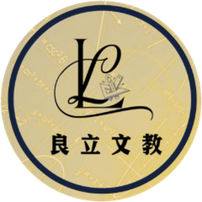

<!DOCTYPE html>
<html lang="en">
<head>
<meta charset="utf-8">
<meta name="viewport" content="width=device-width, initial-scale=1">
<title>時態偵探 Time Detective｜良立文教</title>
<meta name="description" content="良立文教的小偵探 Nora 和 Theo，帶你去鐘樓冒險，玩遊戲學會英文六大時態！">
<meta name="theme-color" content="#1b2340">
<meta name="apple-mobile-web-app-capable" content="yes">
<meta name="mobile-web-app-capable" content="yes">
<meta name="apple-mobile-web-app-title" content="時態偵探">
<link rel="icon" type="image/png" href="favicon.png">
<link rel="apple-touch-icon" href="apple-touch-icon.png">
<link rel="manifest" href="manifest.webmanifest">
<meta property="og:title" content="時態偵探 Time Detective｜良立文教">
<meta property="og:description" content="跟著良立文教的小偵探 Nora 和 Theo 去冒險，玩遊戲學英文時態！">
<meta property="og:image" content="https://ljy07ljy07-byte.github.io/time-detective/icon-512.png">
<meta property="og:url" content="https://ljy07ljy07-byte.github.io/time-detective/">
<link rel="preconnect" href="https://fonts.googleapis.com">
<link rel="preconnect" href="https://fonts.gstatic.com" crossorigin>
<link href="https://fonts.googleapis.com/css2?family=Bricolage+Grotesque:opsz,wght@12..96,600;12..96,800&family=Atkinson+Hyperlegible:ital,wght@0,400;0,700;1,400&display=swap" rel="stylesheet">
<style>
/* Layout idea: a detective's casebook. Story first, pattern second, name last. One column, cards stacked, tense color carries meaning. */
:root {
  --ink: #1b2340;
  --muted: #5a6382;
  --paper: #f3f5fa;
  --card: #ffffff;
  --line: #dde2ee;
  --accent: #1b2340;
  --good: #16794c;
  --bad: #c2362f;
  --good-bg: #e6f5ec;
  --bad-bg: #fbe9e7;
  --pres: #2f6fd6; --prog: #1f9d6b; --past: #d9711a; --fut: #8a4fd3; --pp: #d02a6b; --pastpf: #0e7490;
  --display: "Bricolage Grotesque", "Segoe UI", system-ui, sans-serif;
  --body: "Atkinson Hyperlegible", "Segoe UI", system-ui, sans-serif;
  color-scheme: light;
}
@media (prefers-color-scheme: dark) {
  :root:not([data-theme="light"]) {
    --ink: #e8ebf6; --muted: #a3abc6; --paper: #11152a; --card: #1a2038; --line: #2c3456; --accent: #e8ebf6;
    --good: #5fd39a; --bad: #ff8a80; --good-bg: #173a2a; --bad-bg: #42201f;
    --pres: #6ea0ff; --prog: #4fd1a0; --past: #ffa24d; --fut: #b98cff; --pp: #ff6fa8; --pastpf: #46c4e0;
    color-scheme: dark;
  }
}
:root[data-theme="dark"] {
  --ink: #e8ebf6; --muted: #a3abc6; --paper: #11152a; --card: #1a2038; --line: #2c3456; --accent: #e8ebf6;
  --good: #5fd39a; --bad: #ff8a80; --good-bg: #173a2a; --bad-bg: #42201f;
  --pres: #6ea0ff; --prog: #4fd1a0; --past: #ffa24d; --fut: #b98cff; --pp: #ff6fa8; --pastpf: #46c4e0;
  color-scheme: dark;
}
* { box-sizing: border-box; }
html, body { margin: 0; }
body { background: var(--paper); color: var(--ink); font-family: var(--body); font-size: 17px; line-height: 1.6; }
.wrap { max-width: 760px; margin: 0 auto; padding: 20px 16px 64px; display: grid; gap: 18px; }
h1, h2, h3 { font-family: var(--display); line-height: 1.15; margin: 0; text-wrap: balance; }
h1 { font-size: 34px; font-weight: 800; letter-spacing: -.01em; }
h2 { font-size: 24px; font-weight: 800; }
h3 { font-size: 18px; font-weight: 600; }
p { margin: 0; }
button { font: inherit; color: inherit; cursor: pointer; }
button:focus-visible, select:focus-visible, a:focus-visible { outline: 3px solid var(--tc, var(--pres)); outline-offset: 2px; }
.muted { color: var(--muted); }
.zh { display: none; color: var(--muted); font-size: 15px; }
body.show-zh .zh { display: block; }
body.show-zh span.zh { display: inline; }

/* top bar */
.top { display: flex; align-items: center; justify-content: space-between; gap: 12px; flex-wrap: wrap; }
.brand { display: flex; align-items: center; gap: 10px; }
.brand svg { width: 34px; height: 34px; }
.brand b { font-family: var(--display); font-size: 20px; font-weight: 800; }
.toggles { display: flex; gap: 8px; flex-wrap: wrap; }
.chip-btn { border: 1.5px solid var(--line); background: var(--card); border-radius: 999px; padding: 6px 14px; font-size: 14px; }
.chip-btn[aria-pressed="true"] { border-color: var(--ink); background: var(--ink); color: var(--paper); }

/* home */
.hero { display: grid; gap: 8px; }
.hero p { max-width: 62ch; }
.how { display: grid; grid-template-columns: repeat(4, 1fr); gap: 8px; }
.how div { background: var(--card); border: 1px solid var(--line); border-radius: 12px; padding: 10px 12px; font-size: 14.5px; }
.how b { display: block; font-family: var(--display); font-size: 15px; }
.chapters { display: grid; gap: 10px; }
.chap { display: grid; grid-template-columns: 54px 1fr auto; gap: 14px; align-items: center; text-align: left; width: 100%;
  background: var(--card); border: 1px solid var(--line); border-left: 6px solid var(--tc); border-radius: 14px; padding: 12px 14px; }
.chap:hover { border-color: var(--tc); }
.chap .no { font-family: var(--display); font-weight: 800; font-size: 26px; color: var(--tc); text-align: center; }
.chap .t { font-family: var(--display); font-weight: 600; font-size: 18px; }
.chap .s { font-size: 14.5px; color: var(--muted); }
.stars { font-size: 18px; letter-spacing: 2px; color: #e3a008; white-space: nowrap; }
.stars .off { color: var(--line); }
.row-btns { display: flex; gap: 10px; flex-wrap: wrap; }
.big-btn { border: none; background: var(--ink); color: var(--paper); border-radius: 12px; padding: 12px 18px; font-weight: 700; }
.ghost-btn { border: 1.5px solid var(--line); background: var(--card); border-radius: 12px; padding: 10px 16px; font-weight: 700; }
.parent { background: var(--card); border: 1px dashed var(--muted); border-radius: 14px; padding: 14px 16px; display: grid; gap: 6px; font-size: 15.5px; }
.parent ul { margin: 0; padding-left: 20px; }

/* chapter */
.chead { display: grid; gap: 6px; }
.crumbs { display: flex; gap: 10px; align-items: center; flex-wrap: wrap; }
.back { border: none; background: none; padding: 0; color: var(--muted); font-weight: 700; }
.tag { background: var(--tc); color: #fff; border-radius: 999px; padding: 2px 10px; font-size: 13px; font-weight: 700; }
.steps { display: flex; gap: 6px; flex-wrap: wrap; }
.steps { flex-wrap: nowrap; }
.steps span { flex: 1 1 0; min-width: 0; height: 6px; border-radius: 3px; background: var(--line); }
.steps span.done { background: var(--tc); }
.steps span.now { background: var(--tc); opacity: .45; }
.card { background: var(--card); border: 1px solid var(--line); border-radius: 16px; padding: 18px; display: grid; gap: 14px; }
.step-label { font-size: 13px; font-weight: 700; letter-spacing: .08em; text-transform: uppercase; color: var(--tc); }
.story { font-size: 19px; line-height: 1.85; }
.story .w { border-radius: 6px; padding: 1px 2px; }
.story.read .t-verb { font-weight: 700; color: var(--tc); }
.story.spot .w { cursor: pointer; }
.story.spot .w:hover { background: color-mix(in srgb, var(--tc) 12%, transparent); }
.story .found { background: var(--tc); color: #fff; }
.story .miss { background: var(--bad-bg); color: var(--bad); }
.counter { font-weight: 700; color: var(--tc); }
.listen { display: inline-flex; align-items: center; gap: 8px; border: 1.5px solid var(--tc); color: var(--tc); background: none; border-radius: 999px; padding: 6px 14px; font-weight: 700; font-size: 15px; }
.listen svg { width: 16px; height: 16px; }
.opts { display: grid; gap: 10px; }
.opt { text-align: left; width: 100%; background: var(--card); border: 2px solid var(--line); border-radius: 12px; padding: 12px 14px; display: flex; gap: 10px; align-items: center; }
.opt:hover:not(:disabled) { border-color: var(--tc); }
.opt:disabled { cursor: default; }
.opt.right { border-color: var(--good); background: var(--good-bg); }
.opt.wrong { border-color: var(--bad); background: var(--bad-bg); }
.opt .k { flex: none; width: 28px; height: 28px; border-radius: 8px; display: grid; place-items: center; background: var(--paper); font-weight: 700; font-size: 14px; }
.opt svg { width: 100%; max-width: 300px; height: auto; }
.opt-grid { display: grid; grid-template-columns: 1fr 1fr; gap: 10px; }
.feedback { border-radius: 12px; padding: 12px 14px; font-size: 16px; }
.feedback.good { background: var(--good-bg); color: var(--good); }
.feedback.bad { background: var(--bad-bg); color: var(--bad); }
.feedback b { display: block; }
.feedback .why { color: var(--ink); margin-top: 2px; }
.qcount { font-size: 14px; color: var(--muted); font-weight: 700; }
.prompt { font-size: 20px; line-height: 1.5; }
.blank { display: inline-block; min-width: 90px; border-bottom: 2.5px solid var(--tc); text-align: center; color: var(--tc); font-weight: 700; }
.wordline { display: flex; flex-wrap: wrap; gap: 6px; font-size: 20px; }
.wordline button { border: 2px solid var(--line); background: var(--card); border-radius: 10px; padding: 4px 10px; }
.wordline button:hover:not(:disabled) { border-color: var(--tc); }
.wordline button.bad { border-color: var(--bad); background: var(--bad-bg); }
.wordline button.hit { border-color: var(--tc); background: var(--tc); color: #fff; }
.rule { border: 2px solid var(--tc); border-radius: 14px; overflow: hidden; }
.rule-h { background: var(--tc); color: #fff; padding: 8px 14px; display: flex; justify-content: space-between; gap: 10px; flex-wrap: wrap; font-family: var(--display); font-weight: 600; }
.rule-b { padding: 12px 14px; display: grid; gap: 10px; }
.rule-b svg { width: 100%; height: auto; max-height: 120px; }
.rule-row { display: grid; grid-template-columns: 92px 1fr; gap: 10px; font-size: 16px; }
.rule-row em { font-style: normal; font-size: 13px; font-weight: 700; color: var(--tc); text-transform: uppercase; letter-spacing: .06em; padding-top: 3px; }
.next { justify-self: end; }
.done-card { text-align: center; justify-items: center; }
.done-card .stars { font-size: 34px; }
/* briefing */
.bt { width: 100%; border-collapse: collapse; font-size: 16px; }
.bt th, .bt td { border: 1px solid var(--line); padding: 7px 9px; text-align: left; vertical-align: top; }
.bt th { background: color-mix(in srgb, var(--tc) 12%, transparent); font-size: 14px; }
.bt small { color: var(--muted); }
.chain { display: flex; flex-wrap: wrap; gap: 6px; align-items: center; font-size: 17px; margin: 6px 0; }
.chain span { background: var(--paper); border: 1px solid var(--line); border-radius: 10px; padding: 5px 10px; }
.chain span + span::before { content: "→ "; color: var(--muted); }
.vs { display: grid; grid-template-columns: 1fr 1fr; gap: 6px 14px; font-size: 16.5px; margin: 6px 0; }
.vs small { color: var(--muted); }
.mk { font-weight: 800; margin-right: 4px; } .mk.ok { color: var(--good); } .mk.no { color: var(--bad); }
.irr { display: flex; flex-wrap: wrap; gap: 6px; } .irr span { background: var(--paper); border: 1px solid var(--line); border-radius: 8px; padding: 3px 9px; }
.bblock h3 { font-family: var(--display); font-size: 18px; margin: 0 0 6px; color: var(--tc); }
.bblock p { margin: 4px 0; }
.bblock u { text-decoration-color: var(--tc); text-decoration-thickness: 3px; }
.worked { border: 2px dashed var(--tc); border-radius: 14px; padding: 14px; display: grid; gap: 8px; }
.worked ol { margin: 0; padding-left: 22px; display: grid; gap: 6px; }
.unit-row { display: grid; grid-template-columns: 1fr auto; gap: 10px; align-items: center; }
.chap.brief { border-style: dashed; }
@media (max-width: 560px) { .vs { grid-template-columns: 1fr; } }
/* boss */
.report { font-size: 18.5px; line-height: 2.1; }
.report select { font: inherit; font-size: 16px; border: 2px solid var(--line); border-radius: 8px; padding: 2px 4px; background: var(--card); color: var(--ink); max-width: 100%; }
.report select.right { border-color: var(--good); background: var(--good-bg); }
.report select.wrong { border-color: var(--bad); background: var(--bad-bg); }
.report sup { color: var(--muted); font-weight: 700; margin-right: 2px; }
.whys { display: grid; gap: 8px; font-size: 15.5px; }
.whys div { border-left: 4px solid var(--line); padding-left: 10px; }
.whys div.ok { border-color: var(--good); }
.whys div.no { border-color: var(--bad); }
.casebook { display: grid; gap: 14px; }
@media (max-width: 560px) {
  .how { grid-template-columns: 1fr 1fr; }
  .opt-grid { grid-template-columns: 1fr; }
  h1 { font-size: 28px; }
  .story { font-size: 18px; }
  .rule-row { grid-template-columns: 1fr; gap: 0; }
}
/* grammar story player (added) */
.player { display: grid; gap: 12px; width: 100%; }
.ptabs { display: flex; gap: 6px; flex-wrap: wrap; justify-content: center; }
.ptabs button { border: 2px solid var(--tc); background: var(--card); color: var(--tc); border-radius: 999px; padding: 5px 14px; font-weight: 800; }
.ptabs button.on { background: var(--tc); color: #fff; }
.pstage { position: relative; display: grid; gap: 14px; background: color-mix(in srgb, var(--tc) 7%, var(--card)); border: 2px dashed color-mix(in srgb, var(--tc) 35%, var(--line)); border-radius: 18px; padding: 14px 12px 22px; overflow: hidden; }
.ps-top { display: flex; gap: 10px; align-items: flex-end; }
.ps-cast { display: flex; align-items: flex-end; flex: none; position: relative; }
.ps-prop { font-size: 34px; margin-left: -6px; }
.ps-say { flex: 1; font-size: 17px; } .ps-say p:first-child { font-weight: 600; }
.psent { font-family: var(--display); font-size: 34px; font-weight: 700; line-height: 1.3; text-align: center; padding-top: 34px; }
.mw { display: inline-block; white-space: nowrap; }
.mw.new { color: #fff; background: var(--tc); border-radius: 10px; padding: 0 8px; font-weight: 800; }
.subj { position: relative; display: inline-block; }
.sb { position: absolute; left: 50%; top: -30px; transform: translateX(-50%); font-family: var(--body); font-size: 13px; font-weight: 800; white-space: nowrap; border-radius: 999px; padding: 1px 9px; }
.sb.one { background: #e3a008; color: #fff; box-shadow: 0 0 0 4px color-mix(in srgb, #e3a008 30%, transparent); }
.sb.many { background: var(--muted); color: #fff; }
.suf { display: inline-block; }
.suf.in { color: #fff; background: #e3a008; border-radius: 10px; padding: 0 5px; margin-left: 2px; font-weight: 800; box-shadow: 0 4px 0 #b07800; }
.suf.in.swap { background: var(--tc); box-shadow: 0 4px 0 color-mix(in srgb, var(--tc) 60%, #000); }
.suf.out, .mw.gone { color: var(--bad); background: var(--bad-bg); border-radius: 8px; text-decoration: line-through; overflow: hidden; vertical-align: bottom; }
.pctl { display: flex; gap: 8px; align-items: center; justify-content: center; flex-wrap: wrap; }
.pbtn { border: 2px solid var(--line); background: var(--card); border-radius: 12px; min-width: 44px; height: 42px; font-weight: 800; padding: 0 12px; }
.pbtn.next { background: var(--tc); color: #fff; border-color: var(--tc); font-size: 17px; padding: 0 20px; }
.pbtn.next.done { background: var(--card); color: var(--tc); }
.pdots { display: flex; gap: 5px; } .pdots span { width: 10px; height: 10px; border-radius: 50%; background: var(--line); } .pdots span.on { background: var(--tc); transform: scale(1.3); } .pdots span.past { background: color-mix(in srgb, var(--tc) 45%, var(--line)); }
.anim-btn { border: 2px solid rgba(255,255,255,.8); background: rgba(255,255,255,.15); color: #fff; border-radius: 18px; padding: 10px 16px; font-weight: 800; font-size: 17px; margin-top: 6px; }
.anim-btn small { display: block; font-size: 13.5px; opacity: .9; }
@media (max-width: 560px) { .psent { font-size: 25px; } .ps-top { flex-direction: column; align-items: stretch; } .ps-cast { justify-content: center; } .ps-cast .av { width: 56px; height: 65px; } }
@media (prefers-reduced-motion: no-preference) {
  .ps-say { animation: bubble .45s both; }
  .sb { animation: badge 1s .3s both; }
  @keyframes badge { 0% { opacity: 0; transform: translate(-50%, -30px) scale(3); } 50% { opacity: 1; transform: translate(-50%, 0) scale(.8); } 70% { transform: translate(-50%, 0) scale(1.2); } 100% { transform: translate(-50%, 0) scale(1); } }
  .sb.one { animation: badge 1s .3s both, spot 1.2s 1.3s ease-in-out 2; }
  @keyframes spot { 50% { box-shadow: 0 0 0 12px color-mix(in srgb, #e3a008 25%, transparent); } }
  /* exaggerated: endings fly in from far above, spinning, huge, then BOING */
  .suf.in { animation: superfly 1.3s calc(1.2s + var(--d, 0s)) cubic-bezier(.2,1.5,.4,1) both; }
  @keyframes superfly {
    0% { opacity: 0; transform: translate(160px, -260px) rotate(-720deg) scale(5); }
    55% { opacity: 1; transform: translate(0, 0) rotate(0) scale(1.6, .6); }
    70% { transform: translateY(-26px) scale(.85, 1.25); }
    85% { transform: translateY(0) scale(1.2, .85); }
    100% { transform: none; } }
  /* endings fly off: wobble in fear, then get launched away */
  .suf.out, .mw.gone { animation: launch 1.5s .5s ease-in forwards; }
  @keyframes launch {
    0% { max-width: 8em; transform: none; }
    15% { transform: rotate(-12deg) scale(1.3); } 25% { transform: rotate(12deg) scale(1.3); } 35% { transform: rotate(-12deg) scale(1.3); opacity: 1; max-width: 8em; }
    100% { opacity: 0; transform: translate(-180px, -320px) rotate(-900deg) scale(3); max-width: 0; padding: 0; } }
  .mw.new { animation: drop2 1.1s 1s cubic-bezier(.25,1.6,.45,1) both; }
  @keyframes drop2 { 0% { opacity: 0; transform: translateY(-240px) scale(2.5) rotate(15deg); } 60% { opacity: 1; transform: translateY(0) scale(1.3, .7); } 80% { transform: scale(.9, 1.15); } 100% { transform: none; } }
  .shake2 { animation: shake2 .45s; } @keyframes shake2 { 20% { transform: translate(-6px, 3px); } 40% { transform: translate(6px, -3px); } 60% { transform: translate(-4px, 2px); } 80% { transform: translate(3px, -1px); } }
  .ps-cast .av { animation: bob 1.8s ease-in-out infinite; } .ps-prop { animation: hop 1.2s ease-in-out infinite; display: inline-block; }
}
@media (prefers-reduced-motion: reduce) { .suf.out, .mw.gone { display: none; } }
/* beat-by-beat sequence (added): one thing moves at a time */
.beats { display: flex; gap: 6px; justify-content: center; }
.beats span { width: 34px; height: 34px; border-radius: 50%; display: grid; place-items: center; font-size: 17px; background: var(--card); border: 2px solid var(--line); filter: grayscale(1); opacity: .45; }
.ps-cast { position: relative; display: flex; justify-content: center; align-items: flex-end; padding-top: 50px; min-height: 140px; }
.ps-cast .av { width: 84px; height: 98px; }
.ps-sym { position: absolute; top: 0; left: 50%; transform: translateX(-50%); display: flex; gap: 6px; }
.sy { font-size: 22px; font-weight: 800; border-radius: 999px; padding: 2px 14px; white-space: nowrap; background: var(--card); border: 3px solid var(--line); }
.sy.one { border-color: #e3a008; color: #b07800; background: #fff6dc; }
.sy.many { border-color: var(--muted); color: var(--ink); }
.sy.prop { font-size: 26px; padding: 0 10px; }
.ps-cap { text-align: center; display: grid; gap: 2px; } .ps-cap b { font-size: 22px; color: var(--tc); } .ps-cap span { color: var(--muted); font-size: 15px; font-weight: 600; }
.psent { padding-top: 30px; }
@media (prefers-reduced-motion: no-preference) {
  /* beat timing: 0s cast · 1.2s symbol · 2.4s sentence · 3.6s off · 4.8s in · 6s caption (no "off" beat → everything after moves 1.2s earlier) */
  .pstage { --t3: 2.4s; --t4: 3.6s; --t5: 4.8s; --t6: 6.2s; }
  .pstage.no-out { --t5: 3.6s; --t6: 5s; }
  .beats span { animation: beaton .4s calc(var(--b) * 1.2s) both; }
  @keyframes beaton { from { filter: grayscale(1); opacity: .45; } to { filter: none; opacity: 1; border-color: var(--tc); transform: scale(1.15); } }
  .ps-cast .av { animation: castin .7s cubic-bezier(.3,1.5,.5,1) both, bob 1.8s 1s ease-in-out infinite; }
  .ps-cast .av + .av { animation-delay: .25s, 1.2s; }
  @keyframes castin { from { opacity: 0; transform: translateY(40px) scale(.5); } }
  .ps-sym { animation: symup 1s 1.2s cubic-bezier(.3,1.6,.5,1) both; }
  @keyframes symup { 0% { opacity: 0; transform: translate(-50%, 70px) scale(.3); } 70% { opacity: 1; transform: translate(-50%, -8px) scale(1.25); } 100% { transform: translate(-50%, 0) scale(1); } }
  .sy.one { animation: spot 1.2s 2.2s ease-in-out 2; }
  .psent { animation: sentin .7s var(--t3) both; } @keyframes sentin { from { opacity: 0; transform: translateY(20px); } }
  .sb { animation: badge 1s var(--t3) both; }
  .sb.one { animation: badge 1s var(--t3) both; }
  .suf.out, .mw.gone { animation: launch 1.5s var(--t4) ease-in forwards; }
  .suf.in { animation: superfly 1.3s calc(var(--t5) + var(--d, 0s)) cubic-bezier(.2,1.5,.4,1) both; }
  .mw.new { animation: drop2 1.1s var(--t5) cubic-bezier(.25,1.6,.45,1) both; }
  .mw.new .suf.in { animation-delay: calc(var(--t5) + .4s + var(--d, 0s)); }
  .ps-cap { animation: sentin .6s var(--t6) both; }
}
/* subject → pronoun → group → verb chain (added) */
.chain2 { display: flex; flex-wrap: wrap; gap: 6px; align-items: center; justify-content: center; font-size: 18px; }
.chain2 .ck { background: var(--card); border: 2px solid var(--line); border-radius: 12px; padding: 4px 10px; font-weight: 700; white-space: nowrap; }
.chain2 .ck b { font-family: var(--display); }
.chain2 .pron { color: var(--tc); font-size: 22px; }
.chain2 .g.one { color: #b07800; } .chain2 .ck:has(.g.one) { border-color: #e3a008; background: #fff6dc; }
.chain2 .rule { color: #fff; } .chain2 .ck:has(.rule) { background: var(--tc); border-color: var(--tc); }
.chain2 i { font-style: normal; font-weight: 800; color: var(--muted); }
.has-chain .beats { display: none; }
.has-chain .ps-cast { padding-top: 0; min-height: 0; }
@media (max-width: 560px) { .chain2 { font-size: 15px; gap: 3px; } .chain2 .ck { padding: 3px 7px; } .chain2 .pron { font-size: 18px; } }
@media (prefers-reduced-motion: no-preference) {
  .pstage.has-chain { --t3: 6s; --t4: 7.2s; --t5: 8.4s; --t6: 9.8s; }
  .pstage.has-chain.no-out { --t5: 7.2s; --t6: 8.6s; }
  .chain2 .ck, .chain2 i { animation: chainin .8s calc(.6s + var(--c) * 1.1s) cubic-bezier(.3,1.6,.5,1) both; }
  .chain2 i { animation-delay: calc(.3s + var(--c) * 1.1s); }
  @keyframes chainin { 0% { opacity: 0; transform: translateY(-30px) scale(1.8); } 60% { opacity: 1; transform: scale(.9); } 100% { transform: none; } }
}
/* voice panel (added) */
.vpanel-bg { position: fixed; inset: 0; background: rgba(20,24,40,.45); z-index: 60; display: grid; place-items: center; padding: 16px; }
.vpanel { background: var(--card); border-radius: 18px; padding: 18px; width: min(440px, 100%); display: grid; gap: 10px; max-height: 90vh; overflow: auto; }
.vlist { display: grid; gap: 6px; }
.vrow { display: grid; grid-template-columns: auto 1fr auto; gap: 10px; align-items: center; border: 1.5px solid var(--line); border-radius: 12px; padding: 6px 10px; cursor: pointer; }
.vrow span { display: grid; } .vrow small { color: var(--muted); }
.vrate { display: flex; gap: 6px; align-items: center; flex-wrap: wrap; font-weight: 700; }
/* sections + map (added) */
.pwrap { display: grid; grid-template-columns: 210px 1fr; gap: 12px; align-items: start; }
.pmap { background: #fffdf5; border: 2px solid #d9cfae; border-radius: 12px; padding: 10px; display: grid; gap: 6px; font-size: 14px;
  background-image: repeating-linear-gradient(transparent 0 27px, #efe6c8 27px 28px); box-shadow: 2px 3px 0 #e7dcb8; transform: rotate(-.6deg); }
.pmap-h { font-weight: 800; color: #8a6d1d; font-size: 13px; letter-spacing: .04em; }
.pm-row { display: grid; gap: 3px; border-top: 1.5px dashed #d9cfae; padding-top: 5px; }
.pm-lab { font-weight: 800; font-size: 13px; }
.pm-cells { display: flex; flex-wrap: wrap; gap: 4px; }
.pm-cell { border: 1.5px solid #cdbf90; border-radius: 8px; padding: 1px 7px; background: #fff; font-weight: 700; color: #6b5a26; transition: all .3s; }
.pm-cell.sec { border-color: var(--tc); color: var(--tc); }
.pm-cell.seen { background: color-mix(in srgb, var(--tc) 10%, #fff); }
.pm-cell.here { background: var(--tc); color: #fff; border-color: var(--tc); transform: scale(1.15); box-shadow: 0 0 0 4px color-mix(in srgb, var(--tc) 30%, transparent); position: relative; z-index: 1; }
@media (max-width: 560px) { .ptabs button { font-size: 13.5px; padding: 3px 10px; } .ptabs { gap: 4px; } }
@media (max-width: 700px) { .pwrap { grid-template-columns: 1fr; } .pmap { transform: none; } .pm-row { grid-template-columns: 110px 1fr; align-items: center; } }
@media (prefers-reduced-motion: no-preference) { .pm-cell.here { animation: herepop .6s cubic-bezier(.3,1.7,.5,1); } @keyframes herepop { from { transform: scale(2); } } }
/* map = the only navigation (added) */
.pwrap { grid-template-columns: 200px 1fr; }
.pmap { padding: 8px; gap: 4px; }
.pm-row { text-align: left; width: 100%; background: none; border: 2px solid transparent; border-top: 1.5px dashed #d9cfae; border-radius: 10px; padding: 6px; display: grid; gap: 4px; font: inherit; cursor: pointer; }
.pm-row:hover { background: rgba(255,255,255,.7); }
.pm-row.on { border: 2px solid var(--tc); background: #fff; box-shadow: 0 3px 0 color-mix(in srgb, var(--tc) 35%, transparent); }
.pm-row .pm-lab { font-size: 13px; color: #6b5a26; }
.pm-row .pm-cell { font-size: 13px; }
.pm-row.big { padding: 10px 8px; background: #fff3c4; border-color: #e3a008; border-style: solid; }
.pm-row.big .pm-lab { font-size: 17px; color: #8a5a00; }
.pm-row.big .pm-cell { font-size: 17px; padding: 3px 10px; border-width: 2px; }
.pm-row.big.on { background: #fff3c4; border-color: var(--tc); border-width: 3px; }
.pstage { min-height: 460px; align-content: center; }
.psent { font-size: 38px; }
@media (max-width: 700px) {
  .pwrap { grid-template-columns: 1fr; }
  .pmap { display: grid; grid-template-columns: 1fr 1fr; }
  .pmap-h { grid-column: 1 / -1; }
  .pm-row.big { grid-column: 1 / -1; }
  .pm-row { grid-template-columns: 1fr; }
  .pstage { min-height: 380px; } .psent { font-size: 27px; }
}
/* key (changing) forms bigger (added) */
.pm-cell.key { font-size: 1.22em; border-width: 2px; border-color: #e3a008; background: #fff; color: #8a5a00; padding: 2px 9px; }
.pm-row .pm-cell:not(.key) { font-size: 12px; opacity: .85; }
.pm-row.big .pm-cell:not(.key) { font-size: 13px; }
.pm-cell.key.here, .pm-cell.here { color: #fff; }
.psent .mw.kw { font-size: 1.22em; color: var(--tc); text-decoration: underline; text-decoration-thickness: 4px; text-underline-offset: 6px; }
.psent .mw.kw.new { color: #fff; text-decoration: none; }
/* core target + fix (added) */
.pmap-target { background: var(--tc); color: #fff; border-radius: 10px; padding: 6px 8px; font-size: 12.5px; font-weight: 700; display: grid; gap: 2px; }
.pmap-target b { font-size: 17px; font-family: var(--display); }
.pm-cell.here, .pm-cell.key.here { background: var(--tc) !important; border-color: var(--tc) !important; color: #fff !important; }
@media (max-width: 700px) { .pmap-target { grid-column: 1 / -1; } }
/* animations (added) */
.scene { display: grid; gap: 10px; justify-items: center; width: 100%; }
.sc-stage { position: relative; display: flex; align-items: flex-end; justify-content: center; gap: 4px; height: 120px; width: 100%; max-width: 360px; }
.sc-act { font-size: 48px; line-height: 1; }
.sc-chips { display: flex; gap: 6px; flex-wrap: wrap; justify-content: center; }
.sc-chips span { background: color-mix(in srgb, var(--tc) 14%, var(--card)); border: 2px solid var(--tc); color: var(--tc); border-radius: 999px; padding: 2px 12px; font-weight: 800; font-size: 15px; }
.sc-cap { font-size: 21px; } .sc-cap b { color: var(--tc); } .sc-cap span { display: block; font-size: 15.5px; color: var(--muted); font-weight: 600; margin-top: 2px; }
.card[hidden] { display: none; }
.k { transform-box: fill-box; transform-origin: center; }
@media (prefers-reduced-motion: no-preference) {
  .fc-in { animation: slidein .45s ease-out both; }
  @keyframes slidein { from { opacity: 0; transform: translateX(40px); } }
  .fc-shape u { display: inline-block; animation: popword 1s .5s both; }
  @keyframes popword { 0% { opacity: 0; transform: translateY(-30px) scale(1.8); } 60% { opacity: 1; transform: translateY(4px) scale(1.15); } 100% { transform: none; } }
  .fc-ex > div { animation: slidein .5s both; } .fc-ex > div:nth-child(2) { animation-delay: .5s; }
  .bubble { animation: bubble .45s .15s both; } @keyframes bubble { from { opacity: 0; transform: scale(.7); transform-origin: left bottom; } }
  .duo .av, .start .av { animation: bob 2.4s ease-in-out infinite; } .duo .av + .av { animation-delay: .5s; }
  .done-card .duo .av { animation: jump .7s ease-in-out 4; } .done-card .duo .av + .av { animation-delay: .2s; }
  @keyframes jump { 50% { transform: translateY(-16px) rotate(-4deg); } }
  .opt.right { animation: good .5s; } @keyframes good { 40% { transform: scale(1.04); } }
  .feedback { animation: slidein .3s ease-out both; }
  .story .found { animation: good .4s; }
  .codecard { animation: popword .9s .2s both; } .codecard .ce { display: inline-block; animation: spin 1.2s 1s both; }
  @keyframes spin { from { transform: rotate(-200deg) scale(.2); } }
  /* timelines */
  .tl-anim .kp { animation: dotpop 3.2s calc(var(--i) * .22s) infinite both; }
  @keyframes dotpop { 0% { opacity: 0; transform: scale(0); } 10% { opacity: 1; transform: scale(1.6); } 16%, 85% { opacity: 1; transform: scale(1); } 100% { opacity: 0; } }
  .tl-anim .kpulse { animation: pulse 1.2s ease-in-out infinite; } @keyframes pulse { 50% { transform: scale(1.35); opacity: .5; } }
  .tl-anim .kdrop { animation: drop .8s cubic-bezier(.3,1.6,.6,1) .3s both; } @keyframes drop { from { opacity: 0; transform: translateY(-40px); } }
  .tl-anim .kfut { animation: futglow 1.6s ease-in-out infinite; } @keyframes futglow { 50% { transform: scale(1.5); opacity: .4; } }
  .tl-anim .kpop { animation: dotpop1 .6s .2s both; } @keyframes dotpop1 { from { transform: scale(0); } 60% { transform: scale(1.6); } }
  .tl-anim .kgrow { stroke-dasharray: 1; animation: grow 1.6s .7s ease-in-out both; } @keyframes grow { from { stroke-dashoffset: 1; } to { stroke-dashoffset: 0; } }
  .tl-anim .kfade { animation: fadein .8s .9s both; } @keyframes fadein { from { opacity: 0; } }
  .tl-anim .kpop2 { animation: dotpop1 .6s 1.6s both; }
  /* scenes */
  .sc-chips span { animation: dotpop1 .5s calc(.4s + var(--i) * .45s) both; }
  .sc-loop .sc-act { animation: hop 1s ease-in-out infinite; } @keyframes hop { 50% { transform: translateY(-22px) rotate(10deg); } }
  .sc-loop .sc-chips span { animation: dayflash 2.5s calc(var(--i) * .5s) infinite both; } @keyframes dayflash { 0%, 30% { background: var(--tc); color: #fff; } 40%, 100% { background: color-mix(in srgb, var(--tc) 14%, var(--card)); } }
  .sc-run .sc-who { animation: runbob .35s ease-in-out infinite; } @keyframes runbob { 50% { transform: translateY(-8px); } }
  .sc-run .sc-act { animation: runbob .35s .17s ease-in-out infinite; }
  .sc-run .sc-chips span { animation: pulse 1s infinite; }
  .sc-past .sc-act { animation: drop .8s cubic-bezier(.3,1.6,.6,1) .3s both; }
  .sc-past .sc-stage { animation: sepia 1s 1.4s both; } @keyframes sepia { to { filter: sepia(.8) grayscale(.3); opacity: .75; } }
  .sc-fut .sc-act { animation: futglow 1.6s ease-in-out infinite; } .sc-fut .sc-who { animation: walk 3s ease-in-out infinite; } @keyframes walk { 50% { transform: translateX(40px); } }
  .sc-pp .sc-who { animation: walkin 2.4s ease-in-out both; } @keyframes walkin { from { transform: translateX(-90px); } }
  .sc-pastpf .sc-act { animation: drop .7s .3s both, tick 1s 1s 2; } @keyframes tick { 50% { transform: rotate(20deg); } }
  .sc-pastpf .sc-who { animation: walkin 1.4s 1.4s ease-out both; }
}
/* briefing flash cards + key card (added) */
.flash { min-height: 330px; align-content: start; }
.fc-dots { display: flex; gap: 6px; } .fc-dots span { width: 28px; height: 6px; border-radius: 3px; background: var(--line); } .fc-dots span.on { background: var(--tc); }
.fc-body { display: grid; justify-items: center; text-align: center; gap: 8px; padding: 8px 0; }
.fc-body svg { max-width: 100%; height: auto; }
.fc-big { font-family: var(--display); font-size: 26px; font-weight: 800; color: var(--tc); }
.fc-zh { font-size: 18px; color: var(--muted); font-weight: 600; }
.fc-shape { font-family: var(--display); font-size: 30px; font-weight: 800; padding: 18px 10px 4px; }
.fc-shape u, .kc-row u { text-decoration-color: var(--tc); text-decoration-thickness: 4px; color: var(--tc); }
.fc-ex { display: grid; gap: 12px; width: 100%; }
.fc-ex div { display: flex; gap: 10px; align-items: center; justify-content: center; font-size: 22px; }
.fc-ex b, .kc-ex b { color: var(--tc); }
.keycard { border: 3px solid var(--tc); border-radius: 16px; padding: 12px 14px; display: grid; gap: 8px; justify-items: center; text-align: center; background: var(--card); }
.keycard svg { max-width: 100%; height: auto; }
.kc-h { font-family: var(--display); font-weight: 800; color: var(--tc); font-size: 18px; } .kc-h span { color: var(--muted); font-size: 15px; }
.kc-row { display: grid; gap: 2px; font-size: 19px; } .kc-row span { color: var(--muted); font-size: 15px; }
.kc-ex { display: grid; gap: 2px; font-size: 17px; font-style: italic; }
.fc-mini .keycard { border-width: 2px; }
/* characters + unit map (added) */
.av { flex: none; display: block; }
.duo { display: flex; gap: 4px; align-items: flex-end; justify-content: center; }
.talk { display: flex; gap: 10px; align-items: flex-end; }
.bubble { position: relative; background: var(--card); border: 2px solid var(--line); border-radius: 16px; padding: 10px 14px; font-size: 16px; display: grid; gap: 4px; text-align: left; color: var(--ink); }
.bubble::before { content: ""; position: absolute; left: -10px; bottom: 18px; border: 8px solid transparent; border-right-color: var(--line); border-left: 0; }
.bubble b { font-family: var(--display); color: var(--tc, var(--ink)); font-size: 14px; }
.bubble .bz { color: var(--muted); font-size: 14.5px; }
.ubanner { display: grid; grid-template-columns: 1fr auto; gap: 16px; align-items: center; padding: 20px; border-radius: 22px; color: #fff;
  background: linear-gradient(135deg, var(--tc), color-mix(in srgb, var(--tc) 65%, #000)); }
.ubanner h2 { color: #fff; font-size: 30px; margin-top: 6px; } .ub-ico { font-size: 34px; }
.ub-zh { opacity: .9; font-weight: 600; margin-bottom: 8px; }
.ub-left { display: grid; justify-items: start; gap: 2px; }
.ub-right { max-width: 300px; }
.ubanner .go-btn { background: #fff; color: #1d2340; box-shadow: 0 6px 0 rgba(0,0,0,.25); }
.path { position: relative; display: grid; grid-template-columns: repeat(4, 1fr); gap: 12px; }
.path::before { content: ""; position: absolute; left: 12%; right: 12%; top: 46px; border-top: 4px dashed color-mix(in srgb, var(--tc) 45%, var(--line)); z-index: 0; }
.lvl { position: relative; z-index: 1; display: grid; justify-items: center; gap: 4px; text-align: center; background: none; border: none; padding: 6px 2px 10px; }
.lvl-dot { width: 80px; height: 80px; border-radius: 50%; display: grid; place-items: center; font-size: 30px; font-weight: 800; font-family: var(--display);
  background: var(--card); color: var(--tc); border: 4px solid color-mix(in srgb, var(--tc) 40%, var(--line)); box-shadow: 0 5px 0 color-mix(in srgb, var(--tc) 30%, var(--line)); transition: transform .12s; }
.lvl:hover .lvl-dot { transform: translateY(-3px); }
.lvl.done .lvl-dot { background: color-mix(in srgb, var(--tc) 14%, var(--card)); border-color: var(--tc); font-size: 36px; }
.lvl.next .lvl-dot { background: var(--tc); color: #fff; border-color: var(--tc); box-shadow: 0 0 0 6px color-mix(in srgb, var(--tc) 25%, transparent), 0 5px 0 color-mix(in srgb, var(--tc) 60%, #000); }
.lvl-label { font-family: var(--display); font-weight: 800; font-size: 17px; }
.lvl-sub { font-size: 13.5px; color: var(--muted); line-height: 1.3; min-height: 2.6em; }
.lvl .stars { font-size: 15px; }
.lvl-go { font-size: 13.5px; font-weight: 800; border-radius: 999px; padding: 3px 12px; border: 2px solid var(--tc); color: var(--tc); }
.lvl.next .lvl-go { background: var(--tc); color: #fff; }
.lvl.done .lvl-go { border-color: var(--good); color: var(--good); }
.done-card .duo { margin-bottom: 4px; }
@media (prefers-reduced-motion: no-preference) { .lvl.next .lvl-dot { animation: bob 1.6s ease-in-out infinite; } @keyframes bob { 50% { transform: translateY(-5px); } } }
@media (max-width: 640px) {
  .ubanner { grid-template-columns: 1fr; } .ub-right { max-width: none; }
  .path { grid-template-columns: 1fr 1fr; row-gap: 18px; } .path::before { display: none; }
  .lvl-dot { width: 68px; height: 68px; font-size: 26px; }
}
/* start screen (added) */
.start { text-align: center; display: grid; justify-items: center; gap: 10px; padding: 22px 16px 24px; border-radius: 22px;
  background: linear-gradient(160deg, color-mix(in srgb, #e3a008 16%, var(--card)), var(--card)); border: 2px solid color-mix(in srgb, #e3a008 50%, var(--line)); }
.start-ico { font-size: 64px; line-height: 1; }
.start h1 { font-size: 40px; } .start h1 span { display: block; font-size: 20px; color: var(--muted); font-weight: 600; margin-top: 4px; }
.start p { max-width: 46ch; color: var(--muted); }
.zh-always { display: block; font-size: 15px; }
.go-btn { border: none; background: var(--tc); color: #fff; border-radius: 18px; padding: 14px 30px; font-size: 26px; font-weight: 800; font-family: var(--display); box-shadow: 0 6px 0 color-mix(in srgb, var(--tc) 60%, #000); margin-top: 6px; }
.go-btn small { display: block; font-size: 15px; font-weight: 600; font-family: var(--body); opacity: .95; line-height: 1.35; }
.go-btn:active { transform: translateY(4px); box-shadow: 0 2px 0 color-mix(in srgb, var(--tc) 60%, #000); }
.status { display: flex; gap: 8px; flex-wrap: wrap; justify-content: center; }
.status span { background: var(--card); border: 1.5px solid var(--line); border-radius: 999px; padding: 4px 12px; font-weight: 700; font-size: 14.5px; }
.pick { font-size: 22px; } .pick span { color: var(--muted); font-size: 16px; font-weight: 600; margin-left: 6px; }
.tiles { display: grid; grid-template-columns: repeat(auto-fill, minmax(210px, 1fr)); gap: 12px; }
.tile { text-align: left; display: grid; gap: 4px; background: var(--card); border: 2px solid color-mix(in srgb, var(--tc) 35%, var(--line)); border-bottom-width: 6px; border-bottom-color: var(--tc); border-radius: 18px; padding: 14px; transition: transform .12s; }
.tile:hover { transform: translateY(-3px); border-color: var(--tc); }
.tile:active { transform: translateY(2px); }
.tile-top { display: flex; justify-content: space-between; align-items: center; }
.tile-no { background: var(--tc); color: #fff; border-radius: 999px; padding: 1px 10px; font-size: 13px; font-weight: 800; }
.tile-ico { font-size: 34px; line-height: 1; }
.tile-name { font-family: var(--display); font-weight: 800; font-size: 20px; color: var(--tc); line-height: 1.2; }
.tile-zh { font-size: 15px; color: var(--muted); font-weight: 600; }
.tile-codes { display: flex; gap: 6px; margin-top: 4px; }
.tile-codes span { width: 34px; height: 34px; border-radius: 10px; display: grid; place-items: center; border: 2px dashed var(--line); color: var(--muted); font-weight: 800; font-size: 14px; }
.tile-codes span.got { border: 2px solid var(--tc); background: color-mix(in srgb, var(--tc) 12%, var(--card)); font-size: 19px; }
.tile-foot { display: flex; justify-content: space-between; align-items: center; margin-top: 6px; font-size: 14px; font-weight: 700; color: var(--muted); }
.tile-go { white-space: nowrap; background: var(--tc); color: #fff; border-radius: 10px; padding: 4px 12px; }
.tile.done .tile-go { background: var(--good); }
.more { background: var(--card); border: 1px solid var(--line); border-radius: 14px; padding: 10px 14px; }
.more summary { cursor: pointer; font-weight: 700; }
.more[open] summary { margin-bottom: 10px; }
.more .badges { border: none; padding: 0; }
@media (max-width: 560px) { .start h1 { font-size: 32px; } .go-btn { font-size: 22px; padding: 12px 22px; } .tiles { grid-template-columns: 1fr 1fr; gap: 8px; } .tile { padding: 10px; } .tile-name { font-size: 16px; } .tile-codes span { width: 28px; height: 28px; } }
/* rewards + answers (added) */
.reveal-btn { border: 1.5px dashed var(--muted); background: none; border-radius: 999px; padding: 6px 14px; font-weight: 700; font-size: 14.5px; color: var(--muted); justify-self: start; }
.reveal-btn:hover { border-color: var(--ink); color: var(--ink); }
.feedback.show { background: color-mix(in srgb, var(--pres) 12%, var(--card)); color: var(--ink); border: 1.5px dashed var(--muted); }
.story .shown { outline: 2px dashed var(--tc); background: color-mix(in srgb, var(--tc) 18%, transparent); }
.live { margin-left: auto; display: inline-flex; gap: 10px; align-items: center; font-weight: 800; font-size: 15px; background: var(--card); border: 1.5px solid #e3a008; border-radius: 999px; padding: 3px 12px; }
.live .lstar { color: #e3a008; }
.live .lstreak { color: var(--bad); }
.toast { position: fixed; left: 50%; top: 18px; transform: translateX(-50%); z-index: 50; background: #e3a008; color: #fff; font-weight: 800; font-size: 18px; border-radius: 999px; padding: 8px 18px; box-shadow: 0 6px 20px rgba(0,0,0,.18); pointer-events: none; }
.badges { background: var(--card); border: 2px solid #e3a008; border-radius: 16px; padding: 14px 16px; display: grid; gap: 10px; }
.badges .rank { display: flex; align-items: center; gap: 12px; flex-wrap: wrap; }
.badges .rank .big { font-size: 38px; line-height: 1; }
.badges .rank b { font-family: var(--display); font-size: 20px; }
.bar { height: 10px; border-radius: 5px; background: var(--line); overflow: hidden; }
.bar span { display: block; height: 100%; background: #e3a008; }
.shelf { display: grid; grid-template-columns: repeat(7, 1fr); gap: 6px; }
.badge { text-align: center; font-size: 12.5px; font-weight: 700; color: var(--muted); display: grid; gap: 2px; justify-items: center; }
.badge .ico { width: 46px; height: 46px; border-radius: 50%; display: grid; place-items: center; font-size: 22px; background: var(--paper); border: 2.5px dashed var(--line); filter: grayscale(1); opacity: .55; }
.badge.on { color: var(--ink); }
.badge.on .ico { border: 3px solid var(--tc, #e3a008); background: color-mix(in srgb, var(--tc, #e3a008) 18%, var(--card)); filter: none; opacity: 1; }
.newbadge { border: 2px solid #e3a008; border-radius: 14px; padding: 10px 14px; background: color-mix(in srgb, #e3a008 12%, var(--card)); font-weight: 700; text-align: center; }
.codecard { border: 3px solid #e3a008; border-radius: 16px; padding: 14px 16px; background: color-mix(in srgb, #e3a008 10%, var(--card)); display: grid; gap: 6px; justify-items: center; text-align: center; }
.codecard .ck { font-size: 13px; font-weight: 800; letter-spacing: .06em; color: #b07800; text-transform: uppercase; }
.codecard .cv { display: flex; gap: 14px; align-items: center; text-align: left; }
.codecard .ce { font-size: 56px; line-height: 1; }
.codecard .cv b { font-size: 30px; font-family: var(--display); }
.nocode { border: 2px dashed var(--bad); border-radius: 14px; padding: 12px 14px; text-align: center; color: var(--bad); font-weight: 700; }
.mini-code { font-size: 13px; font-weight: 700; color: #b07800; white-space: nowrap; }
.confetti { position: fixed; top: -30px; font-size: 24px; z-index: 40; pointer-events: none; }
.akey h3 { color: var(--tc); margin-top: 6px; }
.akey ol { margin: 0; padding-left: 22px; display: grid; gap: 4px; font-size: 16px; }
.akey .ans { color: var(--good); font-weight: 800; }
.akey .was { color: var(--bad); text-decoration: line-through; }
.akey .note { color: var(--muted); font-size: 14.5px; }
.akey details { border-top: 1px solid var(--line); padding-top: 8px; }
.akey summary { cursor: pointer; font-family: var(--display); font-weight: 700; font-size: 17px; }
@media (max-width: 560px) { .shelf { grid-template-columns: repeat(4, 1fr); } }
@media print { .top, .no-print { display: none !important; } .akey details { display: block; } }
@media (prefers-reduced-motion: no-preference) {
  .toast { animation: pop 1.3s ease-out forwards; }
  @keyframes pop { 0% { opacity: 0; transform: translate(-50%, 10px) scale(.8); } 15% { opacity: 1; transform: translate(-50%, 0) scale(1.08); } 25% { transform: translate(-50%, 0) scale(1); } 80% { opacity: 1; } 100% { opacity: 0; transform: translate(-50%, -12px); } }
  .confetti { animation: fall 2.4s linear forwards; }
  @keyframes fall { to { transform: translateY(110vh) rotate(540deg); opacity: .2; } }
  .badge.on .ico { animation: glow 2s ease-in-out 1; }
  @keyframes glow { 50% { transform: scale(1.12); } }
  .shake { animation: shake .3s; }
  @keyframes shake { 25% { transform: translateX(-4px); } 75% { transform: translateX(4px); } }
}

/* 良立文教 branding (added at publish time) */
.school { display:flex; align-items:center; justify-content:center; gap:10px; }
.school img { width:48px; height:48px; border-radius:50%; box-shadow:0 2px 8px rgba(0,0,0,.18); }
.school b { font-family: var(--display); font-size:18px; letter-spacing:.12em; }
.tagline { font-weight:700; font-size:17px; line-height:1.5; color:var(--ink); }
.school-foot { text-align:center; color:var(--muted); font-size:14px; display:flex; flex-direction:column; align-items:center; gap:6px; margin-top:8px; }
.school-foot img { width:44px; height:44px; border-radius:50%; }
</style>
</head>
<body>
<div class="wrap" id="app"></div>

<script>
// ───────── Content ─────────
const TL = {
  pres: 'Again and again', prog: 'Right now', past: 'Finished in the past', fut: 'Later', pp: 'Past → now', pastpf: 'Before another past moment'
};
const CH = [
{
  id: 'pres', name: 'Present Simple', zh: '簡單現在式', lessons: '講義第 1–2 課', title: 'Ashwood Every Day',
  story: "Nora Vance [[lives]] at Ashwood Academy, a boarding school on a foggy hill. Every morning, the clock tower [[rings]] at seven, and Nora [[jumps]] out of bed. She [[eats]] toast with her best friend, Theo, who always [[reads]] mystery novels at breakfast. After classes, they [[walk]] to the old library. The librarian, Mr. Hale, never [[smiles]], but he [[knows]] every book on every shelf. Nora [[loves]] that library. It [[smells]] like dust and secrets.",
  spot: 'Tap the verbs that describe Nora’s normal, everyday life.',
  pattern: { q: 'Theo reads. Mr. Hale knows. The tower rings. But they walk. When does the verb get an -s?',
    o: ['When the subject is one person or thing (he, she, it, Theo, the tower)', 'When the action happened yesterday', 'When the sentence is a question'], a: 0 },
  rule: { use: 'Things that happen again and again (habits, routines) and things that are always true (facts).', form: 'he / she / it + verb-s　·　I / you / we / they + verb', neg: 'doesn’t / don’t + base verb　·　Does she…? Do they…?', ex: 'Theo reads at breakfast. Nora doesn’t drink coffee.', zh: '簡單現在式：習慣、事實。he / she / it 動詞加 s；否定和問句用 do / does，後面接原形。' },
  ear: [
    ['Theo always reads at breakfast.', 'Theo always read at breakfast.', 0, 'Theo = he, so the verb takes -s: reads.'],
    ['Mr. Hale doesn’t smile.', 'Mr. Hale doesn’t smiles.', 0, 'After doesn’t, the verb goes back to its base form: smile.'],
    ['Does Nora like the library?', 'Do Nora like the library?', 0, 'Nora = she, so the question starts with Does.'],
    ['The bells rings at seven.', 'The bells ring at seven.', 1, 'Bells = more than one, so no -s: ring.'],
    ['Water boils at 100°C.', 'Water is boiling at 100°C.', 0, 'A fact that is always true uses present simple.'],
  ],
  ctx: [
    ['Theo is a night owl. He usually ___ until midnight.', ['reads', 'read', 'is reading'], 0, '“Usually” means a habit.'],
    ['Mr. Hale is strict. Students ___ talk loudly in his library.', ['don’t', 'doesn’t', 'aren’t'], 0, 'Students = they, so don’t.'],
    ['Every map in the world shows it: the sun ___ in the east.', ['rises', 'rose', 'will rise'], 0, 'A fact about the world, true every day.'],
    ['“___ you two walk to class together?” “Yes, every single day.”', ['Do', 'Does', 'Are'], 0, '“You” takes Do, and the answer tells us it is a routine.'],
    ['Nora ___ coffee. She says it tastes like burnt paper.', ['doesn’t like', 'don’t like', 'isn’t liking'], 0, 'Nora = she → doesn’t. “Like” is a feeling, so no -ing.'],
  ],
  fix: [
    ['Theo always carry a flashlight.', 'carry', ['carries', 'carrying', 'carried'], 0, 'Theo = he → carries (y → ies).'],
    ['Does Nora reads mystery books?', 'reads', ['read', 'reading', 'readed'], 0, 'Does already has the -s. The verb stays plain: read.'],
    ['The twins doesn’t like rain.', 'doesn’t', ['don’t', 'isn’t', 'aren’t'], 0, 'The twins = they → don’t.'],
  ],
},
{
  id: 'prog', name: 'Present Continuous', zh: '現在進行式', lessons: '講義第 3–4 課', title: 'Something Is Happening',
  story: "Tonight, something strange [[is happening]]. Nora [[is standing]] at her window. Down in the courtyard, a small light [[is moving]] toward the clock tower. “Theo, wake up! Someone [[is walking]] around outside!” Theo [[is rubbing]] his eyes. “Nora, it’s midnight. What [[are]] you [[doing]]?” “They [[are opening]] the tower door right now. Look!” The wind [[is blowing]], and the old door [[is creaking]] open.",
  spot: 'Tap the verbs that show what is happening at this very moment. Tap every part of the verb.',
  pattern: { q: 'Look at “is moving”, “are opening”, “is blowing”. What do these verbs have?',
    o: ['am / is / are + a verb ending in -ing', 'a verb ending in -ed', 'will + a verb'], a: 0 },
  rule: { use: 'An action in progress right now, at this moment.', form: 'am / is / are + verb-ing', neg: 'isn’t / aren’t + verb-ing　·　Is he…? Are they…?', ex: 'The wind is blowing. Theo isn’t sleeping.', zh: '現在進行式：此刻正在做。am / is / are + 動詞-ing。know、like、want 這類「狀態動詞」通常不用進行式。' },
  ear: [
    ['Listen! Someone is knocking.', 'Listen! Someone knocks.', 0, '“Listen!” means it is happening now.'],
    ['They are run across the lawn.', 'They are running across the lawn.', 1, 'After are, the verb needs -ing.'],
    ['I’m not sleeping. I’m thinking.', 'I don’t sleeping. I’m thinking.', 0, 'The negative is am / is / are + not.'],
    ['I am knowing the answer.', 'I know the answer.', 1, 'Know is a “state” verb. We don’t usually say knowing, liking or wanting this way.'],
    ['Is the light still moving?', 'Does the light still moving?', 0, 'Questions move is / are to the front.'],
  ],
  ctx: [
    ['Shh! Mr. Hale ___ in the next room.', ['is reading', 'reads', 'read'], 0, '“Shh!” tells us it is happening right now.'],
    ['Theo usually sleeps well, but tonight he ___ awake, staring at the ceiling.', ['is lying', 'lies', 'lay'], 0, 'Tonight, at this moment. Lie → lying.'],
    ['Look at the tower! Its clock hands ___ backward!', ['are turning', 'turn', 'turned'], 0, '“Look!” means now. Hands = they → are.'],
    ['“Why ___ you smiling?” “I just figured out the first clue.”', ['are', 'do', 'is'], 0, 'Smiling = right now, with you → are.'],
    ['I can’t come to the phone. I ___ my history essay.', ['am writing', 'write', 'wrote'], 0, 'Busy at this moment. Write → writing.'],
  ],
  fix: [
    ['Theo is sit on the stairs.', 'sit', ['sitting', 'sits', 'sat'], 0, 'After is, use -ing: sitting (double the t).'],
    ['Look! The cats is chasing a moth.', 'is', ['are', 'am', 'be'], 0, 'The cats = they → are.'],
    ['We is waiting for Theo.', 'is', ['are', 'am', 'be'], 0, 'We → are.'],
  ],
},
{
  id: 'past', name: 'Past Simple', zh: '簡單過去式', lessons: '講義第 5–6 課', title: 'What Happened Last Night',
  story: "The next morning, Nora [[told]] Theo everything again. “I [[saw]] a figure in a grey coat. It [[carried]] a lantern and [[climbed]] the tower stairs.” At breakfast, they [[noticed]] something odd: the big clock [[stopped]] at 12:07 last night, and nobody [[knew]] why. After lunch, they [[went]] to the library and [[found]] an old newspaper. In 1925, the same clock [[stopped]] at exactly the same time.",
  spot: 'Tap the verbs that tell what happened and is now finished.',
  pattern: { q: 'Some past verbs add -ed (climbed, noticed). Others change completely (saw, went, found). What is true for ALL of them?',
    o: ['They look the same for every subject: I, she and they all say “went”', 'They always end in -ed', 'They always need “did” in front'], a: 0 },
  rule: { use: 'A finished action at a specific time in the past: yesterday, last night, in 1925.', form: 'verb-ed, or an irregular form (go → went, see → saw). Same for every subject.', neg: 'didn’t + base verb　·　Did she…?', ex: 'They found a newspaper. Theo didn’t sleep.', zh: '簡單過去式：已經發生、結束的事。否定和問句用 did，後面接原形。' },
  ear: [
    ['Nora seen a shadow.', 'Nora saw a shadow.', 1, 'See → saw → seen. On its own, the past is saw.'],
    ['Did you hear that noise?', 'Did you heard that noise?', 0, 'Did already shows the past, so the verb stays plain: hear.'],
    ['The clock stopped at 12:07.', 'The clock stops at 12:07 last night.', 0, '“Last night” is finished time → stopped.'],
    ['Theo didn’t go to bed early.', 'Theo didn’t went to bed early.', 0, 'After didn’t → base verb: go.'],
    ['They finded an old newspaper.', 'They found an old newspaper.', 1, 'Find is irregular: find → found.'],
  ],
  ctx: [
    ['Nora yawned all through breakfast. She ___ well.', ['didn’t sleep', 'doesn’t sleep', 'isn’t sleeping'], 0, 'The night is over, so it is finished: didn’t sleep.'],
    ['The newspaper was from 1925. That year, a student ___ from Ashwood without a trace.', ['disappeared', 'disappears', 'will disappear'], 0, '“That year” = a finished time in the past.'],
    ['“___ you lock the library door before dinner?” asked Mr. Hale.', ['Did', 'Do', 'Will'], 0, 'Before dinner (already over) → Did.'],
    ['Theo ___ his flashlight in the tower, so he had to go back for it.', ['left', 'leaves', 'is leaving'], 0, 'The story is in the past: leave → left.'],
    ['When they opened the old book, a dry leaf ___ out.', ['fell', 'falls', 'falled'], 0, 'Fall is irregular: fall → fell.'],
  ],
  fix: [
    ['We goed to the tower after class.', 'goed', ['went', 'gone', 'go'], 0, 'Go → went. “Goed” isn’t a word.'],
    ['Did Theo found the key?', 'found', ['find', 'finds', 'finding'], 0, 'After Did → base verb: find.'],
    ['Nora writed a note to herself.', 'writed', ['wrote', 'written', 'write'], 0, 'Write → wrote.'],
  ],
},
{
  id: 'fut', name: 'Future (will)', zh: '未來式', lessons: '講義第 7–8 課', title: 'The Plan',
  story: "“Tonight, we [[will find]] out the truth,” Nora said. Theo looked worried. “What [[will]] we [[do]] if someone catches us?” “Nobody [[will see]] us. I [[will bring]] the map, and you [[will carry]] the flashlight.” “Fine,” Theo sighed. “But it [[will rain]] later, and I [[won’t climb]] a wet tower in these shoes.” Nora laughed. “Then I [[will lend]] you my boots.”",
  spot: 'Tap the verbs that talk about later. Tap every part of the verb.',
  pattern: { q: 'Look at “will find”, “will bring”, “will rain”. What comes after will?',
    o: ['The base verb: no -s, no -ed, no -ing', 'A verb with -s for he / she / it', 'A verb with -ing'], a: 0 },
  rule: { use: 'Predictions, promises, offers and decisions about later.', form: 'will + base verb (same for every subject)', neg: 'won’t + base verb　·　Will you…?', ex: 'It will rain later. I won’t tell anyone.', zh: '未來式：將來會做的事。will + 原形。已經計畫好的事，英文常用 be going to（We’re going to climb the tower tonight.）。' },
  ear: [
    ['I will helps you.', 'I will help you.', 1, 'After will → base verb: help.'],
    ['It will be cold tonight.', 'It will is cold tonight.', 0, 'Will + be. Never “will is”.'],
    ['Will you come with me?', 'Do you will come with me?', 0, 'Questions put will first.'],
    ['Don’t worry, I won’t tell anyone.', 'Don’t worry, I don’t will tell anyone.', 0, 'The negative is won’t (= will not).'],
    ['The phone is ringing. I’ll get it!', 'The phone is ringing. I get it!', 0, 'A decision you make right now uses will.'],
  ],
  ctx: [
    ['Look at those black clouds. It ___ soon.', ['will rain', 'rained', 'rains'], 0, 'A prediction about later.'],
    ['“This box is so heavy.” “Hold on, I ___ you.”', ['will help', 'helped', 'help'], 0, 'An offer made right now → will.'],
    ['Theo is nervous. He thinks Mr. Hale ___ them in the tower.', ['will catch', 'caught', 'catches'], 0, 'Theo is predicting what might happen.'],
    ['___ the clock stop again tonight? Nobody knows.', ['Will', 'Did', 'Does'], 0, 'Tonight hasn’t happened yet → Will.'],
    ['I promise I ___ be late this time.', ['won’t', 'don’t', 'didn’t'], 0, 'A promise about later → won’t.'],
  ],
  fix: [
    ['Nora will brings the map.', 'brings', ['bring', 'brought', 'bringing'], 0, 'After will → bring.'],
    ['Theo wills carry the bag.', 'wills', ['will', 'would', 'is'], 0, 'Will never takes -s.'],
    ['Will you came tonight?', 'came', ['come', 'comes', 'coming'], 0, 'After will → come.'],
  ],
},
{
  id: 'pp', name: 'Present Perfect', zh: '現在完成式', lessons: '講義第 9–10 課', title: 'So Far',
  story: "Nora and Theo [[have searched]] the tower three times this week, and they [[haven’t found]] the grey figure yet. “I [[have read]] every page of that old newspaper,” Theo groaned. “And I [[have drawn]] a map of every room,” said Nora. Mr. Hale [[has worked]] at Ashwood for forty years. He [[has seen]] a lot of strange things. “The clock [[has stopped]] at 12:07 four nights in a row,” he told them quietly. “[[Have]] you ever [[wondered]] who keeps the key?”",
  spot: 'Tap the verbs that connect the past to right now. Tap every part of the verb.',
  pattern: { q: 'Look at “have searched”, “has seen”, “have drawn”. What is the pattern?',
    o: ['have / has + the third form of the verb (searched, seen, drawn)', 'had + the base verb', 'did + the third form of the verb'], a: 0 },
  rule: { use: 'The past connected to NOW: experiences (ever, never), results you can see now, or something that started before and is still going (for, since).', form: 'have / has + past participle (the third form: go – went – gone, see – saw – seen)', neg: 'haven’t / hasn’t + past participle　·　Have you ever…?', ex: 'Mr. Hale has worked here for forty years. They haven’t found it yet.', zh: '現在完成式：從過去連到現在（經驗、結果、持續）。說出明確的過去時間（yesterday、in 1925）就改用過去式。' },
  ear: [
    ['I have seen this book before.', 'I have saw this book before.', 0, 'After have → third form: seen.'],
    ['Mr. Hale has worked here since 1985.', 'Mr. Hale has worked here for 1985.', 0, 'Since + a starting point. For + a length of time.'],
    ['Have you ever climbed the tower?', 'Did you ever climbed the tower?', 0, '“Ever” asks about your whole life up to now → Have you ever…'],
    ['We have finished the essay last night.', 'We finished the essay last night.', 1, '“Last night” is an exact finished time → past simple.'],
    ['She has been here for two hours.', 'She is here for two hours.', 0, 'From two hours ago until now → has been.'],
  ],
  ctx: [
    ['Theo is searching every pocket. He ___ his flashlight.', ['has lost', 'loses', 'will lose'], 0, 'It is lost now: a past action with a result you can see now.'],
    ['Nora knows every corner of Ashwood. She ___ here since she was nine.', ['has lived', 'lived', 'lives'], 0, 'Since she was nine → still true now.'],
    ['“___ you ever seen a ghost?” “No, never.”', ['Have', 'Did', 'Do'], 0, '“Ever … seen” = experience → Have.'],
    ['Mr. Hale ___ the library in 1985.', ['opened', 'has opened', 'opens'], 0, 'In 1985 = an exact past time → past simple.'],
    ['We can go out now. I ___ all my homework.', ['have finished', 'am finishing', 'will finish'], 0, 'The homework is done, and the result matters now.'],
  ],
  fix: [
    ['Theo has went to the library.', 'went', ['gone', 'go', 'going'], 0, 'Go – went – gone. After has → gone.'],
    ['I have know Nora for five years.', 'know', ['known', 'knew', 'knowing'], 0, 'Know – knew – known. After have → known.'],
    ['Have you ever eat octopus?', 'eat', ['eaten', 'ate', 'eating'], 0, 'Eat – ate – eaten. After have → eaten.'],
  ],
},
{
  id: 'pastpf', name: 'Past Perfect', zh: '過去完成式', lessons: '講義第 11 課', title: 'Before That',
  story: "At 12:05, Nora and Theo reached the top of the tower, but they were too late. Someone [[had stopped]] the clock already. The grey figure [[had left]], too, but they [[had dropped]] something: a brass key with a paper tag. Nora read the tag and gasped. It said, “Ashwood, 1925.” Theo understood at last. “The missing student [[had hidden]] this key here before she left the school.” Behind them, a quiet voice said, “I [[had]] always [[hoped]] someone would find it.” It was Mr. Hale, and for the first time, he was smiling.",
  spot: 'They reached the tower at 12:05. Tap the verbs for things that happened even BEFORE that. Tap every part of the verb.',
  pattern: { q: 'They reached the tower at 12:05, but someone had stopped the clock BEFORE that. What do we use for the earlier action?',
    o: ['had + the third form of the verb', 'have / has + the third form of the verb', 'will + the base verb'], a: 0 },
  rule: { use: 'The past before the past. When a story is already in the past, use it for something that happened even earlier.', form: 'had + past participle (same for every subject)', neg: 'hadn’t + past participle　·　Had they…?', ex: 'When they arrived, someone had stopped the clock.', zh: '過去完成式：過去的過去。兩件過去的事，比較早的用 had + p.p.。' },
  ear: [
    ['When we arrived, the movie had started.', 'When we arrived, the movie has started.', 0, 'Arrived is past, and the movie started even earlier → had started.'],
    ['She had never seen snow before that trip.', 'She had never saw snow before that trip.', 0, 'After had → third form: seen.'],
    ['By the time Mom got home, I had cleaned my room.', 'By the time Mom got home, I have cleaned my room.', 0, 'Got home is past. The cleaning came first → had cleaned.'],
    ['Theo was hungry because he hadn’t eaten.', 'Theo was hungry because he didn’t eaten.', 0, 'Hadn’t + eaten (didn’t would need eat).'],
    ['After she had read the note, she ran to the tower.', 'After she has read the note, she ran to the tower.', 0, 'Two past actions: reading came first → had read.'],
  ],
  ctx: [
    ['When Nora opened the box, it was empty. Someone ___ the key.', ['had taken', 'has taken', 'takes'], 0, 'The key was taken before she opened the box.'],
    ['Theo knew the whole story because he ___ the newspaper twice.', ['had read', 'has read', 'reads'], 0, 'The reading happened before the moment he knew.'],
    ['By the time the bell rang, the students ___ the hall.', ['had left', 'have left', 'leave'], 0, 'They left first, then the bell rang.'],
    ['Mr. Hale smiled at them. He ___ the truth all along.', ['had known', 'has known', 'knows'], 0, 'He knew it before this moment in the story.'],
    ['The tower ___ silent for years before Nora arrived.', ['had been', 'has been', 'is'], 0, '“Before Nora arrived” is already past, so the silence is even earlier.'],
  ],
  fix: [
    ['When we got there, the bus has left.', 'has', ['had', 'have', 'is'], 0, 'Got there is past. The bus left earlier → had left.'],
    ['She had finish the book before dinner.', 'finish', ['finished', 'finishes', 'finishing'], 0, 'After had → finished.'],
    ['Theo had never went to a museum before.', 'went', ['gone', 'go', 'going'], 0, 'After had → gone.'],
  ],
},
];

const BOSS = {
  title: 'The Case Report',
  intro: 'Nora is writing her official report. Choose the right verb for each gap. There are no time-word hints on some of them, so read for meaning.',
  parts: [
    'My name is Nora Vance, and I ', ['study', 'studied', 'had studied'], 0, 'A fact about her life now → present simple.',
    ' at Ashwood Academy. Two weeks ago, something strange ', ['happened', 'has happened', 'happens'], 0, '“Two weeks ago” is a finished past time.',
    '. Every night, the clock tower ', ['stopped', 'stops', 'had stopped'], 0, 'She is telling the story in the past, and it happened again and again back then.',
    ' at 12:07. I ', ['had solved', 'solve', 'will solve'], 0, 'Her earlier mysteries came before this story → had solved.',
    ' a few mysteries before, so I wasn’t scared. My friend Theo ', ['has helped', 'helps', 'helped'], 0, '“Since the first day” runs up to now → has helped.',
    ' me since the very first day. On Friday, when we reached the tower, someone ', ['had already stopped', 'already stops', 'will already stop'], 0, 'Before they reached the tower → had stopped.',
    ' the clock. Right now, I ', ['am writing', 'write', 'wrote'], 0, '“Right now” → present continuous.',
    ' this report in the library. Mr. Hale ', ['is sitting', 'sat', 'sits'], 0, 'He is there at this moment, next to her.',
    ' next to me, and he is smiling. Tomorrow, we ', ['will tell', 'told', 'have told'], 0, 'Tomorrow → will.',
    ' the whole school the truth. And next year? I’m sure Ashwood ', ['will have', 'had', 'has had'], 0, 'A prediction about next year → will.',
    ' a brand-new mystery for us.'
  ],
};

// ───────── State ─────────
const KEY = 'time-detective-v1';
let S = { stars: {}, brief: {}, boss: null, zh: false };
try { const s = JSON.parse(localStorage.getItem(KEY) || 'null'); if (s) S = Object.assign(S, s); } catch (e) {}
for (const k of Object.keys(S.stars)) if (!/-\d$/.test(k)) { S.stars[k + '-1'] = Math.max(S.stars[k + '-1'] || 0, S.stars[k]); delete S.stars[k]; }
S.brief = S.brief || {};
S.codes = S.codes || {};
// ───────── Parent check codes (added) ─────────
// One fixed picture + word per case (3 per unit) and one for the final case. Encoded so kids can't simply read them in the file.
const CODES = JSON.parse(decodeURIComponent(atob('JTdCJTIycHJlcy0xJTIyJTNBJTIwJTVCJTIyJUYwJTlGJThFJTgyJTIyJTJDJTIwJTIyJUU4JTlCJThCJUU3JUIzJTk1JTIyJTJDJTIwJTIyY2FrZSUyMiU1RCUyQyUyMCUyMnByZXMtMiUyMiUzQSUyMCU1QiUyMiVGMCU5RiVBQSU5MSUyMiUyQyUyMCUyMiVFNiVBNCU4NSVFNSVBRCU5MCUyMiUyQyUyMCUyMmNoYWlyJTIyJTVEJTJDJTIwJTIycHJlcy0zJTIyJTNBJTIwJTVCJTIyJUYwJTlGJThEJTg5JTIyJTJDJTIwJTIyJUU4JUE1JUJGJUU3JTkzJTlDJTIyJTJDJTIwJTIyd2F0ZXJtZWxvbiUyMiU1RCUyQyUyMCUyMnByb2ctMSUyMiUzQSUyMCU1QiUyMiVGMCU5RiVBNiU4QSUyMiUyQyUyMCUyMiVFNyU4QiU5MCVFNyU4QiVCOCUyMiUyQyUyMCUyMmZveCUyMiU1RCUyQyUyMCUyMnByb2ctMiUyMiUzQSUyMCU1QiUyMiVGMCU5RiU4RCU5MyUyMiUyQyUyMCUyMiVFOCU4RCU4OSVFOCU4RSU5MyUyMiUyQyUyMCUyMnN0cmF3YmVycnklMjIlNUQlMkMlMjAlMjJwcm9nLTMlMjIlM0ElMjAlNUIlMjIlRjAlOUYlOUElODAlMjIlMkMlMjAlMjIlRTclODElQUIlRTclQUUlQUQlMjIlMkMlMjAlMjJyb2NrZXQlMjIlNUQlMkMlMjAlMjJwYXN0LTElMjIlM0ElMjAlNUIlMjIlRTIlOUElQkQlMjIlMkMlMjAlMjIlRTglQjYlQjMlRTclOTAlODMlMjIlMkMlMjAlMjJzb2NjZXIlMjBiYWxsJTIyJTVEJTJDJTIwJTIycGFzdC0yJTIyJTNBJTIwJTVCJTIyJUYwJTlGJThDJTg4JTIyJTJDJTIwJTIyJUU1JUJEJUE5JUU4JTk5JUI5JTIyJTJDJTIwJTIycmFpbmJvdyUyMiU1RCUyQyUyMCUyMnBhc3QtMyUyMiUzQSUyMCU1QiUyMiVGMCU5RiU4RCU4QyUyMiUyQyUyMCUyMiVFOSVBNiU5OSVFOCU5NSU4OSUyMiUyQyUyMCUyMmJhbmFuYSUyMiU1RCUyQyUyMCUyMmZ1dC0xJTIyJTNBJTIwJTVCJTIyJUYwJTlGJThDJUJCJTIyJTJDJTIwJTIyJUU1JTkwJTkxJUU2JTk3JUE1JUU4JTkxJUI1JTIyJTJDJTIwJTIyc3VuZmxvd2VyJTIyJTVEJTJDJTIwJTIyZnV0LTIlMjIlM0ElMjAlNUIlMjIlRjAlOUYlOTAlQUYlMjIlMkMlMjAlMjIlRTglODAlODElRTglOTklOEUlMjIlMkMlMjAlMjJ0aWdlciUyMiU1RCUyQyUyMCUyMmZ1dC0zJTIyJTNBJTIwJTVCJTIyJUYwJTlGJThEJTg3JTIyJTJDJTIwJTIyJUU4JTkxJUExJUU4JTkwJTg0JTIyJTJDJTIwJTIyZ3JhcGVzJTIyJTVEJTJDJTIwJTIycHAtMSUyMiUzQSUyMCU1QiUyMiVGMCU5RiVBNyVCOCUyMiUyQyUyMCUyMiVFNSVCMCU4RiVFNyU4NiU4QSUyMiUyQyUyMCUyMnRlZGR5JTIwYmVhciUyMiU1RCUyQyUyMCUyMnBwLTIlMjIlM0ElMjAlNUIlMjIlRjAlOUYlOEUlQjglMjIlMkMlMjAlMjIlRTUlOTAlODklRTQlQkIlOTYlMjIlMkMlMjAlMjJndWl0YXIlMjIlNUQlMkMlMjAlMjJwcC0zJTIyJTNBJTIwJTVCJTIyJUYwJTlGJThDJTk5JTIyJTJDJTIwJTIyJUU2JTlDJTg4JUU0JUJBJUFFJTIyJTJDJTIwJTIybW9vbiUyMiU1RCUyQyUyMCUyMnBhc3RwZi0xJTIyJTNBJTIwJTVCJTIyJUYwJTlGJThEJUE2JTIyJTJDJTIwJTIyJUU1JTg2JUIwJUU2JUI3JTg3JUU2JUI3JThCJTIyJTJDJTIwJTIyaWNlJTIwY3JlYW0lMjIlNUQlMkMlMjAlMjJwYXN0cGYtMiUyMiUzQSUyMCU1QiUyMiVGMCU5RiU5MCVCOCUyMiUyQyUyMCUyMiVFOSU5RCU5MiVFOCU5QiU5OSUyMiUyQyUyMCUyMmZyb2clMjIlNUQlMkMlMjAlMjJwYXN0cGYtMyUyMiUzQSUyMCU1QiUyMiVGMCU5RiVBNiU4QiUyMiUyQyUyMCUyMiVFOCU5RCVCNCVFOCU5RCVCNiUyMiUyQyUyMCUyMmJ1dHRlcmZseSUyMiU1RCUyQyUyMCUyMmJvc3MlMjIlM0ElMjAlNUIlMjIlRjAlOUYlOEQlQTklMjIlMkMlMjAlMjIlRTclOTQlOUMlRTclOTQlOUMlRTUlOUMlODglMjIlMkMlMjAlMjJkb251dCUyMiU1RCU3RA==')));
const MAX_PEEKS = 3; // more "Show answer" presses than this in one case → no code, play again
const codeCard = (key, round) => { const [e, zh, en] = CODES[key]; return `<div class="codecard"><div class="ck">🔑 Parent check code · 家長驗收密碼${round ? ` · Round ${round} of 3 第 ${round} 遍` : ''}</div>
  <div class="cv"><span class="ce">${e}</span><span><b>${zh}</b><br><span class="muted">${en}</span></span></div>
  <div class="muted" style="font-size:14.5px">Tell your parent or teacher this word.<span class="zh">把這個密碼告訴爸爸媽媽或老師。</span></div></div>`; };
const unitStars = id => [1, 2, 3].reduce((a, n) => a + (S.stars[`${id}-${n}`] || 0), 0);
function save() { try { localStorage.setItem(KEY, JSON.stringify(S)); } catch (e) {} }
document.body.classList.toggle('show-zh', !!S.zh);

const app = document.getElementById('app');
const h = (html) => { const t = document.createElement('template'); t.innerHTML = html.trim(); return t.content.firstElementChild; };
const color = id => `var(--${id})`;
// shuffle options so the right answer is not always in the same place
function mix(opts, ans) { const idx = opts.map((_, i) => i).sort(() => Math.random() - .5); return [idx.map(i => opts[i]), idx.indexOf(ans)]; }
const esc = s => s.replace(/&/g, '&amp;').replace(/</g, '&lt;');
const starsHTML = n => `<span class="stars" aria-label="${n || 0} of 3 stars">${[1, 2, 3].map(i => `<span class="${i <= (n || 0) ? '' : 'off'}">★</span>`).join('')}</span>`;

// ───────── Rewards (added) ─────────
const RANKS = [[0, '🔎', 'Rookie', '見習偵探'], [6, '🕵️', 'Junior Detective', '初級偵探'], [15, '🎖️', 'Detective', '偵探'], [27, '🏅', 'Senior Detective', '資深偵探'], [40, '🏆', 'Inspector', '探長'], [54, '👑', 'Chief Inspector', '總探長']];
const UNIT_ICONS = { pres: '🔁', prog: '⏳', past: '📜', fut: '🔮', pp: '🔗', pastpf: '🗝️' };
const totalStars = () => CH.reduce((a, c) => a + unitStars(c.id), 0);
const rankOf = n => RANKS.filter(r => n >= r[0]).pop();
const nextRank = n => RANKS.find(r => r[0] > n);
const unitBadge = id => [1, 2, 3].every(k => S.stars[`${id}-${k}`]);
function toast(text) {
  document.querySelectorAll('.toast').forEach(t => t.remove());
  const t = document.createElement('div'); t.className = 'toast'; t.setAttribute('role', 'status'); t.textContent = text;
  document.body.appendChild(t); setTimeout(() => t.remove(), 1400);
}
function confetti(n = 26) {
  if (window.matchMedia && matchMedia('(prefers-reduced-motion: reduce)').matches) return;
  const set = ['⭐', '✨', '🌟', '🎉', '🔍'];
  for (let i = 0; i < n; i++) {
    const c = document.createElement('div'); c.className = 'confetti'; c.textContent = set[i % set.length];
    c.style.left = Math.random() * 100 + 'vw'; c.style.animationDelay = Math.random() * .8 + 's';
    document.body.appendChild(c); setTimeout(() => c.remove(), 3400);
  }
}
function badgePanel() {
  const n = totalStars(), r = rankOf(n), nr = nextRank(n);
  const pct = Math.round(n / 54 * 100);
  return `<section class="badges"><div class="rank"><span class="big">${r[1]}</span>
      <span><b>${r[2]}</b> <span class="muted">· ${r[3]}</span><br><span class="muted">★ ${n} / 54 stars${nr ? ` · ${nr[0] - n} more for <b>${nr[2]}</b> ${nr[1]}` : ' · Top rank!'}</span></span></div>
    <div class="bar" aria-hidden="true"><span style="width:${pct}%"></span></div>
    <div class="shelf">${CH.map(c => `<div class="badge ${unitBadge(c.id) ? 'on' : ''}" style="--tc:${color(c.id)}" title="Solve all 3 cases in ${c.name}"><span class="ico">${UNIT_ICONS[c.id]}</span>${c.name.replace(' (will)', '')}</div>`).join('')}
      <div class="badge ${S.boss === 10 ? 'on' : ''}" title="Get 10 / 10 in the final case"><span class="ico">👑</span>Case Report</div></div>
    <p class="muted" style="font-size:14px">Every right answer on the first try earns a ⭐ while you play. Solve all three cases in a unit to win its badge.<span class="zh">第一次就答對會得到 ⭐；一個單元三個案件都完成就拿到該單元徽章；總複習 10/10 拿到皇冠。</span></p></section>`;
}
// ───────── Characters (added): Nora and Theo ─────────
function avatar(who, size = 96, mood = 'smile') {
  const mouth = mood === 'cheer' ? '<path d="M50 80 Q60 92 70 80 Z" fill="#8a2b2b"/>' : '<path d="M51 79 Q60 86 69 79" fill="none" stroke="#6b2b2b" stroke-width="2.6" stroke-linecap="round"/>';
  const arms = mood === 'cheer' ? (c) => `<path d="M24 118 L10 86" stroke="${c}" stroke-width="11" stroke-linecap="round"/><path d="M96 118 L110 86" stroke="${c}" stroke-width="11" stroke-linecap="round"/>` : () => '';
  if (who === 'nora') return `<svg class="av" width="${size}" height="${size * 7 / 6}" viewBox="0 0 120 140" role="img" aria-label="Nora">
    <ellipse cx="94" cy="58" rx="13" ry="22" fill="#3b2a20" transform="rotate(20 94 58)"/>
    ${arms('#2c3e70')}
    <path d="M18 140 Q18 104 60 100 Q102 104 102 140 Z" fill="#2c3e70"/>
    <path d="M46 101 L60 118 L74 101 Z" fill="#fff"/><path d="M56 112 L60 124 L64 112 Z" fill="#c0392b"/>
    <rect x="53" y="88" width="14" height="14" rx="5" fill="#f2c4a2"/>
    <circle cx="60" cy="62" r="30" fill="#f6d2b5"/>
    <path d="M29 64 Q27 30 60 29 Q93 30 91 64 Q86 46 74 42 Q64 52 40 50 Q33 54 29 64 Z" fill="#3b2a20"/>
    <path d="M33 44 Q60 22 88 44" fill="none" stroke="#e74c3c" stroke-width="5" stroke-linecap="round"/>
    <ellipse cx="49" cy="64" rx="3.4" ry="4.4" fill="#2b1d16"/><ellipse cx="71" cy="64" rx="3.4" ry="4.4" fill="#2b1d16"/>
    <circle cx="50.2" cy="62.5" r="1.1" fill="#fff"/><circle cx="72.2" cy="62.5" r="1.1" fill="#fff"/>
    <path d="M43 55 Q49 52 54 55M66 55 Q71 52 77 55" fill="none" stroke="#3b2a20" stroke-width="2" stroke-linecap="round"/>
    <circle cx="41" cy="73" r="5" fill="#f4a3a3" opacity=".6"/><circle cx="79" cy="73" r="5" fill="#f4a3a3" opacity=".6"/>${mouth}</svg>`;
  return `<svg class="av" width="${size}" height="${size * 7 / 6}" viewBox="0 0 120 140" role="img" aria-label="Theo">
    ${arms('#2e8b57')}
    <path d="M18 140 Q18 104 60 100 Q102 104 102 140 Z" fill="#2e8b57"/>
    <path d="M44 101 L60 114 L76 101 Z" fill="#fff"/><path d="M44 101 L60 128 L76 101" fill="none" stroke="#1f6b42" stroke-width="3"/>
    <rect x="53" y="88" width="14" height="14" rx="5" fill="#dca07a"/>
    <circle cx="60" cy="62" r="30" fill="#e9b48f"/>
    <g fill="#7a4a25"><circle cx="36" cy="46" r="10"/><circle cx="46" cy="36" r="11"/><circle cx="60" cy="32" r="12"/><circle cx="74" cy="36" r="11"/><circle cx="84" cy="46" r="10"/><circle cx="32" cy="57" r="7"/><circle cx="88" cy="57" r="7"/></g>
    <ellipse cx="49" cy="64" rx="3.2" ry="4" fill="#2b1d16"/><ellipse cx="71" cy="64" rx="3.2" ry="4" fill="#2b1d16"/>
    <circle cx="49" cy="64" r="9.5" fill="rgba(255,255,255,.25)" stroke="#2d2d2d" stroke-width="2.6"/><circle cx="71" cy="64" r="9.5" fill="rgba(255,255,255,.25)" stroke="#2d2d2d" stroke-width="2.6"/>
    <path d="M58.5 63 Q60 61 61.5 63" fill="none" stroke="#2d2d2d" stroke-width="2.4"/>
    <g fill="#b9734a" opacity=".7"><circle cx="40" cy="74" r="1.3"/><circle cx="44" cy="76" r="1.3"/><circle cx="76" cy="76" r="1.3"/><circle cx="80" cy="74" r="1.3"/></g>${mouth}</svg>`;
}
const talk = (who, html, size = 72) => `<div class="talk">${avatar(who, size)}<div class="bubble"><b>${who === 'nora' ? 'Nora' : 'Theo'}</b>${html}</div></div>`;

const revealBtn = (id = 'reveal') => `<button class="reveal-btn" id="${id}">💡 Show answer · 看答案</button>`;

// ───────── Speech (improved): pick the best natural English voice on this device ─────────
// Voice quality depends on the device. We rank voices so a natural, standard English voice is used,
// never a novelty voice and never the system's Chinese voice reading English.
const NOVELTY = /Albert|Bad News|Bahh|Bells|Boing|Bubbles|Cellos|Deranged|Good News|Hysterical|Jester|Junior|Organ|Pipe Organ|Ralph|Superstar|Trinoids|Whisper|Wobble|Zarvox|Fred|Kathy|Princess|Grandma|Grandpa|Eddy|Flo|Reed|Rocko|Sandy|Shelley/i;
function rankVoice(v) {
  if (!/^en[-_]/i.test(v.lang) || NOVELTY.test(v.name)) return -1;
  let sc = 0;
  if (/Natural|Neural|Online|Premium|Enhanced|Siri/i.test(v.name)) sc += 100;
  if (/Google US English|Google UK English Female/i.test(v.name)) sc += 90;
  if (/Ava|Samantha|Allison|Susan|Serena|Kate|Karen|Moira|Tessa|Daniel|Aria|Jenny|Guy|Libby|Sonia|Ryan|Michelle|Emma|Brian|Andrew/i.test(v.name)) sc += 50;
  if (/^en[-_]US/i.test(v.lang)) sc += 12; else if (/^en[-_]GB/i.test(v.lang)) sc += 10; else if (/^en[-_](AU|CA|IE|NZ)/i.test(v.lang)) sc += 4;
  if (/Zira|David|Mark/i.test(v.name)) sc -= 10; // older robotic Windows voices
  return sc;
}
let VOICES = [];
function loadVoices() {
  try { VOICES = (speechSynthesis.getVoices() || []).map(v => [rankVoice(v), v]).filter(x => x[0] >= 0).sort((x, y) => y[0] - x[0]).map(x => x[1]); } catch (e) { VOICES = []; }
}
try { if (window.speechSynthesis) { loadVoices(); speechSynthesis.addEventListener('voiceschanged', loadVoices); } } catch (e) {}
const chosenVoice = () => VOICES.find(v => v.name === S.voice) || VOICES[0];
function speak(text, opts = {}) {
  try {
    const synth = window.speechSynthesis; if (!synth) return false;
    if (!VOICES.length) loadVoices();
    synth.cancel();
    const v = opts.voice || chosenVoice();
    // speak sentence by sentence: sounds more natural and avoids long texts being cut off
    const parts = text.replace(/\[\[|\]\]/g, '').replace(/[“”]/g, '"').match(/[^.!?]+[.!?]+["']?|[^.!?]+$/g) || [text];
    musicDuck(true);
    parts.forEach((t, pi) => {
      const u = new SpeechSynthesisUtterance(t.trim());
      if (pi === parts.length - 1) { u.onend = () => musicDuck(false); u.onerror = () => musicDuck(false); }
      u.lang = v ? v.lang : 'en-US'; u.rate = S.rate || .88; u.pitch = 1;
      if (v) u.voice = v;
      synth.speak(u);
    });
    return true;
  } catch (e) { return false; }
}
function voicePanel() {
  loadVoices();
  const list = VOICES.slice(0, 8);
  const box = document.createElement('div'); box.className = 'vpanel-bg';
  box.innerHTML = `<div class="vpanel" role="dialog" aria-label="Voice"><h3>🔊 Reading voice 朗讀聲音</h3>
    ${list.length ? `<p class="muted" style="font-size:14px">Pick the voice that sounds best. 選一個最好聽的聲音（不同手機、電腦會有不同的聲音）。</p>
    <div class="vlist">${list.map((v, i) => `<label class="vrow"><input type="radio" name="vv" value="${i}" ${v === chosenVoice() ? 'checked' : ''}><span><b>${esc(v.name.replace(/Microsoft |Google /, ''))}</b><small>${v.lang}${i === 0 ? ' · best 推薦' : ''}</small></span><button class="pbtn" data-test="${i}">▶</button></label>`).join('')}</div>
    <div class="vrate"><span>Speed 速度</span>${[[.75, '🐢 慢'], [.88, '🙂 正常'], [1, '🐇 快']].map(([r, l]) => `<button class="chip-btn" data-rate="${r}" aria-pressed="${(S.rate || .88) === r}">${l}</button>`).join('')}</div>`
    : `<p>這台裝置沒有英文朗讀聲音。iPhone / iPad：設定 → 輔助使用 → 朗讀內容 → 聲音 → English，下載一個聲音（例如 Ava、Samantha）。Windows：設定 → 時間與語言 → 語音 → 新增英文語音。</p>`}
    <div class="row-btns" style="justify-content:flex-end"><button class="big-btn" data-close>OK</button></div></div>`;
  document.body.appendChild(box);
  const close = () => box.remove();
  box.addEventListener('click', e => { if (e.target === box || e.target.closest('[data-close]')) close(); });
  box.querySelectorAll('input[name=vv]').forEach(r => r.onchange = () => { S.voice = list[+r.value].name; save(); speak('Hi! I am Nora. Theo reads every day.'); });
  box.querySelectorAll('[data-test]').forEach(t => t.onclick = e => { e.preventDefault(); speak('Hi! I am Nora. Theo reads every day.', { voice: list[+t.dataset.test] }); });
  box.querySelectorAll('[data-rate]').forEach(t => t.onclick = () => { S.rate = +t.dataset.rate; save(); box.querySelectorAll('[data-rate]').forEach(x => x.setAttribute('aria-pressed', x === t)); speak('Theo reads every day.'); });
}
const speakerIcon = '<svg viewBox="0 0 24 24" fill="none" stroke="currentColor" stroke-width="2.2" stroke-linecap="round" stroke-linejoin="round" aria-hidden="true"><path d="M11 5 6 9H3v6h3l5 4z"/><path d="M15.5 8.5a5 5 0 0 1 0 7M18.5 5.5a9 9 0 0 1 0 13"/></svg>';

// timelines
function timeline(kind, w = 300, neutral = false) {
  const c = neutral ? 'var(--ink)' : color(kind), Y = 48;
  let g = `<svg viewBox="0 0 300 92" width="${w}" xmlns="http://www.w3.org/2000/svg" role="img" aria-label="${TL[kind]}">
    <text x="50" y="16" text-anchor="middle" font-size="12" fill="var(--muted)" font-family="var(--body)">past</text>
    <text x="160" y="16" text-anchor="middle" font-size="12" fill="var(--muted)" font-family="var(--body)">now</text>
    <text x="250" y="16" text-anchor="middle" font-size="12" fill="var(--muted)" font-family="var(--body)">future</text>
    <line x1="10" y1="${Y}" x2="284" y2="${Y}" stroke="var(--muted)" stroke-width="2.5"/><path d="M284,${Y - 6} L294,${Y} L284,${Y + 6} z" fill="var(--muted)"/>
    <line x1="160" y1="${Y - 14}" x2="160" y2="${Y + 14}" stroke="var(--muted)" stroke-width="2" stroke-dasharray="3 3"/>`;
  if (kind === 'pres') for (let x = 24; x <= 276; x += 28) g += `<circle class="k kp" style="--i:${(x - 24) / 28}" cx="${x}" cy="${Y}" r="5.5" fill="${c}"/>`;
  if (kind === 'prog') g += `<circle class="k kpulse" cx="160" cy="${Y}" r="13" fill="none" stroke="${c}" stroke-width="3.5"/><path d="M155,${Y - 6} L166,${Y} L155,${Y + 6} z" fill="${c}"/>`;
  if (kind === 'past') g += `<circle class="k kdrop" cx="70" cy="${Y}" r="8" fill="${c}"/>`;
  if (kind === 'fut') g += `<circle class="k kfut" cx="240" cy="${Y}" r="8" fill="none" stroke="${c}" stroke-width="3" stroke-dasharray="3 3"/>`;
  if (kind === 'pp') g += `<circle class="k kpop" cx="60" cy="${Y}" r="7" fill="${c}"/><line class="k kgrow" pathLength="1" x1="66" y1="${Y}" x2="152" y2="${Y}" stroke="${c}" stroke-width="7" stroke-linecap="round"/>`;
  if (kind === 'pastpf') g += `<circle class="k kpop" cx="34" cy="${Y}" r="7" fill="${c}"/><line class="k kfade" x1="42" y1="${Y}" x2="98" y2="${Y}" stroke="${c}" stroke-width="3.5" stroke-dasharray="5 4"/><circle class="k kpop2" cx="106" cy="${Y}" r="7" fill="none" stroke="${c}" stroke-width="3"/>
    <text x="34" y="78" text-anchor="middle" font-size="11" fill="${c}" font-family="var(--body)">earlier</text><text x="106" y="78" text-anchor="middle" font-size="11" fill="${c}" font-family="var(--body)">later</text>`;
  g += `<text x="${kind === 'pastpf' ? 210 : 150}" y="84" text-anchor="middle" font-size="12.5" font-weight="700" fill="${c}" font-family="var(--body)">${TL[kind]}</text></svg>`;
  return g;
}

// ───────── Background music (added): original tunes made live with Web Audio, one per unit ─────────
// deg = scale step (0 = root, 7 = octave up), null = rest. Bass uses chord roots.
const TUNES = {
  pres:   { bpm: 112, root: 72, sc: [0, 2, 4, 5, 7, 9, 11], wave: 'triangle', dec: .25, mel: [0, 2, 4, 2, 5, 4, 2, null, 0, 2, 4, 7, 6, 4, 5, null], bass: [0, 0, 3, 3, 4, 4, 0, 0], tick: 1 },
  prog:   { bpm: 132, root: 67, sc: [0, 2, 4, 5, 7, 9, 11], wave: 'square', dec: .12, mel: [4, 4, 5, 4, 2, null, 0, 2, 4, 4, 5, 7, 4, null, 2, null], bass: [0, 4, 5, 3, 0, 4, 5, 4], tick: 2 },
  past:   { bpm: 92, root: 69, sc: [0, 2, 3, 5, 7, 8, 10], wave: 'sine', dec: .6, mel: [7, null, 4, null, 2, 4, 0, null, 5, null, 4, 2, 4, null, null, null], bass: [0, 0, 5, 5, 3, 3, 4, 4], tick: 0 },
  fut:    { bpm: 84, root: 74, sc: [0, 2, 4, 6, 7, 9, 11], wave: 'sine', dec: .9, mel: [0, null, 4, null, 7, null, 6, null, 4, null, 2, null, 3, null, null, null], bass: [0, 0, 1, 1, 4, 4, 0, 0], tick: 0 },
  pp:     { bpm: 104, root: 65, sc: [0, 2, 4, 5, 7, 9, 11], wave: 'triangle', dec: .18, mel: [0, 4, 2, 4, 5, 4, 2, 4, 1, 4, 3, 4, 2, 4, 0, null], bass: [0, 0, 3, 3, 1, 4, 0, 0], tick: 1 },
  pastpf: { bpm: 96, root: 64, sc: [0, 2, 3, 5, 7, 8, 11], wave: 'triangle', dec: .14, mel: [0, null, 0, 2, 3, null, 2, 0, 6, null, 4, null, 3, 2, 0, null], bass: [0, 0, 5, 5, 3, 3, 4, 4], tick: 2 },
};
const MUS = { ctx: null, out: null, timer: null, tune: null, step: 0, next: 0, owner: null, duck: false };
function musCtx() {
  if (!MUS.ctx) { const C = window.AudioContext || window.webkitAudioContext; if (!C) return null; MUS.ctx = new C(); MUS.out = MUS.ctx.createGain(); MUS.out.gain.value = .09; MUS.out.connect(MUS.ctx.destination); }
  if (MUS.ctx.state === 'suspended') MUS.ctx.resume();
  return MUS.ctx;
}
const midiHz = m => 440 * Math.pow(2, (m - 69) / 12);
function note(t, midi, dur, wave, vol, dec) {
  const c = MUS.ctx, o = c.createOscillator(), g = c.createGain();
  o.type = wave; o.frequency.value = midiHz(midi);
  g.gain.setValueAtTime(0, t); g.gain.linearRampToValueAtTime(vol, t + .01); g.gain.exponentialRampToValueAtTime(.0001, t + Math.max(dec, .05));
  o.connect(g); g.connect(MUS.out); o.start(t); o.stop(t + Math.max(dur, dec) + .05);
}
function musicTick() {
  const T = MUS.tune, c = MUS.ctx; if (!T || !c) return;
  if (!MUS.owner || !document.body.contains(MUS.owner)) return musicStop();
  const st = 60 / T.bpm / 2;
  while (MUS.next < c.currentTime + .25) {
    const i = MUS.step % 16, t = MUS.next, deg = T.mel[i];
    const pitch = d => T.root + T.sc[((d % 7) + 7) % 7] + 12 * Math.floor(d / 7);
    if (deg != null) note(t, pitch(deg), st * .9, T.wave, T.wave === 'square' ? .25 : .5, T.dec);
    if (i % 2 === 0) { const b = T.bass[i / 2]; note(t, pitch(b) - 24, st * 1.8, 'sine', .7, st * 1.8); }
    if (T.tick && (T.tick === 2 || i % 2 === 1)) note(t, 96, .02, 'square', .05, .03);
    MUS.next += st; MUS.step++;
  }
}
function musicStart(id, owner) {
  if (S.music === false) return;
  const c = musCtx(); if (!c) return;
  MUS.owner = owner;
  if (MUS.tune === TUNES[id] && MUS.timer) return;
  musicStop(true); MUS.tune = TUNES[id]; MUS.step = 0; MUS.next = c.currentTime + .1;
  MUS.out.gain.setTargetAtTime(MUS.duck ? .025 : .09, c.currentTime, .1);
  MUS.timer = setInterval(musicTick, 60);
}
function musicStop(keep) { clearInterval(MUS.timer); MUS.timer = null; if (!keep) MUS.tune = null; }
function musicDuck(on) { MUS.duck = on; if (MUS.ctx && MUS.out) MUS.out.gain.setTargetAtTime(on ? .025 : .09, MUS.ctx.currentTime, .15); }

// ───────── Grammar morph animations (added) ─────────
// Token marks: +word = word flies in · -word = word flies out · play[+s] = ending flies on · play[-s] = ending flies off · [go>went] / stud[y>ies] = swap
// Step = [sentence, 中文故事, English line, cast]. cast: n = Nora, t = Theo, nt = both, plus optional prop emoji after a colon (e.g. 'n:📸').
// Sentence marks: @1 = he/she/it badge (one person alone) · @m = many/I/you badge · +word flies in · -word flies off · play[+s] ending flies on · play[-s] ending flies off · [go>went] swap
// Each tense = a few SECTIONS; one section teaches ONE idea from start to finish.
// Step = [sentence, 中文重點, English line, cast, rule shown at the end of the subject chain, map cell to light up]
const DEMOS = {
  pres: [
    { tab: '① 👤 he・she・it', steps: [
      ['@1Nora play[+s] chess.', '一個人 → 動詞 + s', 'she → plays', 'n', '動詞 + s', 'hs-s'],
      ['@1Theo read[+s] a lot.', '一個人 → 動詞 + s', 'he → reads', 't', '動詞 + s', 'hs-s'],
      ['@1The clock ring[+s] at seven.', '一個東西 → 動詞 + s', 'it → rings', ':⏰', '動詞 + s', 'hs-s'],
      ['@1Theo watch[+es] TV.', 'ch・sh・s・x・o 結尾 → + es', 'watch → watches', 't', '動詞 + es', 'hs-es'],
      ['@1Nora go[+es] to school.', 'o 結尾 → + es', 'go → goes', 'n', '動詞 + es', 'hs-es'],
      ['@1Nora stud[y>ies] English.', '子音 + y → 去 y 加 ies', 'study → studies', 'n', '去 y 加 ies', 'hs-ies'],
      ['@1Theo cr[y>ies] at sad movies.', '子音 + y → 去 y 加 ies', 'cry → cries', 't', '去 y 加 ies', 'hs-ies'] ] },
    { tab: '② 👥 I・you・we・they', steps: [
      ['@mI play chess.', 'I → 動詞不變', 'I play', 'n', '動詞不變', 'pl'],
      ['@mYou play chess.', 'you → 動詞不變', 'you play', 't', '動詞不變', 'pl'],
      ['@mWe play chess.', 'we → 動詞不變', 'we play', 'nt', '動詞不變', 'pl'],
      ['@mNora & Theo play chess.', '兩個人 = they → 動詞不變', 'they play', 'nt', '動詞不變', 'pl'] ] },
    { tab: '③ ❓ do / does', steps: [
      ['@1Nora plays chess.', '一個人 → plays', 'she plays', 'n', '動詞 + s', 'hs-s'],
      ['+Do[+es] @1Nora play[-s] chess?', 'Does 帶走 s → 動詞變回原形', 'Does she play?', 'n', '用 does', 'does'],
      ['@1Nora +do[+es]n’t play[-s] chess.', 'doesn’t 帶走 s → 原形', 'She doesn’t play.', 'n', '用 doesn’t', 'does'],
      ['+Do @mthey play chess?', '很多人 → Do', 'Do they play?', 'nt', '用 do', 'do'],
      ['@mThey +don’t play chess.', '很多人 → don’t', 'They don’t play.', 'nt', '用 don’t', 'do'] ] },
    { tab: '④ 🏠 have / has', steps: [
      ['@mI have a cat.', 'I → have', 'I have', 'n', '用 have', 'have'],
      ['@mThey have a cat.', 'they → have', 'they have', 'nt', '用 have', 'have'],
      ['@1Theo ha[ve>s] a cat.', '一個人 → have 變 has', 'he → has', 't', 'have → has', 'has'],
      ['@1Nora ha[ve>s] a map.', '一個人 → has', 'she → has', 'n', 'have → has', 'has'] ] },
  ],
  prog: [
    { tab: '① am / is / are', steps: [
      ['@mI +am eat[+ing] lunch now.', 'I → am + ing', 'I am eating', 'n:📸', '用 am', 'am'],
      ['@1Theo +is eat[+ing] lunch now.', '一個人 → is + ing', 'he is eating', 't:📸', '用 is', 'is'],
      ['@1Nora +is read[+ing] now.', '一個人 → is + ing', 'she is reading', 'n:📸', '用 is', 'is'],
      ['@mThey +are eat[+ing] lunch now.', '很多人 → are + ing', 'they are eating', 'nt:📸', '用 are', 'are'],
      ['@mYou +are read[+ing] now.', 'you → are + ing', 'you are reading', 't:📸', '用 are', 'are'] ] },
    { tab: '② ing 拼字', steps: [
      ['play → play[+ing]', '一般 → + ing', 'play → playing', ':📸', '', 'ing'],
      ['read → read[+ing]', '一般 → + ing', 'read → reading', ':📸', '', 'ing'],
      ['make → mak[-e][+ing]', 'e 結尾 → 去 e 加 ing', 'make → making', ':📸', '', 'e'],
      ['ride → rid[-e][+ing]', 'e 結尾 → 去 e 加 ing', 'ride → riding', ':📸', '', 'e'],
      ['run → run[+n][+ing]', '短母音 + 子音 → 重複字尾', 'run → running', ':📸', '', 'dbl'],
      ['sit → sit[+t][+ing]', '短母音 + 子音 → 重複字尾', 'sit → sitting', ':📸', '', 'dbl'] ] },
    { tab: '③ not / ?', steps: [
      ['@mThey are +not eating.', 'not 放在 be 動詞後面', 'They are not eating.', 'nt:📸', '用 are', 'not'],
      ['@1Nora is +not reading.', 'not 放在 is 後面', 'She is not reading.', 'n:📸', '用 is', 'not'],
      ['+Are @mthey -are eating?', 'Are 跳到最前面', 'Are they eating?', 'nt:📸', '用 are', 'q'],
      ['+Is @1Nora -is reading?', 'Is 跳到最前面', 'Is she reading?', 'n:📸', '用 is', 'q'] ] },
  ],
  past: [
    { tab: '① + ed', steps: [
      ['walk → walk[+ed]', '一般 → + ed', 'walk → walked', ':⏪', '', 'ed'],
      ['play → play[+ed]', '一般 → + ed', 'play → played', ':⏪', '', 'ed'],
      ['study → stud[y>ied]', '子音 + y → 去 y 加 ied', 'study → studied', ':⏪', '', 'ied'],
      ['stop → stop[+p][+ed]', '短母音 + 子音 → 重複字尾 + ed', 'stop → stopped', ':⏪', '', 'dbl'] ] },
    { tab: '② 變身動詞', steps: [
      ['go → [go>went]', '不規則：整個變身', 'go → went', ':⏪', '', 'irr'],
      ['see → [see>saw]', '不規則：整個變身', 'see → saw', ':⏪', '', 'irr'],
      ['find → [find>found]', '不規則：整個變身', 'find → found', ':⏪', '', 'irr'] ] },
    { tab: '③ 大家都一樣', steps: [
      ['@1Nora walked home +yesterday.', '一個人 → walked（不加 s）', 'she walked', 'n:⏪', '過去式不分人', 'all'],
      ['@mThey walked home +yesterday.', '很多人 → 也是 walked', 'they walked', 'nt:⏪', '過去式不分人', 'all'],
      ['@mI went home +yesterday.', 'I → 也是 went', 'I went', 'n:⏪', '過去式不分人', 'all'] ] },
    { tab: '④ did', steps: [
      ['@1Nora found a key.', 'Nora 找到了', 'Nora found…', 'n:⏪', '過去式不分人', 'irr'],
      ['+Did @1Nora [found>find] a key?', 'Did 已經是過去 → 動詞變回原形', 'Did she find…?', 'n:⏪', '用 did', 'did'],
      ['@1Nora +didn’t [found>find] a key.', 'didn’t → 原形', 'She didn’t find…', 'n:⏪', '用 didn’t', 'did'] ] },
  ],
  fut: [
    { tab: '① will + 原形', steps: [
      ['@1Nora +will help Theo +tomorrow.', 'will + 原形動詞', 'will help', 'n:🔮', '用 will', 'will'],
      ['@mThey +will help Theo +tomorrow.', '很多人 → 也是 will', 'they will help', 'nt:🔮', '未來不分人', 'all'],
      ['@1Nora will help[-s] Theo.', 'will 後面不能加 s', 'will help (no s)', 'n:🔮', '用 will', 'base'] ] },
    { tab: '② won’t / Will?', steps: [
      ['@1Nora [will>won’t] help Theo.', '不會 → won’t', 'will not = won’t', 'n:🔮', '用 won’t', 'not'],
      ['+Will @1Nora -will help Theo?', 'Will 跳到最前面', 'Will she help?', 'nt:🔮', '用 will', 'q'] ] },
  ],
  pp: [
    { tab: '① 第三套衣服', steps: [
      ['go → went → [went>gone]', '動詞第三態（過去分詞）', 'go → went → gone', ':🌉', '', 'pp'],
      ['see → saw → [saw>seen]', '動詞第三態', 'see → saw → seen', ':🌉', '', 'pp'],
      ['walk → walked → walked', '規則動詞：跟過去式一樣', 'walk → walked → walked', ':🌉', '', 'pp'] ] },
    { tab: '② 👥 have', steps: [
      ['@mI +have seen a ghost.', 'I → have + 過去分詞', 'I have seen', 'n:🌉', '用 have', 'have'],
      ['@mThey +have seen a ghost.', '很多人 → have', 'they have seen', 'nt:🌉', '用 have', 'have'] ] },
    { tab: '③ 👤 has', steps: [
      ['@1Theo ha[ve>s] seen a ghost.', '一個人 → have 變 has', 'he has seen', 't:🌉', 'have → has', 'has'],
      ['@1Nora ha[ve>s] found a key.', '一個人 → has', 'she has found', 'n:🌉', 'have → has', 'has'] ] },
    { tab: '④ for / since', steps: [
      ['@1Mr. Hale has worked here +for 40 years.', 'for + 多久', 'for 40 years', 'nt:🌉', '用 has', 'for'],
      ['@1Mr. Hale has worked here +since 1985.', 'since + 從什麼時候開始', 'since 1985', 'nt:🌉', '用 has', 'for'] ] },
  ],
  pastpf: [
    { tab: '① 誰先發生？', steps: [
      ['① The clock stopped. ② Nora arrived.', '① 先 ② 後', '① first, ② later', 'n:🕛', '', 'order'],
      ['② When Nora arrived, ① the clock +had stopped.', '先發生的 → had + 過去分詞', 'had stopped', 'nt:🕛', '', 'had'],
      ['② When Nora arrived, ① the clock had +already stopped.', 'already 讓順序更清楚', 'already', 'nt:🕛', '', 'had'] ] },
    { tab: '② 大家都用 had', steps: [
      ['@1Theo had finished.', '一個人 → had', 'he had finished', 't:🕛', 'had 不分人', 'all'],
      ['@mThey had finished.', '很多人 → 也是 had', 'they had finished', 'nt:🕛', 'had 不分人', 'all'] ] },
  ],
};
// "Big picture" summary table beside the animation: [row label, [[cellId, text], ...]]
// [row label, cells, section to open when tapped, big = the key idea of this unit]
// A cell's 3rd item = 1 marks the form that CHANGES (the special case to remember): it is drawn bigger than the default form.
const MAPS = {
  pres: [['👤 he・she・it', [['hs-s', '+ s', 1], ['hs-es', '+ es', 1], ['hs-ies', 'y → ies', 1]], 0, 1], ['👥 I・you・we・they', [['pl', '動詞不變']], 1],
    ['❓ not / ?', [['does', 'does / doesn’t', 1], ['do', 'do / don’t']], 2], ['🏠 have', [['has', 'has', 1], ['have', 'have']], 3]],
  prog: [['📸 be + ing', [['am', 'I am'], ['is', 'he・she・it is', 1], ['are', 'you・we・they are']], 0, 1],
    ['✏️ ing', [['ing', '+ ing'], ['e', 'e → ing', 1], ['dbl', 'run → running', 1]], 1], ['❓ not / ?', [['not', 'be + not'], ['q', 'Is / Are … ?', 1]], 2]],
  past: [['⏪ 過去式', [['ed', '+ ed'], ['ied', 'y → ied', 1], ['dbl', 'stop → stopped', 1], ['irr', 'go → went', 1]], 0, 1],
    ['👥 誰', [['all', '大家都一樣']], 2], ['❓ not / ?', [['did', 'did / didn’t + 原形', 1]], 3]],
  fut: [['🔮 will + 原形', [['will', 'will help', 1], ['base', 'will helps ✗']], 0, 1], ['👥 誰', [['all', '大家都一樣']], 0], ['❓ not / ?', [['not', 'won’t', 1], ['q', 'Will … ?']], 1]],
  pp: [['🌉 have / has + 第三態', [['pp', 'go → gone', 1], ['have', 'have'], ['has', 'he・she・it has', 1]], 0, 1], ['⏳ for / since', [['for', 'for / since']], 3]],
  pastpf: [['🕵️ 順序', [['order', '① 先 ② 後']], 0], ['① 先發生 → had + 第三態', [['had', 'had stopped', 1]], 0, 1], ['👥 誰', [['all', '大家都用 had']], 1]],
};
// ONE core learning target per unit, shown at the top of the map
const TARGETS = { pres: 'he・she・it → 動詞 + s', prog: 'am / is / are + 動詞ing', past: '動詞變成過去式', fut: 'will + 原形動詞', pp: 'have / has + 過去分詞', pastpf: '先發生的事 → had + 過去分詞' };
// the same changing forms are drawn bigger inside the animation sentences
const KEYWORDS = { pres: ['does', 'doesn’t', 'has', 'plays', 'reads', 'rings', 'watches', 'goes', 'studies', 'cries'], prog: ['is'], past: ['did', 'didn’t', 'went', 'saw', 'found', 'gone', 'studied', 'stopped'], fut: ['will', 'won’t'], pp: ['has', 'gone', 'seen'], pastpf: ['had'] };
function morphHTML(src, tense) {
  const KW = KEYWORDS[tense] || [];
  return src.split(' ').map(tok => {
    let badge = '';
    if (tok.startsWith('@1')) { badge = '<span class="sb one">👤 1</span>'; tok = tok.slice(2); }
    else if (tok.startsWith('@m')) { tok = tok.slice(2); const w = ((tok.match(/^\[?(?:[^>\]]*>)?([A-Za-z]+)/) || [])[1] || '').toLowerCase(); badge = `<span class="sb many">${w === 'i' ? '🙋 I' : w === 'you' ? '👉 you' : '👥 2'}</span>`; }
    const sufs = (t, base) => {
      const m = t.match(/^(.*?)((?:\[[^\]]+\])+)(.*)$/);
      if (!m) return esc(t);
      const parts = m[2].match(/\[[^\]]+\]/g).map(x => x.slice(1, -1));
      let inner = '', delay = base;
      for (const mid of parts) {
        if (mid[0] === '+') { inner += `<span class="suf in" style="--d:${delay}s">${esc(mid.slice(1))}</span>`; delay += .5; }
        else if (mid[0] === '-') inner += `<span class="suf out">${esc(mid.slice(1))}</span>`;
        else { const [x, y] = mid.split('>'); inner += `<span class="suf out">${esc(x)}</span><span class="suf in${/^e?s$/.test(y) ? '' : ' swap'}" style="--d:${delay}s">${esc(y)}</span>`; delay += .5; }
      }
      return esc(m[1]) + inner + esc(m[3]);
    };
    let html;
    if (/^\+/.test(tok)) html = `<span class="mw new">${sufs(tok.slice(1), 1)}</span>`;
    else if (/^-/.test(tok) && tok.length > 1) html = `<span class="mw gone">${esc(tok.slice(1))}</span>`;
    else html = `<span class="mw">${sufs(tok, 0)}</span>`;
    const finalWord = tok.replace(/^[+-]/, '').replace(/\[-[^\]]*\]/g, '').replace(/\[\+([^\]]*)\]/g, '$1').replace(/\[[^\]>]*>([^\]]*)\]/g, '$1').replace(/[.,!?]$/, '').toLowerCase();
    if (!tok.startsWith('-') && KW.includes(finalWord)) html = html.replace('class="mw', 'class="mw kw');
    return badge ? `<span class="subj">${badge}${html}</span>` : html;
  }).join(' ');
}
const prep = src => src;
function playerHTML(id) {
  return `<div class="player" data-p="${id}" style="--tc:${color(id)}">
    <div class="pwrap"><div class="pmap"><div class="pmap-target">🎯 本單元重點<b>${TARGETS[id]}</b></div><div class="pmap-h">📋 總表 · 點一格看動畫</div>${MAPS[id].map(([lab, cells, sec, big]) => `<button class="pm-row ${big ? 'big' : ''}" data-sec="${sec}"><span class="pm-lab">${lab}</span><span class="pm-cells">${cells.map(([cid, t, key]) => `<span class="pm-cell ${key ? 'key' : ''}" data-cell="${cid}">${t}</span>`).join('')}</span></button>`).join('')}</div>
    <div class="pstage"></div></div>
    <div class="pctl"><button class="pbtn" data-a="prev" aria-label="Back">◀</button><span class="pdots"></span><button class="pbtn wide" data-a="replay">⟲ 重播</button><button class="pbtn" data-a="music" aria-label="Music on/off"></button><button class="pbtn next" data-a="next">Next ▶</button></div></div>`;
}
function mountPlayer(root) {
  const el = root.querySelector('.player'); if (!el) return;
  const D = DEMOS[el.dataset.p]; let d = 0, k = 0;
  const stage = el.querySelector('.pstage'), dots = el.querySelector('.pdots');
  function draw() {
    const [sent, zh, en, castRaw, rule, cell] = D[d].steps[k];
    let [cast, prop] = (castRaw || '').split(':');
    if (sent.includes('@1Nora')) cast = 'n'; else if (sent.includes('@1Theo')) cast = 't';
    const who = (cast === '' && !sent.includes('@1The')) ? '' : [...cast].map(c => c === 'n' ? avatar('nora', 70, /\+|\[/.test(sent) ? 'cheer' : 'smile') : avatar('theo', 70)).join('');
    const sm = sent.match(/@[1m]\[?(?:[^>\] ]*>)?([^ \]]+)/), sw = sm ? sm[1].replace(/\u00a0/g, ' ') : '';
    const SUBJ = { 'you': ['👉', '你', 'you'], 'we': ['🙋🙋', '我們', 'we'], 'nora': ['👧', '女生', 'she'], 'theo': ['👦', '男生', 'he'], 'mr. hale': ['👨', '男生', 'he'], 'nora & theo': ['👧👦', '兩個人', 'they'], 'they': ['👥', '很多人', 'they'], 'i': ['🙋', '我自己', 'I'], 'the clock': ['⏰', '一個東西', 'it'] };
    const info = SUBJ[sw.toLowerCase()];
    const grp = info && ['she', 'he', 'it'].includes(info[2]) ? ['one', '👤 he・she・it'] : ['many', '👥 I・you・we・they'];
    const chain = info ? `<div class="chain2">${[`<b>${esc(sw)}</b>`, `${info[0]} ${info[1]}`, `<b class="pron">${info[2]}</b>`, `<span class="g ${grp[0]}">${grp[1]}</span>`, `<b class="rule">${rule || ''}</b>`].map((x, i) => `${i ? `<i style="--c:${i}">→</i>` : ''}<span class="ck" style="--c:${i}">${x}</span>`).join('')}</div>` : '';
    const mm = sent.match(/@m\[?(?:[^>\]\s]*>)?([A-Za-z]+)/), subj = mm ? mm[1].toLowerCase() : '';
    const sym = (sent.includes('@1') ? '<span class="sy one">👤 × 1</span>' : !mm ? '' : subj === 'i' ? '<span class="sy many">🙋 I（我）</span>' : subj === 'you' ? '<span class="sy many">👉 you</span>' : '<span class="sy many">👥 × 2</span>') + (prop ? `<span class="sy prop">${prop}</span>` : '');
    const hasOut = /\[-|\[[^\]+]+>| -\S/.test(sent), hasIn = /\[\+|\[[^\]+-]+>|(^| )\+/.test(sent);
    stage.className = 'pstage' + (hasOut ? '' : ' no-out') + (chain ? ' has-chain' : '');
    stage.innerHTML = `<div class="beats">${['👀', '🔢', '📝', hasOut ? '💨' : '', hasIn ? '✨' : ''].filter(Boolean).map((x, i) => `<span style="--b:${i}">${x}</span>`).join('')}</div>
      <div class="ps-cast">${who}${!chain && sym ? `<div class="ps-sym">${sym}</div>` : ''}${chain && prop ? `<span class="ps-prop">${prop}</span>` : ''}</div>${chain}
      <div class="psent">${morphHTML(sent, el.dataset.p)}</div>
      <div class="ps-cap"><b>${zh}</b><span>${en}</span></div>`;
    dots.innerHTML = D[d].steps.map((_, i) => `<span class="${i === k ? 'on' : i < k ? 'past' : ''}"></span>`).join('');
    el.querySelectorAll('.pm-row').forEach(r => r.classList.toggle('on', !!r.querySelector(`.pm-cell[data-cell="${cell}"]`)));
    const last = k === D[d].steps.length - 1 && d === D.length - 1;
    el.querySelector('[data-a="next"]').textContent = k < D[d].steps.length - 1 ? 'Next ▶' : d < D.length - 1 ? 'Next 下一格 ▶' : 'From the top ⟲';
    el.querySelector('[data-a="next"]').classList.toggle('done', last);
    // map: section's cells glow first (big picture), then the current cell pops when its rule shows up
    const secCells = new Set(D[d].steps.map(x => x[5]));
    clearTimeout(el._mt);
    el.querySelectorAll('.pm-cell').forEach(c => { c.classList.remove('here'); c.classList.toggle('sec', secCells.has(c.dataset.cell)); });
    const hereEl = el.querySelector(`.pm-cell[data-cell="${cell}"]`);
    el._mt = setTimeout(() => { if (hereEl) { hereEl.classList.add('here'); hereEl.classList.add('seen'); } }, chain ? 5000 : 2400);
    stage.classList.remove('shake2'); void stage.offsetWidth;
    if (hasIn) setTimeout(() => stage.classList.add('shake2'), (chain ? 3600 : 0) + (hasOut ? 5300 : 4100));
  }
  el.querySelectorAll('.pm-row').forEach(r => r.onclick = e => {
    const c = e.target.closest('.pm-cell');
    const hit = c && D.map((sec, si) => [si, sec.steps.findIndex(x => x[5] === c.dataset.cell)]).find(x => x[1] >= 0);
    if (hit) { d = hit[0]; k = hit[1]; } else { d = +r.dataset.sec; k = 0; }
    draw();
  });
  el.querySelector('[data-a="prev"]').onclick = () => { if (k > 0) k--; draw(); };
  el.querySelector('[data-a="next"]').onclick = () => { if (k < D[d].steps.length - 1) k++; else if (d < D.length - 1) { d++; k = 0; } else { d = 0; k = 0; } draw(); };
  el.querySelector('[data-a="replay"]').onclick = draw;
  const mb = el.querySelector('[data-a="music"]');
  const setMB = () => { mb.textContent = S.music === false ? '🔇' : '🎵'; mb.title = S.music === false ? '音樂：關' : '音樂：開'; };
  mb.onclick = e => { e.stopPropagation(); S.music = S.music === false; save(); setMB(); if (S.music === false) musicStop(); else musicStart(el.dataset.p, el); };
  setMB();
  el.addEventListener('click', () => { if (S.music !== false) musicStart(el.dataset.p, el); });
  musicStart(el.dataset.p, el);
  draw();
}
function animPage(ch) {
  const i = CH.indexOf(ch);
  app.innerHTML = topBar() + `<section class="chead" style="--tc:${color(ch.id)}">
    <div class="crumbs"><button class="back" data-go="${ch.id}">← Unit ${i + 1}</button><span class="tag" style="--tc:${color(ch.id)}">${ch.name}</span><span class="tag" style="--tc:var(--muted)">${ch.zh}</span></div>
    <h2>🎬 Grammar animation 文法動畫</h2></section>
    <section class="card" style="--tc:${color(ch.id)}">${playerHTML(ch.id)}</section>
    <div class="row-btns" style="justify-content:center"><button class="go-btn" style="--tc:${color(ch.id)}" data-go="${ch.id}-brief">▶ Briefing <small>簡報小練習</small></button></div>`;
  wire(app); mountPlayer(app);
}

// ───────── Animated scenes (added): Nora / Theo act out each tense ─────────
const SCENES = {
  pres:   { who: 'theo', act: '📚', cls: 'loop', chips: ['Mon', 'Tue', 'Wed', 'Thu', 'Fri'], cap: 'Theo <b>reads</b> every day.', capZh: '每天都在讀 → 習慣' },
  prog:   { who: 'theo', act: '🏃', cls: 'run', chips: ['NOW'], cap: 'Theo <b>is running</b> right now!', capZh: '現在正在跑' },
  past:   { who: 'nora', act: '🔑', cls: 'past', chips: ['yesterday', '✓ done'], cap: 'Nora <b>found</b> a key yesterday.', capZh: '昨天找到了，已經結束' },
  fut:    { who: 'theo', act: '🔮', cls: 'fut', chips: ['now', '→', 'tomorrow'], cap: 'Theo <b>will visit</b> the tower tomorrow.', capZh: '明天才會去' },
  pp:     { who: 'nora', act: '🏫', cls: 'pp', chips: ['2020', '→ → →', 'now'], cap: 'Nora <b>has lived</b> here since 2020.', capZh: '從過去一直到現在' },
  pastpf: { who: 'nora', act: '🕛', cls: 'pastpf', chips: ['① clock stopped', '② Nora arrived'], cap: 'The clock <b>had stopped</b> before Nora arrived.', capZh: '①先發生（had stopped）②後發生（arrived）' },
};
function sceneHTML(id) {
  const sc = SCENES[id];
  return `<div class="scene sc-${sc.cls}" style="--tc:${color(id)}"><div class="sc-stage">
      <div class="sc-who">${avatar(sc.who, 78, sc.cls === 'run' ? 'cheer' : 'smile')}</div><div class="sc-act">${sc.act}</div></div>
    <div class="sc-chips">${sc.chips.map((c, k) => `<span style="--i:${k}">${c}</span>`).join('')}</div>
    <div class="sc-cap">${sc.cap}<span>${sc.capZh}</span></div></div>`;
}
const animTL = id => `<div class="tl-anim">${timeline(id, 320)}</div>`;

// ───────── Key points (added): the ONE thing to remember per tense ─────────
const KEYS = {
  pres:   { when: 'Again and again, or always true', zh: '習慣、常常做的事、事實', shape: 'he / she / it + verb<u>s</u>', shapeZh: '主詞是一個人或東西，動詞加 s', ex: ['Theo <b>reads</b> every morning.', 'Nora <b>doesn’t</b> like coffee.'] },
  prog:   { when: 'Right now, at this moment', zh: '現在正在做', shape: 'am / is / are + verb<u>ing</u>', shapeZh: 'be 動詞 + 動詞 ing', ex: ['Look! Theo <b>is running</b>.', 'We <b>are not sleeping</b>.'] },
  past:   { when: 'Finished in the past', zh: '過去發生、已經結束', shape: 'verb<u>ed</u> · or went, saw, found…', shapeZh: '動詞加 ed，或不規則變化', ex: ['Nora <b>found</b> a key yesterday.', '<b>Did</b> you <b>see</b> it?'] },
  fut:    { when: 'Later, in the future', zh: '之後才會發生', shape: '<u>will</u> + verb', shapeZh: 'will + 原形動詞', ex: ['I <b>will help</b> you tomorrow.', 'It <b>won’t rain</b> tonight.'] },
  pp:     { when: 'From the past up to now', zh: '從過去連到現在（經驗、持續）', shape: '<u>have / has</u> + gone, seen, done…', shapeZh: 'have / has + 過去分詞', ex: ['I <b>have</b> never <b>seen</b> a ghost.', 'He <b>has worked</b> here <b>for</b> 40 years.'] },
  pastpf: { when: 'Before another past moment', zh: '過去的「更早之前」', shape: '<u>had</u> + gone, seen, done…', shapeZh: 'had + 過去分詞', ex: ['When we arrived, the clock <b>had</b> already <b>stopped</b>.', 'She <b>had left</b> before the dance.'] },
};
function keyCard(ch) {
  const K = KEYS[ch.id];
  return `<div class="keycard" style="--tc:${color(ch.id)}"><div class="kc-h">🔑 ${ch.name} <span>${ch.zh}</span></div>
    ${animTL(ch.id)}<div class="kc-row"><b>${K.shape}</b><span>${K.zh}</span></div>
    <div class="kc-ex">${K.ex.map(e => `<div>${e}</div>`).join('')}</div></div>`;
}

function ruleCard(ch) {
  return `<div class="rule" style="--tc:${color(ch.id)}"><div class="rule-h"><span>${ch.name}</span><span class="zh" style="color:#fff">${ch.zh}　${ch.lessons}</span></div>
    <div class="rule-b">${timeline(ch.id, 320)}
      <div class="rule-row"><em>Use it for</em><span>${ch.rule.use}</span></div>
      <div class="rule-row"><em>Shape</em><span><b>${ch.rule.form}</b></span></div>
      <div class="rule-row"><em>Not / ?</em><span>${ch.rule.neg}</span></div>
      <div class="rule-row"><em>Example</em><span><i>${ch.rule.ex}</i></span></div>
      <p class="zh">${ch.rule.zh}</p></div></div>`;
}

function topBar() {
  return `<div class="top"><button class="back brand" data-go="home" aria-label="Home">
      <svg viewBox="0 0 40 40" aria-hidden="true"><circle cx="17" cy="17" r="11" fill="none" stroke="var(--ink)" stroke-width="3.5"/><line x1="25" y1="25" x2="35" y2="35" stroke="var(--ink)" stroke-width="4" stroke-linecap="round"/><line x1="17" y1="17" x2="17" y2="10" stroke="var(--pp)" stroke-width="2.5" stroke-linecap="round"/><line x1="17" y1="17" x2="22" y2="19" stroke="var(--pp)" stroke-width="2.5" stroke-linecap="round"/></svg>
      <b>Time Detective</b></button>
    <div class="toggles"><span class="chip-btn" title="Total stars">⭐ ${totalStars()}</span><button class="chip-btn" id="voiceBtn" aria-label="Reading voice">🔊</button><button class="chip-btn" data-go="casebook">Casebook</button><button class="chip-btn" id="zhBtn" aria-pressed="${!!S.zh}">中文對照</button></div></div>`;
}
function wire(root) {
  root.querySelectorAll('[data-go]').forEach(b => b.addEventListener('click', () => go(b.dataset.go)));
  const vb = root.querySelector('#voiceBtn'); if (vb) vb.addEventListener('click', voicePanel);
  const z = root.querySelector('#zhBtn');
  if (z) z.addEventListener('click', () => { S.zh = !S.zh; save(); document.body.classList.toggle('show-zh', S.zh); z.setAttribute('aria-pressed', S.zh); });
}

// Briefings (mini lessons before the games) and practice cases 2 and 3 for every chapter.
const OK = '<span class="mk ok">✓</span>', NO = '<span class="mk no">✗</span>';
const EXTRA = {
pres: {
  brief: {
    intro: 'You already say “Nora likes cats” without thinking. This briefing shows what changes when you say “not” or ask a question. English calls in a helper word: <b>do</b> or <b>does</b>.',
    blocks: [
      ['1 · The -s rule', `<table class="bt"><tr><th>I / you / we / they</th><th>he / she / it</th></tr>
        <tr><td>I <b>like</b> cats.</td><td>Nora <b>like<u>s</u></b> cats.</td></tr>
        <tr><td>They <b>play</b> chess.</td><td>Theo <b>play<u>s</u></b> chess.</td></tr></table>
        <p class="zh">主詞是一個人或一個東西（he / she / it、Nora、the cat）時，動詞加 s。</p>`],
      ['2 · For “not” and questions, call a helper', `<p>A normal verb can’t make a question by itself. Nobody says <i>“Likes she cats?”</i> So a helper jumps in front: <b>do</b> or <b>does</b>.</p>
        <div class="chain"><span>They like cats.</span><span>They <b>don’t</b> like cats.</span><span><b>Do</b> they like cats?</span></div>
        <div class="chain"><span>She like<u>s</u> cats.</span><span>She <b>doe<u>s</u>n’t</b> like cats.</span><span><b>Doe<u>s</u></b> she like cats?</span></div>
        <p class="zh">否定句和問句要請「助動詞」do / does 來幫忙。</p>`],
      ['3 · The -s moves to the helper', `<p>Look at the underlined <u>s</u> above. When <b>does</b> arrives, it takes the -s away from the main verb. A sentence gets only <b>one</b> -s.</p>
        <div class="vs"><div>${OK} Does she <b>like</b> cats?</div><div>${NO} Does she <b>likes</b> cats?</div>
        <div>${OK} He doesn’t <b>play</b>.</div><div>${NO} He doesn’t <b>plays</b>.</div></div>
        <p class="zh">does 已經把 s 拿走了，後面的動詞變回原形。一句話只有一個 s。</p>`],
      ['4 · Which helper?', `<table class="bt"><tr><th>Who?</th><th>not</th><th>question</th><th>short answer</th></tr>
        <tr><td>I / you / we / they<br><small>Theo and Nora, my parents</small></td><td><b>don’t</b></td><td><b>Do</b> they…?</td><td>Yes, they do. / No, they don’t.</td></tr>
        <tr><td>he / she / it<br><small>Theo, Nora, the cat</small></td><td><b>doesn’t</b></td><td><b>Does</b> she…?</td><td>Yes, she does. / No, she doesn’t.</td></tr></table>`],
    ],
    worked: { start: 'Theo reads mystery novels.', goal: 'Turn it into a question.', steps: [
      'Who is it? Theo = he, so the helper is <b>does</b>.',
      'Put the helper first: <b>Does</b> Theo …',
      'The -s moved to does, so <i>reads</i> becomes <b>read</b>.',
      'Result: <b>Does Theo read mystery novels?</b>'] },
    tries: [
      ['___ Theo read at breakfast?', ['Does', 'Do'], 0, 'Theo = he, and he takes does.'],
      ['Nora ___ like coffee.', ['doesn’t', 'don’t'], 0, 'Nora = she, so doesn’t.'],
      ['Does she ___ cats?', ['like', 'likes'], 0, 'The -s already moved to does.'],
      ['___ your friends play chess?', ['Do', 'Does'], 0, 'Your friends = they, so Do.'],
      ['The twins ___ eat meat.', ['don’t', 'doesn’t'], 0, 'The twins = they.'],
      ['Does the clock ___ every hour?', ['ring', 'rings'], 0, 'After does, the verb stays plain.'],
    ],
  },
  cases: [
    { title: 'Theo’s Notebook',
      story: "Theo [[keeps]] a notebook about everyone at Ashwood. Page one: Mr. Hale. He [[opens]] the library at eight and [[locks]] it at six. He [[doesn’t talk]] much, but he [[hums]] when he [[thinks]] nobody [[is]] around. Page two: the cook, Mrs. Bell. She [[bakes]] bread every morning, and she never [[forgets]] a birthday. Page three: Nora. She [[asks]] too many questions. “[[Do]] you really [[write]] about me?” Nora once asked. “Only the true things,” Theo said.",
      spot: 'Tap the verbs that tell what people usually do. Include helper words like do and doesn’t.',
      ear: [
        ['Mrs. Bell bakes bread every morning.', 'Mrs. Bell bake bread every morning.', 0, 'Mrs. Bell = she → bakes.'],
        ['Do you write about me?', 'Does you write about me?', 0, 'You → Do.'],
        ['He doesn’t talks much.', 'He doesn’t talk much.', 1, 'The -s moved to doesn’t, so talk stays plain.'],
        ['Where does Theo keep his notebook?', 'Where does Theo keeps his notebook?', 0, 'Does already has the -s.'],
        ['My parents work in Taipei.', 'My parents works in Taipei.', 0, 'Parents = they → work.'],
      ],
      ctx: [
        ['Mr. Hale is very organized. He ___ the library at exactly eight o’clock.', ['opens', 'open', 'is opening'], 0, 'A daily routine, and he → opens.'],
        ['“___ Mrs. Bell bake on Sundays?” “No, she rests on Sundays.”', ['Does', 'Do', 'Is'], 0, 'Mrs. Bell = she → Does.'],
        ['Theo and Nora ___ in the same class. They sit next to each other.', ['are', 'is', 'be'], 0, 'They → are.'],
        ['Nora asks a lot of questions, but Theo ___ mind.', ['doesn’t', 'don’t', 'isn’t'], 0, 'Theo = he → doesn’t.'],
        ['Cats ___ to sleep in warm places.', ['like', 'likes', 'are liking'], 0, 'Cats = they → like. A general fact.'],
      ],
      fix: [
        ['Mr. Hale don’t like noise.', 'don’t', ['doesn’t', 'isn’t', 'aren’t'], 0, 'Mr. Hale = he → doesn’t.'],
        ['Do Theo have a notebook?', 'Do', ['Does', 'Is', 'Has'], 0, 'Theo = he → Does.'],
        ['Nora always ask questions.', 'ask', ['asks', 'asking', 'asked'], 0, 'Nora = she → asks.'],
      ] },
    { title: 'The Ashwood Rules',
      story: "Every new student [[gets]] a card called the Ashwood Rules. Rule 1: Students [[don’t run]] in the halls. Rule 2: The library [[closes]] at six, and nobody [[stays]] after that. Rule 3: Each student [[takes]] care of one plant in the greenhouse. Nora [[waters]] hers every day. Theo’s plant [[doesn’t look]] very happy. “[[Does]] it [[need]] more sun?” he [[wonders]]. Nora [[laughs]]. “No. It [[needs]] a gardener who [[remembers]] it.”",
      spot: 'Tap the verbs that describe rules and habits. Include helper words like does and don’t.',
      ear: [
        ['The library closes at six.', 'The library close at six.', 0, 'The library = it → closes.'],
        ['Does your plant need water?', 'Does your plant needs water?', 0, 'After does → need.'],
        ['Students doesn’t run in the halls.', 'Students don’t run in the halls.', 1, 'Students = they → don’t.'],
        ['Nora waters her plant every day.', 'Nora is watering her plant every day.', 0, 'Every day = a routine → present simple.'],
        ['What time do you get up?', 'What time you get up?', 0, 'A question needs the helper: do you…?'],
      ],
      ctx: [
        ['Theo forgets everything. He never ___ his plant.', ['remembers', 'remember', 'remembered'], 0, 'He + never → a habit: remembers.'],
        ['“___ the greenhouse open on weekends?” “Yes, it does.”', ['Does', 'Do', 'Is'], 0, 'The answer “it does” tells us: Does.'],
        ['A cactus ___ much water.', ['doesn’t need', 'don’t need', 'isn’t needing'], 0, 'A cactus = it → doesn’t need. A fact.'],
        ['My brother and I ___ to school by bus.', ['go', 'goes', 'going'], 0, 'My brother and I = we → go.'],
        ['“Do you like plants?” “Yes, I ___.”', ['do', 'does', 'am'], 0, 'Short answer with I → do.'],
      ],
      fix: [
        ['Theo’s plant need more sun.', 'need', ['needs', 'needing', 'needed'], 0, 'The plant = it → needs.'],
        ['Does Nora waters her plant?', 'waters', ['water', 'watering', 'watered'], 0, 'Does already has the -s → water.'],
        ['We doesn’t stay after six.', 'doesn’t', ['don’t', 'isn’t', 'aren’t'], 0, 'We → don’t.'],
      ] },
  ],
},
prog: {
  brief: {
    intro: 'This tense is a moving picture: something is in the middle of happening. It also has a helper, but this time the helper is <b>am / is / are</b>, not do.',
    blocks: [
      ['1 · Helper + verb-ing', `<table class="bt"><tr><th>Who?</th><th>helper</th><th>example</th></tr>
        <tr><td>I</td><td><b>am</b></td><td>I <b>am reading</b>.</td></tr>
        <tr><td>he / she / it</td><td><b>is</b></td><td>Nora <b>is reading</b>.</td></tr>
        <tr><td>you / we / they</td><td><b>are</b></td><td>They <b>are reading</b>.</td></tr></table>
        <p class="zh">現在進行式 = am / is / are + 動詞-ing，兩個部分缺一不可。</p>`],
      ['2 · Spelling the -ing', `<div class="vs"><div>read → read<b>ing</b></div><div>make → mak<b>ing</b> <small>(drop the e)</small></div>
        <div>run → run<b>ning</b> <small>(double the last letter)</small></div><div>lie → l<b>ying</b></div></div>`],
      ['3 · Not and questions: move the helper', `<div class="chain"><span>She is reading.</span><span>She <b>isn’t</b> reading.</span><span><b>Is</b> she reading?</span></div>
        <div class="vs"><div>${OK} <b>Are</b> you listening?</div><div>${NO} <b>Do</b> you listening?</div></div>
        <p class="zh">已經有 am / is / are 了，就不用再請 do / does。</p>`],
      ['4 · Feeling and knowing verbs don’t take -ing', `<p>know, like, love, want, need, believe describe a state, not a moving action.</p>
        <div class="vs"><div>${OK} I <b>know</b> the answer.</div><div>${NO} I am knowing the answer.</div></div>`],
    ],
    worked: { start: 'Theo / watch / the tower / right now', goal: 'Build the sentence.', steps: [
      'Right now → present continuous.',
      'Theo = he, so the helper is <b>is</b>.',
      'watch → <b>watching</b>.',
      'Result: <b>Theo is watching the tower.</b>'] },
    tries: [
      ['Look! The dog ___ the ball.', ['is chasing', 'chases'], 0, 'Look! means now, and the dog = it → is.'],
      ['___ you listening?', ['Are', 'Do'], 0, 'With -ing, the helper is are, not do.'],
      ['We ___ waiting for you.', ['are', 'is'], 0, 'We → are.'],
      ['She is ___ a cake.', ['making', 'makeing'], 0, 'make → drop the e → making.'],
      ['They ___ not sleeping.', ['are', 'do'], 0, 'Not goes after the helper are.'],
      ['I ___ the answer.', ['know', 'am knowing'], 0, 'Know is a state verb, so no -ing.'],
    ],
  },
  cases: [
    { title: 'The Lunch Spy',
      story: "It’s lunchtime, and Nora [[is watching]] the dining hall like a spy. Mrs. Bell [[is carrying]] a tray of soup. Two older students [[are arguing]] about football. Theo [[isn’t eating]]; he [[is drawing]] the clock tower on a napkin. “What [[are]] you [[looking]] at?” he asks. “Mr. Hale,” Nora whispers. “He [[is talking]] to a woman in a grey coat, and they [[are walking]] toward the door.”",
      spot: 'Tap the verbs that show what is happening right now. Tap every part of the verb.',
      ear: [
        ['Mrs. Bell is carrying a tray.', 'Mrs. Bell carrying a tray.', 0, 'Don’t drop the helper: is carrying.'],
        ['What are you looking at?', 'What do you looking at?', 0, '-ing needs am / is / are, not do.'],
        ['Theo isn’t eating his soup.', 'Theo doesn’t eating his soup.', 0, 'The negative is isn’t + -ing.'],
        ['Two students is arguing.', 'Two students are arguing.', 1, 'Students = they → are.'],
        ['Right now she is wanting soup.', 'Right now she wants soup.', 1, 'Want is a feeling verb, so no -ing.'],
      ],
      ctx: [
        ['Shh, don’t move! The woman in grey ___ at us.', ['is looking', 'looks', 'looked'], 0, 'Happening at this moment.'],
        ['Nora can’t answer the phone. She ___ a shower.', ['is taking', 'takes', 'took'], 0, 'Busy right now. take → taking.'],
        ['“Are they still arguing?” “No, they ___. They’re laughing now.”', ['aren’t', 'don’t', 'isn’t'], 0, 'Short answer for are → aren’t.'],
        ['Look, the snow ___! Let’s go outside.', ['is falling', 'falls', 'fell'], 0, 'Look! → now.'],
        ['I ___ a great book at the moment. It’s about pirates.', ['am reading', 'read', 'reads'], 0, '“At the moment” → in progress.'],
      ],
      fix: [
        ['Theo is draw on a napkin.', 'draw', ['drawing', 'draws', 'drew'], 0, 'After is → drawing.'],
        ['They is walking to the door.', 'is', ['are', 'am', 'be'], 0, 'They → are.'],
        ['Are you listen to me?', 'listen', ['listening', 'listens', 'listened'], 0, 'Are you + -ing.'],
      ] },
    { title: 'Storm Night',
      story: "Outside, a storm [[is shaking]] the windows. Rain [[is hitting]] the glass, and the lights [[are flickering]]. In the common room, the younger students [[are playing]] cards, but nobody [[is paying]] attention to the game. Everyone [[is listening]] to the wind. Suddenly the lights go out. “Who [[is holding]] my arm?” Theo squeaks. “I am,” says Nora. “And I [[am]] not [[letting]] go.”",
      spot: 'Tap the verbs that show what is happening during the storm. Tap every part of the verb.',
      ear: [
        ['The lights are flickering.', 'The lights flickering.', 0, 'It needs the helper are.'],
        ['I’m not letting go.', 'I’m not let go.', 0, 'After am not → letting.'],
        ['Is it raining hard?', 'Does it raining hard?', 0, 'Question: Is it + -ing?'],
        ['The wind is blowing.', 'The wind are blowing.', 0, 'The wind = it → is.'],
        ['Who is holding my arm?', 'Who holding my arm?', 0, 'Keep the helper: is holding.'],
      ],
      ctx: [
        ['Listen! Someone ___ on the window.', ['is tapping', 'taps', 'tapped'], 0, 'Listen! → now. tap → tapping.'],
        ['The younger kids ___ cards, but they look scared.', ['are playing', 'play', 'played'], 0, 'It is in progress in this scene.'],
        ['Theo usually sleeps through storms, but tonight he ___.', ['isn’t sleeping', 'doesn’t sleep', 'sleeps'], 0, 'Tonight, at this moment → isn’t sleeping.'],
        ['“What ___ you doing in the dark?” “Looking for a candle.”', ['are', 'do', 'is'], 0, 'You + -ing → are.'],
        ['Hurry! The water ___ under the door!', ['is coming', 'comes', 'came'], 0, 'Happening now. come → coming.'],
      ],
      fix: [
        ['The rain are hitting the glass.', 'are', ['is', 'am', 'be'], 0, 'Rain = it → is.'],
        ['Everyone is listen to the wind.', 'listen', ['listening', 'listens', 'listened'], 0, 'is + listening.'],
        ['We are siting in the dark.', 'siting', ['sitting', 'sit', 'sat'], 0, 'sit → sitting (double the t).'],
      ] },
  ],
},
past: {
  brief: {
    intro: 'The past simple tells a finished story. You have read thousands of these verbs, so most of the shapes will feel familiar. The new part is the helper for “not” and questions: <b>did</b>.',
    blocks: [
      ['1 · Regular verbs add -ed', `<div class="vs"><div>walk → walk<b>ed</b></div><div>like → lik<b>ed</b></div><div>stop → stop<b>ped</b></div><div>study → stud<b>ied</b></div></div>
        <p>Same for everyone: I walked, she walked, they walked.</p>`],
      ['2 · Irregular verbs change shape', `<div class="irr">${[['go','went'],['see','saw'],['eat','ate'],['take','took'],['find','found'],['buy','bought'],['tell','told'],['leave','left'],['make','made'],['write','wrote'],['come','came'],['get','got']].map(([a, b]) => `<span>${a} → <b>${b}</b></span>`).join('')}</div>`],
      ['3 · The helper is did', `<div class="chain"><span>She went home.</span><span>She <b>didn’t</b> go home.</span><span><b>Did</b> she go home?</span></div>
        <p>It’s the same trick as does: <b>did</b> carries the past, so the main verb goes back to plain.</p>
        <div class="vs"><div>${OK} Did she <b>go</b>?</div><div>${NO} Did she <b>went</b>?</div></div>
        <p class="zh">did 已經是過去式，後面的動詞變回原形。</p>`],
      ['4 · be is special: was / were', `<table class="bt"><tr><th>I / he / she / it</th><th>you / we / they</th></tr><tr><td><b>was</b> · wasn’t · Was she…?</td><td><b>were</b> · weren’t · Were they…?</td></tr></table>
        <p>No did with be: ${OK} She wasn’t tired. ${NO} She didn’t tired.</p>`],
    ],
    worked: { start: 'Nora found a key yesterday.', goal: 'Turn it into a question.', steps: [
      'An action verb in the past → the helper is <b>did</b>.',
      'Put it first: <b>Did</b> Nora …',
      'Did carries the past, so <i>found</i> goes back to <b>find</b>.',
      'Result: <b>Did Nora find a key yesterday?</b>'] },
    tries: [
      ['Theo ___ to the museum last week.', ['went', 'goed'], 0, 'go → went.'],
      ['Did you ___ the photo?', ['see', 'saw'], 0, 'Did already shows the past.'],
      ['She ___ come to the dance.', ['didn’t', 'doesn’t'], 0, 'The dance is over, so didn’t.'],
      ['We ___ tired.', ['were', 'was'], 0, 'We → were.'],
      ['___ Ada leave a note?', ['Did', 'Was'], 0, 'Leave is an action verb → Did.'],
      ['They ___ the key.', ['found', 'finded'], 0, 'find → found.'],
    ],
  },
  cases: [
    { title: 'The 1925 Article',
      story: "The old newspaper [[told]] a strange story. In March 1925, a girl, Ada Finch, [[arrived]] at Ashwood. She [[loved]] maps and [[spent]] every evening in the tower. On the night of the spring dance, Ada [[didn’t come]] to the hall. Her friends [[searched]] the whole school, but they [[found]] only her scarf near the clock. The next morning, the clock [[stopped]] at 12:07. “[[Did]] anyone ever [[find]] her?” Theo [[asked]]. Nora [[shook]] her head.",
      spot: 'Tap the verbs that tell what happened. Include helper words like did and didn’t.',
      ear: [
        ['Ada arrived in March 1925.', 'Ada arrives in March 1925.', 0, '1925 is a finished time.'],
        ['She didn’t come to the dance.', 'She didn’t came to the dance.', 0, 'didn’t + come.'],
        ['Did they find her scarf?', 'Did they found her scarf?', 0, 'Did + find.'],
        ['Ada spended every evening in the tower.', 'Ada spent every evening in the tower.', 1, 'spend → spent.'],
        ['Her friends searched the school.', 'Her friends searching the school.', 0, 'A finished past action → searched.'],
      ],
      ctx: [
        ['Ada loved maps. She ___ hundreds of them in her notebook.', ['drew', 'draws', 'will draw'], 0, 'Her story is in the past: draw → drew.'],
        ['“___ Ada have any brothers?” “The article doesn’t say.”', ['Did', 'Does', 'Was'], 0, 'Ada lived in the past → Did.'],
        ['Her friends looked everywhere, but they ___ her.', ['didn’t find', 'don’t find', 'didn’t found'], 0, 'didn’t + the plain verb: find.'],
        ['The dance ___ at nine and ended at midnight.', ['began', 'begins', 'begun'], 0, 'begin → began.'],
        ['Nora read the article twice and then ___ it carefully.', ['folded', 'folds', 'fold'], 0, 'A list of past actions: read … folded.'],
      ],
      fix: [
        ['Ada leaved her scarf near the clock.', 'leaved', ['left', 'leave', 'leaving'], 0, 'leave → left.'],
        ['Did Ada wrote a letter?', 'wrote', ['write', 'writes', 'written'], 0, 'Did + write.'],
        ['Her friends didn’t knew where she was.', 'knew', ['know', 'known', 'knows'], 0, 'didn’t + know.'],
      ] },
    { title: 'The Museum Trip',
      story: "On Saturday, Nora and Theo [[took]] the bus to the town museum. They [[wanted]] to see the old school photos. A guide [[showed]] them a picture from 1925. Theo [[pointed]] at a girl with a scarf. “That’s Ada!” The guide [[smiled]]. “Yes. Her family [[gave]] us this photo in 1950.” On the way home, Nora [[didn’t say]] a word. She [[was]] busy thinking. Theo [[bought]] two hot chocolates and [[handed]] her one.",
      spot: 'Tap the verbs that tell what happened on Saturday. Include was and didn’t.',
      ear: [
        ['They took the bus on Saturday.', 'They taked the bus on Saturday.', 0, 'take → took.'],
        ['Theo buyed two hot chocolates.', 'Theo bought two hot chocolates.', 1, 'buy → bought.'],
        ['Nora wasn’t hungry.', 'Nora didn’t hungry.', 0, 'With a describing word, use was / wasn’t.'],
        ['Did you see the photo?', 'Did you saw the photo?', 0, 'Did + see.'],
        ['We were at the museum yesterday.', 'We was at the museum yesterday.', 0, 'We → were.'],
      ],
      ctx: [
        ['The museum was cold, so Nora ___ her coat on.', ['kept', 'keeps', 'keep'], 0, 'keep → kept.'],
        ['“Where ___ you go on Saturday?” “To the museum.”', ['did', 'do', 'were'], 0, 'Saturday is over → did.'],
        ['The guide ___ very friendly, and she answered every question.', ['was', 'were', 'is'], 0, 'The guide = she → was.'],
        ['Theo ___ his wallet on the bus, but the driver found it.', ['lost', 'loses', 'lose'], 0, 'lose → lost.'],
        ['They ___ home until after dark.', ['didn’t get', 'don’t get', 'didn’t got'], 0, 'didn’t + get.'],
      ],
      fix: [
        ['The guide showed us a photo and tell us a story.', 'tell', ['told', 'tells', 'telling'], 0, 'Both actions are past: showed … told.'],
        ['We was tired after the trip.', 'was', ['were', 'are', 'is'], 0, 'We → were.'],
        ['Did Theo bought a postcard?', 'bought', ['buy', 'buys', 'buying'], 0, 'Did + buy.'],
      ] },
  ],
},
fut: {
  brief: {
    intro: 'The future with <b>will</b> is the friendliest tense: one helper, the same for everyone, and the verb after it never changes.',
    blocks: [
      ['1 · will + plain verb', `<table class="bt"><tr><th>everyone</th><th>example</th></tr><tr><td>I / you / he / she / it / we / they</td><td>Nora <b>will go</b>. They <b>will go</b>.</td></tr></table>
        <div class="vs"><div>${NO} will goes</div><div>${NO} will went</div><div>${NO} will going</div><div>${OK} will go</div></div>`],
      ['2 · Not and questions', `<div class="chain"><span>It will rain.</span><span>It <b>won’t</b> rain.</span><span><b>Will</b> it rain?</span></div>
        <p>won’t = will not. Short answers: Yes, it will. / No, it won’t.</p>`],
      ['3 · When do we use will?', `<div class="vs"><div><b>Prediction:</b> It will snow tonight.</div><div><b>Promise:</b> I won’t tell anyone.</div><div><b>Offer:</b> I’ll carry that for you.</div><div><b>Decision now:</b> The phone! I’ll get it.</div></div>`],
      ['4 · Good to know: be going to', `<p>For a plan you made earlier, English often uses <b>be going to</b>: <i>We’re going to visit Grandma on Sunday.</i> You only need to recognize it for now.</p>
        <p class="zh">已經計畫好的事常用 be going to，這裡先認得就好。</p>`],
    ],
    worked: { start: 'the clock / stop / tonight?', goal: 'Build the question.', steps: [
      'Tonight hasn’t happened yet → future with will.',
      'Questions put <b>Will</b> first: <b>Will</b> the clock …',
      'After will, the verb stays plain: <b>stop</b>.',
      'Result: <b>Will the clock stop tonight?</b>'] },
    tries: [
      ['It will ___ tomorrow.', ['rain', 'rains'], 0, 'will + plain verb.'],
      ['I ___ tell anyone.', ['won’t', 'don’t will'], 0, 'won’t = will not.'],
      ['___ you help me?', ['Will', 'Do will'], 0, 'Will goes first in the question.'],
      ['She will ___ late.', ['be', 'is'], 0, 'will + be.'],
      ['Will they ___?', ['come', 'came'], 0, 'will + plain verb.'],
    ],
  },
  cases: [
    { title: 'Theo’s Predictions',
      story: "Theo loves making predictions. “Tomorrow it [[will snow]],” he announced at breakfast. “Mr. Hale [[will cancel]] the library club, and Mrs. Bell [[will make]] hot soup.” Nora rolled her eyes. “And [[will]] you [[finish]] your history essay?” “Probably not,” Theo admitted. “But I [[will try]]. And I promise I [[won’t complain]] about it.” “You [[will]] definitely [[complain]],” Nora said.",
      spot: 'Tap the verbs that talk about later. Tap every part of the verb.',
      ear: [
        ['It will snow tomorrow.', 'It will snows tomorrow.', 0, 'will + snow.'],
        ['Will you finish your essay?', 'Do you will finish your essay?', 0, 'Will goes first.'],
        ['I won’t complain.', 'I will not to complain.', 0, 'won’t + complain, with no “to”.'],
        ['Mrs. Bell will make soup.', 'Mrs. Bell wills make soup.', 0, 'Will never takes -s.'],
        ['I think it’ll be fun.', 'I think it’ll is fun.', 0, 'will + be.'],
      ],
      ctx: [
        ['The sky is grey and heavy. I think it ___ tonight.', ['will snow', 'snowed', 'was snowing'], 0, 'A prediction.'],
        ['“I don’t understand this question.” “Don’t worry, I ___ it.”', ['will explain', 'explained', 'was explaining'], 0, 'An offer made on the spot.'],
        ['Theo hates essays. He probably ___ on time.', ['won’t finish', 'doesn’t finish', 'didn’t finish'], 0, 'A prediction about later → won’t.'],
        ['“___ Mr. Hale be angry?” “Only if we’re late.”', ['Will', 'Does', 'Did'], 0, 'About later → Will.'],
        ['Next year, Nora ___ thirteen.', ['will be', 'is', 'was'], 0, 'Next year → will be.'],
      ],
      fix: [
        ['Mr. Hale will cancels the club.', 'cancels', ['cancel', 'cancelled', 'canceling'], 0, 'will + cancel.'],
        ['Will Theo comes to the club?', 'comes', ['come', 'came', 'coming'], 0, 'Will + come.'],
        ['It will is cold tomorrow.', 'is', ['be', 'are', 'was'], 0, 'will + be.'],
      ] },
    { title: 'A Letter Home',
      story: "Dear Mum and Dad, The winter holiday starts soon, and I [[will be]] home on the 20th. Theo [[will come]] with me for two days, if that’s OK. Don’t worry, he [[won’t eat]] all the biscuits. (He [[will]] probably [[eat]] half of them.) I [[will tell]] you everything about the clock tower when I arrive. You [[won’t believe]] it. [[Will]] Grandma [[visit]] too? I [[will bring]] her a book from the school library. Love, Nora",
      spot: 'Tap the verbs that talk about what will happen. Tap every part of the verb.',
      ear: [
        ['I will be home on the 20th.', 'I will am home on the 20th.', 0, 'will + be.'],
        ['Will Grandma visit too?', 'Will Grandma visits too?', 0, 'Will + visit.'],
        ['You won’t believe it.', 'You don’t will believe it.', 0, 'won’t = will not.'],
        ['He’ll probably eat half of them.', 'He’ll probably eats half of them.', 0, 'will + eat.'],
        ['I’ll tell you when I arrive.', 'I’ll tell you when I will arrive.', 0, 'After “when” about the future, English uses the present: when I arrive.'],
      ],
      ctx: [
        ['Theo is a polite guest. He ___ his own bed every morning.', ['will make', 'made', 'was making'], 0, 'Nora is predicting how the visit will go.'],
        ['“Will you be home for dinner?” “Yes, I ___.”', ['will', 'do', 'am'], 0, 'Short answer for Will → will.'],
        ['Dad loves stories. He ___ every detail of the mystery.', ['will want', 'wanted', 'was wanting'], 0, 'A prediction about Dad.'],
        ['The train is very slow, so we ___ late.', ['will arrive', 'arrived', 'were arriving'], 0, 'A prediction.'],
        ['I promise I ___ forget Grandma’s book.', ['won’t', 'don’t', 'didn’t'], 0, 'A promise → won’t.'],
      ],
      fix: [
        ['Theo will comes with me.', 'comes', ['come', 'came', 'coming'], 0, 'will + come.'],
        ['I will brings a book.', 'brings', ['bring', 'brought', 'bringing'], 0, 'will + bring.'],
        ['Will you are at the station?', 'are', ['be', 'is', 'were'], 0, 'Will you be…?'],
      ] },
  ],
},
pp: {
  brief: {
    intro: 'This tense joins the past to <b>now</b>. To build it you need the third form of the verb, the one you hear in “I’ve <b>seen</b> it” or “She’s <b>gone</b>”.',
    blocks: [
      ['1 · Every verb has three forms', `<table class="bt"><tr><th>plain</th><th>past</th><th>third form</th></tr>
        ${[['play','played','played'],['go','went','gone'],['see','saw','seen'],['eat','ate','eaten'],['do','did','done'],['write','wrote','written'],['take','took','taken'],['know','knew','known'],['find','found','found'],['be','was / were','been']].map(r => `<tr><td>${r[0]}</td><td>${r[1]}</td><td><b>${r[2]}</b></td></tr>`).join('')}</table>
        <p class="zh">三態：原形 → 過去式 → 過去分詞（p.p.）。現在完成式用第三個。</p>`],
      ['2 · have / has + third form', `<table class="bt"><tr><th>I / you / we / they</th><th>he / she / it</th></tr><tr><td><b>have</b> seen</td><td><b>has</b> seen</td></tr></table>
        <div class="chain"><span>She has seen it.</span><span>She <b>hasn’t</b> seen it.</span><span><b>Has</b> she seen it?</span></div>`],
      ['3 · When? The past that still matters now', `<div class="vs"><div><b>Experience:</b> Have you ever seen snow?</div><div><b>Result now:</b> I’ve lost my key, so I can’t get in.</div>
        <div><b>Still going:</b> I’ve lived here <b>for</b> three years.</div><div><b>Still going:</b> I’ve lived here <b>since</b> 2022.</div></div>
        <p><b>for</b> + a length of time · <b>since</b> + a starting point</p>`],
      ['4 · Careful: a finished time means past simple', `<div class="vs"><div>${OK} I <b>saw</b> it yesterday.</div><div>${NO} I have seen it yesterday.</div></div>
        <p class="zh">句子裡有 yesterday、last week、in 2020 這類明確的過去時間，就用過去式。</p>`],
    ],
    worked: { start: 'Theo / never / see / a ghost', goal: 'Build the sentence.', steps: [
      'Never = his whole life up to now → present perfect.',
      'Theo = he, so <b>has</b>.',
      'see → saw → <b>seen</b> (third form).',
      'Result: <b>Theo has never seen a ghost.</b>'] },
    tries: [
      ['I have ___ this movie.', ['seen', 'saw'], 0, 'have + third form: seen.'],
      ['She ___ lived here for years.', ['has', 'have'], 0, 'She → has.'],
      ['___ you ever been to Japan?', ['Have', 'Did'], 0, 'Ever + been → Have.'],
      ['We have known Theo ___ 2020.', ['since', 'for'], 0, '2020 is a starting point → since.'],
      ['I ___ my homework last night.', ['did', 'have done'], 0, 'Last night is a finished time → past simple.'],
      ['He has ___ to bed.', ['gone', 'went'], 0, 'go → went → gone.'],
    ],
  },
  cases: [
    { title: 'Counting the Clues',
      story: "Theo counts his notes. “We [[have interviewed]] six teachers,” he says. “We [[have visited]] the tower four times, and I [[have filled]] two whole notebooks.” Nora [[has made]] a list of everyone who [[has held]] the tower key since 1925. It is a long list. “Mr. Hale [[has kept]] the key for forty years,” she says. “But he [[has]] never [[told]] us why.” “[[Have]] you [[asked]] him?” “Not yet.”",
      spot: 'Tap the verbs that connect the past to now. Tap every part of the verb.',
      ear: [
        ['We have visited the tower four times.', 'We have visit the tower four times.', 0, 'have + visited.'],
        ['He has never told us why.', 'He has never tell us why.', 0, 'has + told.'],
        ['Have you asked him?', 'Did you asked him?', 0, 'Have + asked.'],
        ['She has made a list.', 'She have made a list.', 0, 'She → has.'],
        ['I have filled two notebooks since September.', 'I filled two notebooks since September.', 0, 'Since → present perfect.'],
      ],
      ctx: [
        ['Theo’s pen is empty. He ___ every page.', ['has filled', 'fills', 'will fill'], 0, 'A result you can see now.'],
        ['“Have you ever met Ada’s family?” “No, I ___.”', ['haven’t', 'didn’t', 'don’t'], 0, 'Short answer for Have → haven’t.'],
        ['Mr. Hale ___ at Ashwood since 1985.', ['has worked', 'worked', 'works'], 0, 'Since 1985 → up to now.'],
        ['Nora ___ the list last night.', ['finished', 'has finished', 'finishes'], 0, 'Last night → past simple.'],
        ['We ___ a lot about the tower so far.', ['have learned', 'learn', 'will learn'], 0, '“So far” = up to now.'],
      ],
      fix: [
        ['Mr. Hale has keep the key for years.', 'keep', ['kept', 'keeps', 'keeping'], 0, 'has + kept.'],
        ['Nora have made a list.', 'have', ['has', 'had', 'is'], 0, 'Nora → has.'],
        ['Have you ever saw the key?', 'saw', ['seen', 'see', 'seeing'], 0, 'have + seen.'],
      ] },
    { title: 'Ashwood Records',
      story: "Ashwood [[has stood]] on this hill for two hundred years. It [[has survived]] three fires and one flood. Thousands of students [[have studied]] here, and some [[have become]] famous. The clock [[has rung]] every hour since 1820, except at 12:07 on a few strange nights. “[[Have]] you ever [[noticed]],” Nora asks, “that those nights are always in March?” Theo checks his notes. “You’re right. And it’s March now.”",
      spot: 'Tap the verbs that connect the school’s past to now. Tap every part of the verb.',
      ear: [
        ['The school has stood here for 200 years.', 'The school has stand here for 200 years.', 0, 'stand → stood → stood.'],
        ['Some students have become famous.', 'Some students have became famous.', 0, 'become → became → become.'],
        ['The clock has rung every hour.', 'The clock has rang every hour.', 0, 'ring → rang → rung.'],
        ['Have you ever noticed that?', 'Have you ever notice that?', 0, 'have + noticed.'],
        ['It has survived three fires.', 'It have survived three fires.', 0, 'It → has.'],
      ],
      ctx: [
        ['Ashwood is very old. People ___ here for centuries.', ['have studied', 'study', 'will study'], 0, 'From long ago until now.'],
        ['The fire in 1890 ___ the old library.', ['destroyed', 'has destroyed', 'destroys'], 0, 'In 1890 → past simple.'],
        ['I ___ never ___ a school this old.', ['have / seen', 'did / see', 'am / seeing'], 0, 'Never + experience → have seen.'],
        ['“How long ___ you known Theo?” “Since we were nine.”', ['have', 'did', 'do'], 0, 'How long + since → have.'],
        ['Look at the clock. It ___ again! It’s 12:07.', ['has stopped', 'stops', 'will stop'], 0, 'It just happened, and you can see the result now.'],
      ],
      fix: [
        ['The clock has rang at midnight.', 'rang', ['rung', 'ring', 'ringing'], 0, 'has + rung.'],
        ['Thousands of students has studied here.', 'has', ['have', 'had', 'is'], 0, 'Students = they → have.'],
        ['Have you ever see a ghost?', 'see', ['seen', 'saw', 'seeing'], 0, 'have + seen.'],
      ] },
  ],
},
pastpf: {
  brief: {
    intro: 'You meet this tense in almost every novel you read. When a story is already in the past, <b>had</b> + third form tells you something happened even <b>earlier</b>.',
    blocks: [
      ['1 · Two past moments', `${timeline('pastpf', 320)}
        <p><i>When we arrived (later), the train <b>had left</b> (earlier).</i></p>`],
      ['2 · had + third form, for everyone', `<div class="chain"><span>She had left.</span><span>She <b>hadn’t</b> left.</span><span><b>Had</b> she left?</span></div>
        <p>No change for he / she / it. Everyone uses <b>had</b>.</p>`],
      ['3 · It changes the meaning', `<div class="vs"><div>When we arrived, the train <b>had left</b>. <small>(It was already gone.)</small></div>
        <div>When we arrived, the train <b>left</b>. <small>(It left at that moment.)</small></div></div>`],
      ['4 · You don’t always need it', `<p>If before or after already makes the order clear, the past simple is often fine: <i>She left before we arrived.</i> Use had when you want the earlier action to stand out.</p>
        <p class="zh">過去完成式：過去的過去。兩件過去的事，比較早的用 had + p.p.。</p>`],
    ],
    worked: { start: 'Nora reached the tower. (later) / someone stop the clock (earlier)', goal: 'Join them.', steps: [
      'Which happened first? Someone stopped the clock.',
      'The earlier action gets <b>had</b> + third form: <b>had stopped</b>.',
      'The later action stays past simple: <b>reached</b>.',
      'Result: <b>When Nora reached the tower, someone had stopped the clock.</b>'] },
    tries: [
      ['When we arrived, the movie ___ started.', ['had', 'has'], 0, 'The story is in the past → had.'],
      ['She had ___ the book before.', ['read', 'reads'], 0, 'had + third form.'],
      ['By the time he called, I ___ left.', ['had', 'have'], 0, 'Leaving came before the call.'],
      ['They ___ eaten, so they weren’t hungry.', ['had', 'have'], 0, 'Eating came before “weren’t hungry”.'],
      ['Before that trip, I had never ___ snow.', ['seen', 'saw'], 0, 'had + seen.'],
    ],
  },
  cases: [
    { title: 'Ada’s Diary',
      story: "Under a loose floorboard in the tower, Nora found a small diary. Ada [[had written]] it in 1925. The ink [[had faded]], but Nora could still read it. “Today I finally finished my map,” one page said. “I [[had worked]] on it for months.” On the last page, Ada wrote that she [[had decided]] to leave Ashwood. Her parents [[had found]] her a place at an art school in Paris. She [[hadn’t told]] anyone, not even her friends.",
      spot: 'Tap the verbs for things that happened BEFORE Nora found the diary. Tap every part of the verb.',
      ear: [
        ['Ada had written it in 1925.', 'Ada had wrote it in 1925.', 0, 'had + written.'],
        ['She hadn’t told anyone.', 'She hadn’t tell anyone.', 0, 'hadn’t + told.'],
        ['When Nora found it, the ink had faded.', 'When Nora found it, the ink has faded.', 0, 'The past before the past → had.'],
        ['Her parents had found her a new school.', 'Her parents had find her a new school.', 0, 'had + found.'],
        ['She had worked on the map for months before she finished it.', 'She has worked on the map for months before she finished it.', 0, 'The story is in the past → had worked.'],
      ],
      ctx: [
        ['Nora couldn’t open the diary at first because the pages ___ together.', ['had stuck', 'have stuck', 'stick'], 0, 'They stuck together long before she tried.'],
        ['Ada was nervous because she ___ never ___ to Paris.', ['had / been', 'has / been', 'did / go'], 0, 'Before the trip → had been.'],
        ['When Theo arrived, Nora ___ half the diary.', ['had read', 'has read', 'reads'], 0, 'She read it before he arrived.'],
        ['Nobody knew the truth because Ada ___ a note.', ['hadn’t left', 'hasn’t left', 'doesn’t leave'], 0, 'She didn’t leave one before they searched.'],
        ['By the time the dance started, Ada ___ the school.', ['had left', 'has left', 'leaves'], 0, 'She left before the dance started.'],
      ],
      fix: [
        ['Ada had wrote a diary.', 'wrote', ['written', 'write', 'writing'], 0, 'had + written.'],
        ['When Nora found it, the ink has faded.', 'has', ['had', 'have', 'is'], 0, 'The past before the past → had.'],
        ['She had not tell anyone.', 'tell', ['told', 'tells', 'telling'], 0, 'had not + told.'],
      ] },
    { title: 'Mr. Hale’s Story',
      story: "Mr. Hale finally explained everything. Years ago, he [[had found]] Ada’s diary too. He [[had read]] about her map, and he [[had kept]] the secret for decades. Every March, he [[had stopped]] the clock at 12:07 to remember her. “Why did you never tell anyone?” Nora asked. “Because Ada [[had asked]] her friends to keep her secret,” he said. “And one of those friends [[had been]] my grandmother.”",
      spot: 'Tap the verbs for things that happened BEFORE Mr. Hale explained. Tap every part of the verb.',
      ear: [
        ['He had kept the secret for decades.', 'He had keep the secret for decades.', 0, 'had + kept.'],
        ['Ada had asked her friends to help.', 'Ada had ask her friends to help.', 0, 'had + asked.'],
        ['Before Nora came, nobody had noticed.', 'Before Nora came, nobody has noticed.', 0, 'The past before the past → had.'],
        ['Had you known about the diary?', 'Did you had known about the diary?', 0, 'Question: Had + you + known.'],
        ['His grandmother had been Ada’s best friend.', 'His grandmother had was Ada’s best friend.', 0, 'had + been.'],
      ],
      ctx: [
        ['Nora wasn’t surprised. She ___ already ___ that Mr. Hale knew.', ['had / guessed', 'has / guessed', 'did / guess'], 0, 'She guessed before he explained.'],
        ['Mr. Hale smiled because he ___ for someone like Nora for years.', ['had waited', 'has waited', 'waits'], 0, 'The waiting came before that smile.'],
        ['After he ___ the story, the room was quiet.', ['had told', 'has told', 'tells'], 0, 'Telling came first, then the silence.'],
        ['When they left the tower, the storm ___.', ['had ended', 'has ended', 'ends'], 0, 'The storm ended before they left.'],
        ['Nora realized she ___ the answer on the very first day.', ['had seen', 'has seen', 'sees'], 0, 'She saw it earlier and realized later.'],
      ],
      fix: [
        ['He had find the diary years ago.', 'find', ['found', 'finds', 'finding'], 0, 'had + found.'],
        ['Before Nora arrived, nobody has noticed.', 'has', ['had', 'have', 'was'], 0, 'The past before the past → had.'],
        ['Ada had ask her friends for help.', 'ask', ['asked', 'asks', 'asking'], 0, 'had + asked.'],
      ] },
  ],
},
};

// ───────── Views ─────────
function go(where) {
  try { window.speechSynthesis && speechSynthesis.cancel(); } catch (e) {}
  musicStop();
  location.hash = where === 'home' ? '' : where;
  render();
  window.scrollTo(0, 0);
}
window.addEventListener('hashchange', render);

function render() {
  const id = location.hash.slice(1);
  if (id === 'casebook') return casebook();
  if (id === 'case-report') return boss();
  const m = id.match(/^([a-z]+)(?:-(brief|anim|[123]))?$/);
  const ch = m && CH.find(c => c.id === m[1]);
  if (ch && !m[2]) return unit(ch);
  if (ch && m[2] === 'brief') return briefing(ch);
  if (ch && m[2] === 'anim') return animPage(ch);
  if (ch) return chapter(ch, +m[2]);
  home();
}

// what should the child do next? (first unfinished thing, in order)
function nextTask() {
  for (let i = 0; i < CH.length; i++) {
    const c = CH[i];
    if (!S.brief[c.id] && ![1, 2, 3].some(k => S.stars[`${c.id}-${k}`])) return { go: `${c.id}-brief`, label: `Unit ${i + 1} · Briefing`, zh: `第 ${i + 1} 單元・簡報`, c };
    for (const k of [1, 2, 3]) if (!S.codes[`${c.id}-${k}`]) return { go: `${c.id}-${k}`, label: `Unit ${i + 1} · Case ${k}`, zh: `第 ${i + 1} 單元・第 ${k} 遍`, c };
  }
  return { go: 'case-report', label: 'The Case Report', zh: '總複習', c: null };
}
function home() {
  const nt = nextTask(), started = Object.keys(S.stars).length || Object.keys(S.brief).length;
  const codesGot = CH.reduce((a, c) => a + [1, 2, 3].filter(k => S.codes[`${c.id}-${k}`]).length, 0);
  const r = rankOf(totalStars());
  app.innerHTML = topBar() + `
  <section class="start">
    <div class="school"><b>良立文教</b></div>
    <div class="duo">${avatar('nora', 104)}${avatar('theo', 104)}</div>
    <h1>Time Detective<span>時態偵探</span></h1>
    <p class="tagline">良立文教的小偵探 Nora 和 Theo<br>要帶你去鐘樓冒險，破解時態之謎！🔍</p>
    <button class="go-btn" data-go="${nt.go}" style="--tc:${nt.c ? color(nt.c.id) : 'var(--ink)'}">▶ ${started ? 'Continue' : 'Start'} <small>${started ? '繼續' : '開始'}：${nt.label}<br>${nt.zh}</small></button>
    <div class="status"><span>${r[1]} ${r[2]}</span><span>⭐ ${totalStars()} / 54</span><span>🔑 ${codesGot} / 18 codes 密碼</span></div>
  </section>
  <h2 class="pick">Pick a unit <span>選一個單元</span></h2>
  <div class="tiles">${CH.map((c, i) => {
    const n = [1, 2, 3].filter(k => S.codes[`${c.id}-${k}`]).length;
    return `<button class="tile ${unitBadge(c.id) ? 'done' : ''}" style="--tc:${color(c.id)}" data-go="${c.id}">
      <span class="tile-top"><span class="tile-no">Unit ${i + 1}</span><span class="tile-ico">${UNIT_ICONS[c.id]}</span></span>
      <span class="tile-name">${c.name}</span><span class="tile-zh">${c.zh}</span>
      <span class="tile-codes" aria-label="${n} of 3 rounds done">${[1, 2, 3].map(k => S.codes[`${c.id}-${k}`] ? `<span class="got">${CODES[`${c.id}-${k}`][0]}</span>` : `<span>${k}</span>`).join('')}</span>
      <span class="tile-foot"><span>★ ${unitStars(c.id)} / 9</span><span class="tile-go">${n === 3 ? '✓ Done' : n ? 'Go ▶' : 'Play ▶'}</span></span></button>`;
  }).join('')}
    <button class="tile boss-tile" style="--tc:var(--ink)" data-go="case-report">
      <span class="tile-top"><span class="tile-no">Final case</span><span class="tile-ico">👑</span></span>
      <span class="tile-name">${BOSS.title}</span><span class="tile-zh">六大時態總複習</span>
      <span class="tile-codes">${S.codes.boss ? `<span class="got">${CODES.boss[0]}</span>` : '<span>🔒</span>'}</span>
      <span class="tile-foot"><span>${S.boss != null ? `${S.boss} / 10` : '10 gaps'}</span><span class="tile-go">Play ▶</span></span></button>
  </div>
  <details class="more"><summary>🏅 My badges 我的徽章</summary>${badgePanel()}</details>
  <details class="more"><summary>❓ How to play 怎麼玩</summary>
  <div class="how"><div><b>1 · Briefing</b>A short lesson with a worked example.</div><div><b>2 · Read</b>Read or listen to a case, then spot the verbs.</div><div><b>3 · Crack it</b>Match the verbs to a picture of time.</div><div><b>4 · Use it</b>Trust your ear, then fix broken sentences.</div></div>
    <p class="muted" style="margin-top:8px">Each unit = 1 briefing + 3 cases. Finish a case to get a 🔑 code word. Tell it to your parent or teacher.<span class="zh-always">每個單元 = 1 份簡報 + 3 個案件。每玩完一個案件會得到一個 🔑 密碼，告訴爸媽或老師。</span></p></details>
  <details class="more"><summary>👪 For parents and teachers 給家長和老師</summary><div class="parent"><b>給家長和老師</b>
    <ul><li>這個 App 全部用英文，讓孩子用「語感」學文法：先讀故事、自己找出規律，最後才看到規則的名稱，不需要先翻成中文再理解。</li>
    <li>六章對應講義的六大時態，每章標出對應的講義課次。每章都有一份「Briefing 上場前簡報」（規則 + 範例 + 小練習），加上三個案件，題型相同、故事不同。</li>
    <li>建議一週節奏：上完課當天讀 Briefing，之後每天玩一個案件（約 10–15 分鐘），隔天可以重玩拿三顆星。第一章的簡報特別講 do / does。</li>
    <li>每章最後的 Casebook 會收集規則卡，孩子可以隨時回去看。進度存在這台裝置的瀏覽器裡。</li></ul></div></details>`;
  wire(app);
}

function casebook() {
  app.innerHTML = topBar() + `<section class="chead"><h2>Casebook</h2><p class="muted">Every tense on one page. Come back here whenever a sentence feels unsure.</p></section>
    <div class="casebook">${CH.map(ruleCard).join('')}</div>`;
  wire(app);
}


// answer key for teachers (added)
function answerKey() {
  const blankFill = (text, ans) => esc(text).replace('___', `<span class="ans">${esc(ans)}</span>`);
  const verbs = story => (story.match(/\[\[.+?\]\]/g) || []).map(v => v.slice(2, -2));
  const fixLine = ([sent, wrong, opts, a, why]) => {
    const words = sent.split(' ').map(w => w.replace(/[.,!?]$/, '') === wrong ? `<span class="was">${esc(w)}</span> <span class="ans">${esc(opts[a])}${/[.,!?]$/.test(w) ? w.slice(-1) : ''}</span>` : esc(w));
    return `<li>${words.join(' ')} <span class="note">· ${why}</span></li>`;
  };
  const caseBlock = (c, label, withPattern) => `<h3>${label}: ${c.title}</h3>
    <p><b>Spot 找動詞</b>（${verbs(c.story).length}）: ${verbs(c.story).map(v => `<span class="ans">${esc(v)}</span>`).join('、')}</p>
    ${withPattern ? `<p><b>Crack the pattern 找規律</b>: <span class="ans">${esc(c.pattern.o[c.pattern.a])}</span></p><p><b>Picture it 時間線</b>: <span class="ans">${TL[c.id]}</span></p>` : `<p><b>Picture it 時間線</b>: <span class="ans">${TL[c.id]}</span></p>`}
    <p><b>Trust your ear 聽語感</b>（correct sentence 正確句子）</p><ol>${c.ear.map(([a, b, ans, why]) => `<li><span class="ans">${esc([a, b][ans])}</span> <span class="note">✗ ${esc([a, b][1 - ans])} · ${why}</span></li>`).join('')}</ol>
    <p><b>Story clues 填空</b></p><ol>${c.ctx.map(([t, o, a, why]) => `<li>${blankFill(t, o[a])} <span class="note">· ${why}</span></li>`).join('')}</ol>
    <p><b>Fix the sentence 改錯</b></p><ol>${c.fix.map(fixLine).join('')}</ol>`;
  const P = BOSS.parts, bossAns = []; for (let i = 1; i < P.length; i += 4) bossAns.push([P[i][P[i + 1]], P[i + 2]]);
  app.innerHTML = topBar() + `<section class="chead"><h2>Answer key 答案</h2>
      <p class="muted">Every answer in the app, unit by unit. For teachers and parents. In the game the choices are shuffled, so the letters (A/B/C) change each time; the answers below are the words themselves.<span class="zh">全部題目的答案。遊戲裡選項會隨機排列，所以這裡列出答案本身而不是 A/B/C。可以用瀏覽器列印。</span></p>
      <div class="row-btns no-print"><button class="ghost-btn" id="openall">Open all 全部展開</button><button class="ghost-btn" id="print">Print 列印</button></div></section>
    <section class="card akey">${CH.map((ch, i) => {
      const X = EXTRA[ch.id];
      return `<details style="--tc:${color(ch.id)}"><summary style="color:${color(ch.id)}">Unit ${i + 1} · ${ch.name} <span class="muted">${ch.zh}</span></summary>
        <h3>Briefing tries 簡報小練習</h3><ol>${X.brief.tries.map(([t, o, a, why]) => `<li>${blankFill(t, o[a])} <span class="note">· ${why}</span></li>`).join('')}</ol>
        ${caseBlock(ch, 'Case 1', true)}
        ${X.cases.map((c, k) => caseBlock(Object.assign({ id: ch.id }, c), `Case ${k + 2}`, false)).join('')}</details>`;
    }).join('')}
      <details style="--tc:var(--ink)"><summary>★ ${BOSS.title} <span class="muted">六大時態總複習</span></summary>
        <ol>${bossAns.map(([a, why]) => `<li><span class="ans">${esc(a)}</span> <span class="note">· ${why}</span></li>`).join('')}</ol></details></section>`;
  wire(app);
  document.getElementById('openall').onclick = () => app.querySelectorAll('details').forEach(d => d.open = true);
  document.getElementById('print').onclick = () => { app.querySelectorAll('details').forEach(d => d.open = true); setTimeout(() => window.print(), 50); };
}

// unit menu
function unit(ch) {
  const i = CH.indexOf(ch), X = EXTRA[ch.id];
  const titles = [ch.title, X.cases[0].title, X.cases[1].title];
  const doneK = k => !!S.codes[`${ch.id}-${k}`];
  const briefDone = S.brief[ch.id] || [1, 2, 3].some(k => S.stars[`${ch.id}-${k}`]);
  const nextK = [1, 2, 3].find(k => !doneK(k));
  const next = !briefDone ? { go: `${ch.id}-brief`, en: 'Briefing', zh: '先看簡報', id: 'brief' }
    : nextK ? { go: `${ch.id}-${nextK}`, en: `Case ${nextK}`, zh: `第 ${nextK} 遍`, id: nextK }
    : CH[i + 1] ? { go: CH[i + 1].id, en: `Unit ${i + 2}`, zh: '下一個單元', id: 'nextunit' } : { go: 'case-report', en: 'Final case', zh: '總複習', id: 'boss' };
  const say = !briefDone ? 'New tense, new case! Let’s read the briefing first.' : nextK === 1 ? 'Briefing done. Time for our first case!' : nextK ? `Great work! Case ${nextK} is waiting.` : 'All three cases solved! You got every code. 🎉';
  const sayZh = !briefDone ? '先看簡報，再開始辦案！' : nextK ? `下一關：第 ${nextK} 遍` : '三遍全部完成，密碼都拿到了！';
  const node = (key, ico, label, sub, done, extra) => `<button class="lvl ${done ? 'done' : ''} ${next.id === key ? 'next' : ''}" data-go="${key === 'brief' ? `${ch.id}-brief` : `${ch.id}-${key}`}">
      <span class="lvl-dot">${ico}</span><span class="lvl-label">${label}</span><span class="lvl-sub">${sub}</span>${extra || ''}
      <span class="lvl-go">${next.id === key ? 'Play ▶' : done ? '✓ Done' : 'Play'}</span></button>`;
  app.innerHTML = topBar() + `<div class="crumbs"><button class="back" data-go="home">← All units 全部單元</button></div>
    <section class="ubanner" style="--tc:${color(ch.id)}">
      <div class="ub-left"><span class="tile-no" style="background:#fff;color:var(--tc)">Unit ${i + 1}</span>
        <h2><span class="ub-ico">${UNIT_ICONS[ch.id]}</span> ${ch.name}</h2><div class="ub-zh">${ch.zh}・${ch.lessons}</div>
        <div class="row-btns"><button class="go-btn" style="--tc:#1d2340" data-go="${next.go}">▶ ${next.en} <small>${next.zh}</small></button><button class="anim-btn" data-go="${ch.id}-anim">🎬 Grammar animation<small>文法動畫</small></button></div></div>
      <div class="ub-right">${talk(nextK || !briefDone ? 'nora' : 'theo', `<p>${say}</p><p class="bz">${sayZh}</p>`, 84)}</div>
    </section>
    <div class="path" style="--tc:${color(ch.id)}">
      ${node('brief', '✎', 'Briefing', '簡報', briefDone, '<span class="stars" style="visibility:hidden">★</span>')}
      ${titles.map((t, k) => node(k + 1, doneK(k + 1) ? CODES[`${ch.id}-${k + 1}`][0] : k + 1, `Case ${k + 1}`, t, doneK(k + 1), starsHTML(S.stars[`${ch.id}-${k + 1}`]))).join('')}
    </div>
    <p class="muted" style="text-align:center;font-size:14.5px">Finish a case to unlock its 🔑 code word.<span class="zh-always">每完成一個案件就會得到一個 🔑 密碼。</span></p>`;
  wire(app);
}

// briefing: short lesson + worked example + guided tries (not scored)
function briefing(ch) {
  const B = EXTRA[ch.id].brief, i = CH.indexOf(ch), K = KEYS[ch.id];
  const TRIES = B.tries.slice(0, 3);
  const cards = [
    { t: 'Story animation 文法故事動畫', body: playerHTML(ch.id) },
    { t: 'When? 什麼時候用', body: `${animTL(ch.id)}<p class="fc-big">${K.when}</p><p class="fc-zh">${K.zh}</p>` },
    { t: 'What does it look like? 長什麼樣子', body: `<p class="fc-shape">${K.shape}</p><p class="fc-zh">${K.shapeZh}</p>` },
    { t: 'Hear it 聽聽看', body: `<div class="fc-ex">${K.ex.map((e, k) => `<div><span>${e}</span><button class="listen" data-say="${k}">${speakerIcon}</button></div>`).join('')}</div>` },
  ];
  app.innerHTML = topBar() + `<section class="chead" style="--tc:${color(ch.id)}">
    <div class="crumbs"><button class="back" data-go="${ch.id}">← Unit ${i + 1}</button><span class="tag" style="--tc:${color(ch.id)}">${ch.name}</span><span class="tag" style="--tc:var(--muted)">${ch.zh}・${ch.lessons}</span></div>
    ${talk('theo', `<p>Watch our grammar story first, then 3 quick tries!</p><p class="bz">先看我們演的文法故事，再做 3 題小練習！</p>`)}</section>
    <section class="card flash" style="--tc:${color(ch.id)}" id="flash"></section>
    <section class="card" style="--tc:${color(ch.id)}" id="tries" hidden></section>
    <details class="more" style="--tc:${color(ch.id)}"><summary>📖 Stuck? More details 卡住了再看詳細說明</summary>
      ${B.blocks.map(([t, body]) => `<section class="bblock" style="margin-top:10px"><h3>${t}</h3>${body}</section>`).join('')}</details>`;
  wire(app);
  const fl = document.getElementById('flash'), box = document.getElementById('tries');
  let ci = 0;
  function card() {
    const c = cards[ci];
    fl.innerHTML = `<div class="fc-dots">${cards.map((_, k) => `<span class="${k <= ci ? 'on' : ''}"></span>`).join('')}</div>
      <div class="step-label">${ci + 1} · ${c.t}</div><div class="fc-body fc-in">${c.body}</div>
      <div class="row-btns" style="justify-content:flex-end">${ci ? '<button class="ghost-btn" id="prev">←</button>' : ''}<button class="big-btn" id="fnext">${ci < cards.length - 1 ? 'Next 下一張' : 'Try it! 試試看'} →</button></div>`;
    fl.querySelectorAll('[data-say]').forEach(x => x.onclick = () => speak(K.ex[+x.dataset.say].replace(/<[^>]+>/g, '')));
    mountPlayer(fl);
    const pv = fl.querySelector('#prev'); if (pv) pv.onclick = () => { ci--; card(); };
    fl.querySelector('#fnext').onclick = () => {
      if (ci < cards.length - 1) { ci++; card(); return; }
      fl.innerHTML = `<div class="fc-mini">${keyCard(ch)}</div>`; box.hidden = false; t(); box.scrollIntoView({ behavior: 'smooth', block: 'start' });
    };
  }
  card();
  let ti = 0;
  function t() {
    if (ti >= TRIES.length) {
      S.brief[ch.id] = true; save();
      box.innerHTML = `<div class="done-card"><div class="duo">${avatar('nora', 70, 'cheer')}${avatar('theo', 70, 'cheer')}</div><h2>Briefing done! 簡報完成</h2></div>
        <div class="row-btns" style="justify-content:center"><button class="go-btn" style="--tc:${color(ch.id)}" data-go="${ch.id}-1">▶ Case 1 <small>開始第 1 遍</small></button></div>`;
      wire(box); return;
    }
    const [text, opts0, a0, why] = TRIES[ti]; const [opts, ans] = mix(opts0, a0);
    box.innerHTML = `<div class="step-label">Your turn 換你 · ${ti + 1} / ${TRIES.length}</div>
      <p class="prompt">${esc(text).replace('___', '<span class="blank" id="bl">?</span>')}</p>
      <div class="opt-grid">${opts.map((o, k) => `<button class="opt" data-i="${k}"><span class="k">${'ABC'[k]}</span><span>${esc(o)}</span></button>`).join('')}</div>${revealBtn()}<div id="tfb"></div>`;
    const done = (shown) => {
      const fb = box.querySelector('#tfb'); const rb = box.querySelector('#reveal'); if (rb) rb.remove();
      box.querySelectorAll('.opt').forEach(x => x.disabled = true); box.querySelector('#bl').textContent = opts[ans];
      box.querySelector(`.opt[data-i="${ans}"]`).classList.add('right');
      fb.innerHTML = `<div class="feedback ${shown ? 'show' : 'good'}"><b>${shown ? `Answer: ${esc(opts[ans])}` : 'Right!'}</b><span class="why">${why}</span></div><button class="big-btn next" id="next" style="margin-top:10px">${ti < TRIES.length - 1 ? 'Next' : 'Finish'} →</button>`;
      fb.querySelector('#next').onclick = () => { ti++; t(); };
    };
    box.querySelector('#reveal').onclick = () => done(true);
    box.querySelectorAll('.opt').forEach(b => b.onclick = () => {
      const ok = +b.dataset.i === ans; b.classList.add(ok ? 'right' : 'wrong'); b.disabled = true;
      if (ok) done(false);
      else box.querySelector('#tfb').innerHTML = `<div class="feedback bad"><b>Not that one.</b><span class="why">Look at the card again 再看一下小卡。</span></div>`;
    });
  }
}

// chapter flow
function chapter(ch0, n) {
  const ch = n === 1 ? ch0 : Object.assign({}, ch0, EXTRA[ch0.id].cases[n - 2]);
  const key = `${ch0.id}-${n}`;
  const steps = n === 1 ? ['read', 'spot', 'pattern', 'timeline', 'ear', 'ctx', 'fix', 'done'] : ['read', 'spot', 'timeline', 'ear', 'ctx', 'fix', 'done'];
  const stepNo = () => step + 1;
  let step = 0, score = 0, total = 0, streak = 0, best = 0, peeks = 0;
  const liveHTML = () => `<span class="live" id="live" title="Stars this case"><span class="lstar">⭐ ${score}</span>${streak >= 2 ? `<span class="lstreak">🔥 ${streak}</span>` : ''}</span>`;
  const firstTry = (ok) => {
    total++;
    if (ok) { score++; streak++; best = Math.max(best, streak); toast(streak >= 3 ? `+1 ⭐  ${streak} in a row! 🔥` : '+1 ⭐'); }
    else streak = 0;
    const l = document.getElementById('live'); if (l) l.outerHTML = liveHTML();
  };

  function frame(inner) {
    app.innerHTML = topBar() + `<section class="chead" style="--tc:${color(ch.id)}">
      <div class="crumbs"><button class="back" data-go="${ch0.id}">← Unit ${CH.indexOf(ch0) + 1}</button><span class="tag" style="--tc:${color(ch.id)}">${ch.name}</span><span class="tag" style="--tc:var(--muted)">Case ${n} of 3</span><span class="zh">${ch.zh}・${ch.lessons}</span>${liveHTML()}</div>
      <h2>${ch.title}</h2>
      <div class="steps" aria-hidden="true">${steps.slice(0, -1).map((s, i) => `<span class="${i < step ? 'done' : i === step ? 'now' : ''}"></span>`).join('')}</div></section>`;
    const card = h(`<section class="card" style="--tc:${color(ch.id)}"></section>`);
    card.innerHTML = inner; app.appendChild(card); wire(app);
    card.addEventListener('click', e => { if (e.target.closest('#reveal')) peeks++; }, true);
    return card;
  }
  const nextBtn = (label = 'Next') => `<button class="big-btn next" id="next">${label} →</button>`;
  const advance = () => { step++; show(); window.scrollTo(0, 0); };

  function storyHTML(mode) {
    // split into targets [[...]] and words
    const parts = ch.story.split(/(\[\[.+?\]\])/);
    let html = '', ti = 0;
    for (const p of parts) {
      if (p.startsWith('[[')) { const t = p.slice(2, -2); html += `<span class="w t-verb" data-t="${ti++}">${esc(t)}</span>`; }
      else html += p.split(/(\s+)/).map(w => /\S/.test(w) ? `<span class="w">${esc(w)}</span>` : w).join('');
    }
    return `<div class="story ${mode}">${html}</div>`;
  }
  const targetCount = (ch.story.match(/\[\[/g) || []).length;

  function show() {
    const s = steps[step];
    if (s === 'read') {
      const c = frame(`<div class="step-label">Step 1 · Read</div><p>Read the case. Listen too, if you like.</p>
        <div><button class="listen" id="say">${speakerIcon}Listen</button></div>${storyHTML('plain')}${nextBtn('I’ve read it')}`);
      c.querySelector('#say').onclick = () => { if (!speak(ch.story)) c.querySelector('#say').textContent = 'Listening isn’t available on this device'; };
      c.querySelector('#next').onclick = advance;
    }
    if (s === 'spot') {
      let found = 0, misses = 0;
      const c = frame(`<div class="step-label">Step 2 · Spot</div><p>${ch.spot}</p><p class="counter" id="cnt">0 / ${targetCount} found</p>${storyHTML('spot')}${revealBtn()}<div id="fb"></div>`);
      c.querySelector('#reveal').onclick = () => {
        c.querySelectorAll('.story .w[data-t]:not(.found)').forEach(w => w.classList.add('found', 'shown'));
        c.querySelector('#reveal').remove();
        c.querySelector('#cnt').textContent = `${targetCount} / ${targetCount} shown`;
        c.querySelector('#fb').innerHTML = `<div class="feedback show"><b>Here are all the verbs.</b><span class="why">The ones with a dashed border are the ones you hadn’t found yet.</span></div>${nextBtn()}`;
        c.querySelector('#next').onclick = advance;
        c.querySelectorAll('.story').forEach(st => st.classList.replace('spot', 'read'));
      };
      c.querySelectorAll('.story .w').forEach(w => w.addEventListener('click', () => {
        if (!c.querySelector('.story.spot')) return;
        if (w.classList.contains('found')) return;
        if (w.dataset.t != null) { w.classList.add('found'); found++; }
        else { misses++; w.classList.add('miss', 'shake'); setTimeout(() => w.classList.remove('miss', 'shake'), 600); }
        c.querySelector('#cnt').textContent = `${found} / ${targetCount} found`;
        if (found === targetCount) {
          const rb = c.querySelector('#reveal'); if (rb) rb.remove();
          c.querySelector('#fb').innerHTML = `<div class="feedback good"><b>All found!</b><span class="why">${misses ? `You tapped ${misses} extra word${misses > 1 ? 's' : ''} on the way. That’s part of detective work.` : 'Not a single wrong tap.'}</span></div>${nextBtn()}`;
          c.querySelector('#next').onclick = advance;
          c.querySelectorAll('.story').forEach(st => st.classList.replace('spot', 'read'));
        }
      }));
    }
    if (s === 'pattern' || s === 'timeline') {
      const isP = s === 'pattern';
      const q = isP ? ch.pattern.q : 'Which picture matches the verbs you found?';
      const kinds = ['pres', 'prog', 'past', 'fut', 'pp', 'pastpf'];
      let opts, ans;
      if (isP) { [opts, ans] = mix(ch.pattern.o.map(esc), ch.pattern.a); }
      else {
        const others = kinds.filter(k => k !== ch.id).sort(() => Math.random() - .5).slice(0, 2);
        const list = [ch.id, ...others].sort(() => Math.random() - .5);
        opts = list.map(k => timeline(k, 280, true)); ans = list.indexOf(ch.id);
      }
      const c = frame(`<div class="step-label">Step ${stepNo()} · ${isP ? 'Crack the pattern' : 'Picture it'}</div><p class="prompt">${q}</p>
        <div class="opts">${opts.map((o, i) => `<button class="opt" data-i="${i}"><span class="k">${'ABC'[i]}</span><span>${o}</span></button>`).join('')}</div>${revealBtn()}<div id="fb"></div>`);
      let tried = false;
      const solve = (shown) => {
        const rb = c.querySelector('#reveal'); if (rb) rb.remove();
        c.querySelectorAll('.opt').forEach(x => x.disabled = true); c.querySelector(`.opt[data-i="${ans}"]`).classList.add('right');
        const head = shown ? `<div class="feedback show"><b>Answer: ${'ABC'[ans]}${isP ? '' : ` · ${TL[ch.id].toLowerCase()}`}.</b></div>`
          : (isP ? `<div class="feedback good"><b>Cracked it.</b></div>` : `<div class="feedback good"><b>Yes: ${TL[ch.id].toLowerCase()}.</b></div>`);
        c.querySelector('#fb').innerHTML = head + (isP ? keyCard(ch) : '') + nextBtn();
        c.querySelector('#next').onclick = advance;
      };
      c.querySelector('#reveal').onclick = () => { if (!tried) { firstTry(false); tried = true; } solve(true); };
      c.querySelectorAll('.opt').forEach(b => b.addEventListener('click', () => {
        const i = +b.dataset.i;
        if (i === ans) {
          if (!tried) firstTry(true);
          solve(false);
        } else {
          if (!tried) { firstTry(false); tried = true; }
          b.classList.add('wrong'); b.disabled = true;
          c.querySelector('#fb').innerHTML = `<div class="feedback bad"><b>Not quite. Look at the story again and try another one.</b></div>`;
        }
      }));
    }
    if (s === 'ear' || s === 'ctx' || s === 'fix') runSet(s);
    if (s === 'done') {
      const stars = score >= total - 1 ? 3 : score >= Math.ceil(total * .65) ? 2 : 1;
      const before = { total: totalStars(), badge: unitBadge(ch0.id), rank: rankOf(totalStars()) };
      S.stars[key] = Math.max(S.stars[key] || 0, stars); save();
      const after = { total: totalStars(), badge: unitBadge(ch0.id), rank: rankOf(totalStars()) };
      const gained = after.total - before.total;
      const earned = peeks <= MAX_PEEKS; if (earned) { S.codes[key] = true; save(); }
      const news = [];
      if (gained > 0) news.push(`+${gained} ⭐ added to your total (${after.total} / 54)`);
      if (!before.badge && after.badge) news.push(`New badge: ${UNIT_ICONS[ch0.id]} ${ch0.name}!`);
      if (after.rank !== before.rank) news.push(`Promoted to ${after.rank[1]} ${after.rank[2]} (${after.rank[3]})!`);
      const i = CH.indexOf(ch0), nx = CH[i + 1];
      const nextBtnHTML = n < 3 ? `<button class="big-btn" data-go="${ch0.id}-${n + 1}">Next: Case ${n + 1} →</button>`
        : nx ? `<button class="big-btn" data-go="${nx.id}-brief">Next unit: ${nx.name} briefing →</button>` : `<button class="big-btn" data-go="case-report">Open the final case →</button>`;
      const c = frame(`<div class="done-card card" style="border:none;padding:0"><div class="duo">${avatar('nora', 84, 'cheer')}${avatar('theo', 84, 'cheer')}</div>${starsHTML(stars)}<h2>Case ${n} solved</h2>
        <p class="muted">${score} of ${total} right on the first try.${best >= 3 ? ` Best streak: 🔥 ${best}.` : ''} ${n < 3 ? 'Ready for the next case?' : 'All three cases done. The rule card is in your Casebook.'}</p></div>
        ${earned ? codeCard(key, n) : `<div class="nocode">🔒 No code this time: you used “Show answer” ${peeks} times (the limit is ${MAX_PEEKS}).<br>Play this case again to get your parent check code.<span class="zh">這次按了 ${peeks} 次「看答案」（最多 ${MAX_PEEKS} 次），沒有拿到驗收密碼。再玩一次就可以拿到。</span></div>`}
        ${news.map(x => `<div class="newbadge">${x}</div>`).join('')}
        ${keyCard(ch)}
        <div class="row-btns">${nextBtnHTML}
        <button class="ghost-btn" id="again">Play this case again</button></div>`);
      c.querySelector('#again').onclick = () => { step = 0; score = 0; total = 0; streak = 0; best = 0; peeks = 0; show(); };
      confetti(stars === 3 || news.length > 1 ? 34 : 14);
      wire(c);
    }
  }

  function runSet(kind) {
    const set = kind === 'ear' ? ch.ear : kind === 'ctx' ? ch.ctx : ch.fix;
    const label = `Step ${stepNo()} · ` + { ear: 'Trust your ear', ctx: 'Story clues', fix: 'Fix the broken sentence' }[kind];
    let qi = 0;
    function q() {
      const item = set[qi];
      const head = `<div class="step-label">${label}</div><div class="qcount">${qi + 1} of ${set.length}</div>`;
      let tried = false;
      const finish = (ok, why, shown) => {
        const fb = c.querySelector('#fb');
        if (ok) { const rb = c.querySelector('#reveal'); if (rb) rb.remove(); }
        fb.innerHTML = `<div class="feedback ${shown ? 'show' : ok ? 'good' : 'bad'}"><b>${shown ? `Answer: ${esc(shown)}` : ok ? 'Right.' : 'Not that one.'}</b><span class="why">${why}</span></div>`;
        if (ok) { fb.innerHTML += nextBtn(qi < set.length - 1 ? 'Next' : 'Continue'); fb.querySelector('#next').onclick = () => { qi++; qi < set.length ? q() : advance(); }; }
      };
      let c;
      if (kind === 'ear') {
        let [a, b, ans, why] = item; if (Math.random() < .5) { [a, b] = [b, a]; ans = 1 - ans; }
        c = frame(head + `<p class="prompt">Which one sounds right?</p>
          <div class="opt-grid">${[a, b].map((t, i) => `<div style="display:grid;gap:6px"><button class="opt" data-i="${i}"><span class="k">${'AB'[i]}</span><span>${esc(t)}</span></button>
            <button class="listen" data-say="${i}" style="justify-self:start">${speakerIcon}Hear ${'AB'[i]}</button></div>`).join('')}</div>${revealBtn()}<div id="fb"></div>`);
        c.querySelector('#reveal').onclick = () => {
          if (!tried) { firstTry(false); tried = true; }
          c.querySelectorAll('.opt').forEach(x => x.disabled = true); c.querySelector(`.opt[data-i="${ans}"]`).classList.add('right');
          finish(true, why, `${'AB'[ans]} · ${[a, b][ans]}`);
        };
        c.querySelectorAll('[data-say]').forEach(x => x.onclick = () => speak([a, b][+x.dataset.say]));
        c.querySelectorAll('.opt').forEach(btn => btn.onclick = () => {
          const ok = +btn.dataset.i === ans;
          if (!tried) { firstTry(ok); tried = true; }
          btn.classList.add(ok ? 'right' : 'wrong'); btn.disabled = true;
          if (ok) c.querySelectorAll('.opt').forEach(x => x.disabled = true);
          finish(ok, ok ? why : 'Say both out loud and listen again.');
        });
      }
      if (kind === 'ctx') {
        const [text, opts0, ans0, why] = item; const [opts, ans] = mix(opts0, ans0);
        c = frame(head + `<p class="prompt">${esc(text).replace('___', '<span class="blank" id="bl">?</span>')}</p>
          <div class="opts">${opts.map((o, i) => `<button class="opt" data-i="${i}"><span class="k">${'ABC'[i]}</span><span>${esc(o)}</span></button>`).join('')}</div>${revealBtn()}<div id="fb"></div>`);
        c.querySelector('#reveal').onclick = () => {
          if (!tried) { firstTry(false); tried = true; }
          c.querySelectorAll('.opt').forEach(x => x.disabled = true); c.querySelector(`.opt[data-i="${ans}"]`).classList.add('right');
          c.querySelector('#bl').textContent = opts[ans];
          finish(true, why, `${'ABC'[ans]} · ${opts[ans]}`);
        };
        c.querySelectorAll('.opt').forEach(btn => btn.onclick = () => {
          const ok = +btn.dataset.i === ans;
          if (!tried) { firstTry(ok); tried = true; }
          btn.classList.add(ok ? 'right' : 'wrong'); btn.disabled = true;
          if (ok) { c.querySelectorAll('.opt').forEach(x => x.disabled = true); c.querySelector('#bl').textContent = opts[ans]; }
          finish(ok, ok ? why : 'Read the whole sentence again. What is the story telling you about time?');
        });
      }
      if (kind === 'fix') {
        const [sent, wrongWord, opts0, ans0, why] = item; const [opts, ans] = mix(opts0, ans0);
        const words = sent.split(' ');
        c = frame(head + `<p class="prompt">One word breaks this sentence. Tap it.</p>
          <div class="wordline">${words.map((w, i) => `<button data-w="${i}">${esc(w)}</button>`).join('')}</div><div id="pick"></div>${revealBtn()}<div id="fb"></div>`);
        let missed = false;
        c.querySelector('#reveal').onclick = () => {
          if (!tried) { firstTry(false); tried = true; }
          const wi = words.findIndex(w => w.replace(/[.,!?]$/, '') === wrongWord);
          const btn = c.querySelector(`[data-w="${wi}"]`);
          c.querySelectorAll('[data-w]').forEach(x => { x.disabled = true; x.classList.remove('bad'); });
          btn.classList.add('hit'); btn.textContent = opts[ans] + (/[.,!?]$/.test(words[wi]) ? words[wi].slice(-1) : '');
          c.querySelector('#pick').innerHTML = '';
          finish(true, why, `${wrongWord} → ${opts[ans]}`);
        };
        c.querySelectorAll('[data-w]').forEach(btn => btn.onclick = () => {
          const w = words[+btn.dataset.w].replace(/[.,!?]$/, '');
          if (w !== wrongWord) { missed = true; btn.classList.add('bad', 'shake'); setTimeout(() => btn.classList.remove('shake'), 400); c.querySelector('#fb').innerHTML = `<div class="feedback bad"><b>That word is fine.</b><span class="why">Read the sentence out loud. Which word sounds wrong?</span></div>`; return; }
          c.querySelectorAll('[data-w]').forEach(x => x.disabled = true); btn.classList.add('hit'); c.querySelector('#fb').innerHTML = '';
          c.querySelector('#pick').innerHTML = `<p style="margin-bottom:8px">Good eye. What should it be?</p><div class="opts">${opts.map((o, i) => `<button class="opt" data-i="${i}"><span class="k">${'ABC'[i]}</span><span>${esc(o)}</span></button>`).join('')}</div>`;
          c.querySelectorAll('#pick .opt').forEach(ob => ob.onclick = () => {
            const ok = +ob.dataset.i === ans;
            if (!tried) { firstTry(ok && !missed); tried = true; }
            ob.classList.add(ok ? 'right' : 'wrong'); ob.disabled = true;
            if (ok) { c.querySelectorAll('#pick .opt').forEach(x => x.disabled = true); btn.textContent = opts[ans] + (/[.,!?]$/.test(words[+btn.dataset.w]) ? words[+btn.dataset.w].slice(-1) : ''); }
            finish(ok, ok ? why : 'Try another one.');
          });
        });
      }
    }
    q();
  }
  show();
}

function boss() {
  const P = BOSS.parts; const gaps = [];
  let html = '';
  for (let i = 0; i < P.length;) {
    html += esc(P[i]); i++;
    if (i < P.length) { const g = gaps.length; const [mo, ma] = mix(P[i], P[i + 1]); gaps.push({ o: mo, a: ma, why: P[i + 2] }); html += `<sup>${g + 1}</sup><select id="g${g}" aria-label="Gap ${g + 1}"><option value="">choose…</option>${mo.map((o, j) => `<option value="${j}">${esc(o)}</option>`).join('')}</select>`; i += 3; }
  }
  app.innerHTML = topBar() + `<section class="chead"><div class="crumbs"><button class="back" data-go="home">← All units</button><span class="tag" style="--tc:var(--ink)">All six tenses</span><span class="zh">六大時態總複習</span></div><h2>${BOSS.title}</h2></section>
    <section class="card" style="--tc:var(--ink)">${talk('nora', `<p>${BOSS.intro}</p>`)}<div class="report">${html}</div>
    <div class="row-btns"><button class="big-btn" id="check">Check my report</button><button class="reveal-btn" id="fillall">💡 Show all answers · 看答案</button></div><div id="res"></div></section>`;
  wire(app);
  let usedFill = false;
  document.getElementById('fillall').onclick = () => { usedFill = true;
    gaps.forEach((g, i) => { const sel = document.getElementById('g' + i); sel.value = String(g.a); sel.classList.remove('wrong'); sel.classList.add('right'); });
    document.getElementById('res').innerHTML = `<div class="feedback show"><b>All answers filled in.</b><span class="why">This doesn’t change your saved score.</span></div><div class="whys">${gaps.map((g, i) => `<div class="ok"><b>${i + 1}. ${esc(g.o[g.a])}</b> <span class="muted">${g.why}</span></div>`).join('')}</div>`;
  };
  document.getElementById('check').onclick = () => {
    let right = 0; const lines = [];
    gaps.forEach((g, i) => {
      const sel = document.getElementById('g' + i); const v = sel.value;
      const ok = v !== '' && +v === g.a; if (ok) right++;
      sel.classList.toggle('right', ok); sel.classList.toggle('wrong', !ok);
      lines.push(`<div class="${ok ? 'ok' : 'no'}"><b>${i + 1}. ${esc(g.o[g.a])}</b> ${ok ? '' : v === '' ? '(not answered) ' : `(you chose “${esc(g.o[+v])}”) `}<span class="muted">${g.why}</span></div>`);
    });
    if (!usedFill) { S.boss = Math.max(S.boss || 0, right); save(); }
    if (right === 10) confetti(40);
    const bossCode = right === 10 && !usedFill;
    if (bossCode) { S.codes.boss = true; save(); }
    document.getElementById('res').innerHTML = `<div class="feedback ${right >= 8 ? 'good' : 'bad'}"><b>${right} / 10 correct.</b><span class="why">${right === 10 ? 'Case closed. Every tense in the right place.' : 'Fix the red ones and check again. The notes below explain each gap.'}</span></div><div class="whys">${lines.join('')}</div>`;
    if (bossCode) document.getElementById('res').insertAdjacentHTML('afterbegin', codeCard('boss'));
    else if (right === 10 && usedFill) document.getElementById('res').insertAdjacentHTML('afterbegin', `<div class="nocode">🔒 You used “Show all answers”, so there is no code this time. Reload the page and try it on your own.<span class="zh">按過「顯示全部答案」就拿不到密碼，重新整理頁面自己做一次。</span></div>`);
  };
}

render();
</script>
<footer class="school-foot"><span>© 良立文教 英文教室・時態偵探</span></footer>
</body>
</html>
